<?xml version="1.0" encoding="utf-8"?>
<!DOCTYPE html PUBLIC "-//W3C//DTD XHTML 1.0 Strict//EN"
"http://www.w3.org/TR/xhtml1/DTD/xhtml1-strict.dtd">
<html xmlns="http://www.w3.org/1999/xhtml" lang="en" xml:lang="en">
<head>
<!-- 2021-07-13 Tue 15:50 -->
<meta http-equiv="Content-Type" content="text/html;charset=utf-8" />
<meta name="viewport" content="width=device-width, initial-scale=1" />
<title>RNA-seq Leg Vs Body workflow</title>
<meta name="author" content="David Lewis" />
<meta name="generator" content="Org Mode" />
<style type="text/css">
 <!--/*--><![CDATA[/*><!--*/
  .title  { text-align: center;
             margin-bottom: .2em; }
  .subtitle { text-align: center;
              font-size: medium;
              font-weight: bold;
              margin-top:0; }
  .todo   { font-family: monospace; color: red; }
  .done   { font-family: monospace; color: green; }
  .priority { font-family: monospace; color: orange; }
  .tag    { background-color: #eee; font-family: monospace;
            padding: 2px; font-size: 80%; font-weight: normal; }
  .timestamp { color: #bebebe; }
  .timestamp-kwd { color: #5f9ea0; }
  .org-right  { margin-left: auto; margin-right: 0px;  text-align: right; }
  .org-left   { margin-left: 0px;  margin-right: auto; text-align: left; }
  .org-center { margin-left: auto; margin-right: auto; text-align: center; }
  .underline { text-decoration: underline; }
  #postamble p, #preamble p { font-size: 90%; margin: .2em; }
  p.verse { margin-left: 3%; }
  pre {
    border: 1px solid #ccc;
    box-shadow: 3px 3px 3px #eee;
    padding: 8pt;
    font-family: monospace;
    overflow: auto;
    margin: 1.2em;
  }
  pre.src {
    position: relative;
    overflow: auto;
    padding-top: 1.2em;
  }
  pre.src:before {
    display: none;
    position: absolute;
    background-color: white;
    top: -10px;
    right: 10px;
    padding: 3px;
    border: 1px solid black;
  }
  pre.src:hover:before { display: inline; margin-top: 14px;}
  /* Languages per Org manual */
  pre.src-asymptote:before { content: 'Asymptote'; }
  pre.src-awk:before { content: 'Awk'; }
  pre.src-C:before { content: 'C'; }
  /* pre.src-C++ doesn't work in CSS */
  pre.src-clojure:before { content: 'Clojure'; }
  pre.src-css:before { content: 'CSS'; }
  pre.src-D:before { content: 'D'; }
  pre.src-ditaa:before { content: 'ditaa'; }
  pre.src-dot:before { content: 'Graphviz'; }
  pre.src-calc:before { content: 'Emacs Calc'; }
  pre.src-emacs-lisp:before { content: 'Emacs Lisp'; }
  pre.src-fortran:before { content: 'Fortran'; }
  pre.src-gnuplot:before { content: 'gnuplot'; }
  pre.src-haskell:before { content: 'Haskell'; }
  pre.src-hledger:before { content: 'hledger'; }
  pre.src-java:before { content: 'Java'; }
  pre.src-js:before { content: 'Javascript'; }
  pre.src-latex:before { content: 'LaTeX'; }
  pre.src-ledger:before { content: 'Ledger'; }
  pre.src-lisp:before { content: 'Lisp'; }
  pre.src-lilypond:before { content: 'Lilypond'; }
  pre.src-lua:before { content: 'Lua'; }
  pre.src-matlab:before { content: 'MATLAB'; }
  pre.src-mscgen:before { content: 'Mscgen'; }
  pre.src-ocaml:before { content: 'Objective Caml'; }
  pre.src-octave:before { content: 'Octave'; }
  pre.src-org:before { content: 'Org mode'; }
  pre.src-oz:before { content: 'OZ'; }
  pre.src-plantuml:before { content: 'Plantuml'; }
  pre.src-processing:before { content: 'Processing.js'; }
  pre.src-python:before { content: 'Python'; }
  pre.src-R:before { content: 'R'; }
  pre.src-ruby:before { content: 'Ruby'; }
  pre.src-sass:before { content: 'Sass'; }
  pre.src-scheme:before { content: 'Scheme'; }
  pre.src-screen:before { content: 'Gnu Screen'; }
  pre.src-sed:before { content: 'Sed'; }
  pre.src-sh:before { content: 'shell'; }
  pre.src-sql:before { content: 'SQL'; }
  pre.src-sqlite:before { content: 'SQLite'; }
  /* additional languages in org.el's org-babel-load-languages alist */
  pre.src-forth:before { content: 'Forth'; }
  pre.src-io:before { content: 'IO'; }
  pre.src-J:before { content: 'J'; }
  pre.src-makefile:before { content: 'Makefile'; }
  pre.src-maxima:before { content: 'Maxima'; }
  pre.src-perl:before { content: 'Perl'; }
  pre.src-picolisp:before { content: 'Pico Lisp'; }
  pre.src-scala:before { content: 'Scala'; }
  pre.src-shell:before { content: 'Shell Script'; }
  pre.src-ebnf2ps:before { content: 'ebfn2ps'; }
  /* additional language identifiers per "defun org-babel-execute"
       in ob-*.el */
  pre.src-cpp:before  { content: 'C++'; }
  pre.src-abc:before  { content: 'ABC'; }
  pre.src-coq:before  { content: 'Coq'; }
  pre.src-groovy:before  { content: 'Groovy'; }
  /* additional language identifiers from org-babel-shell-names in
     ob-shell.el: ob-shell is the only babel language using a lambda to put
     the execution function name together. */
  pre.src-bash:before  { content: 'bash'; }
  pre.src-csh:before  { content: 'csh'; }
  pre.src-ash:before  { content: 'ash'; }
  pre.src-dash:before  { content: 'dash'; }
  pre.src-ksh:before  { content: 'ksh'; }
  pre.src-mksh:before  { content: 'mksh'; }
  pre.src-posh:before  { content: 'posh'; }
  /* Additional Emacs modes also supported by the LaTeX listings package */
  pre.src-ada:before { content: 'Ada'; }
  pre.src-asm:before { content: 'Assembler'; }
  pre.src-caml:before { content: 'Caml'; }
  pre.src-delphi:before { content: 'Delphi'; }
  pre.src-html:before { content: 'HTML'; }
  pre.src-idl:before { content: 'IDL'; }
  pre.src-mercury:before { content: 'Mercury'; }
  pre.src-metapost:before { content: 'MetaPost'; }
  pre.src-modula-2:before { content: 'Modula-2'; }
  pre.src-pascal:before { content: 'Pascal'; }
  pre.src-ps:before { content: 'PostScript'; }
  pre.src-prolog:before { content: 'Prolog'; }
  pre.src-simula:before { content: 'Simula'; }
  pre.src-tcl:before { content: 'tcl'; }
  pre.src-tex:before { content: 'TeX'; }
  pre.src-plain-tex:before { content: 'Plain TeX'; }
  pre.src-verilog:before { content: 'Verilog'; }
  pre.src-vhdl:before { content: 'VHDL'; }
  pre.src-xml:before { content: 'XML'; }
  pre.src-nxml:before { content: 'XML'; }
  /* add a generic configuration mode; LaTeX export needs an additional
     (add-to-list 'org-latex-listings-langs '(conf " ")) in .emacs */
  pre.src-conf:before { content: 'Configuration File'; }

  table { border-collapse:collapse; }
  caption.t-above { caption-side: top; }
  caption.t-bottom { caption-side: bottom; }
  td, th { vertical-align:top;  }
  th.org-right  { text-align: center;  }
  th.org-left   { text-align: center;   }
  th.org-center { text-align: center; }
  td.org-right  { text-align: right;  }
  td.org-left   { text-align: left;   }
  td.org-center { text-align: center; }
  dt { font-weight: bold; }
  .footpara { display: inline; }
  .footdef  { margin-bottom: 1em; }
  .figure { padding: 1em; }
  .figure p { text-align: center; }
  .equation-container {
    display: table;
    text-align: center;
    width: 100%;
  }
  .equation {
    vertical-align: middle;
  }
  .equation-label {
    display: table-cell;
    text-align: right;
    vertical-align: middle;
  }
  .inlinetask {
    padding: 10px;
    border: 2px solid gray;
    margin: 10px;
    background: #ffffcc;
  }
  #org-div-home-and-up
   { text-align: right; font-size: 70%; white-space: nowrap; }
  textarea { overflow-x: auto; }
  .linenr { font-size: smaller }
  .code-highlighted { background-color: #ffff00; }
  .org-info-js_info-navigation { border-style: none; }
  #org-info-js_console-label
    { font-size: 10px; font-weight: bold; white-space: nowrap; }
  .org-info-js_search-highlight
    { background-color: #ffff00; color: #000000; font-weight: bold; }
  .org-svg { width: 90%; }
  /*]]>*/-->
</style>
<link rel="stylesheet" type="text/css" href="https://fniessen.github.io/org-html-themes/src/readtheorg_theme/css/htmlize.css"/>
<link rel="stylesheet" type="text/css" href="https://fniessen.github.io/org-html-themes/src/readtheorg_theme/css/readtheorg.css"/>
<script src="https://ajax.googleapis.com/ajax/libs/jquery/2.1.3/jquery.min.js"></script>
<script src="https://maxcdn.bootstrapcdn.com/bootstrap/3.3.4/js/bootstrap.min.js"></script>
<script type="text/javascript" src="https://fniessen.github.io/org-html-themes/src/lib/js/jquery.stickytableheaders.min.js"></script>
<script type="text/javascript" src="https://fniessen.github.io/org-html-themes/src/readtheorg_theme/js/readtheorg.js"></script>
<script type="text/javascript">
// @license magnet:?xt=urn:btih:e95b018ef3580986a04669f1b5879592219e2a7a&dn=public-domain.txt Public Domain
<!--/*--><![CDATA[/*><!--*/
     function CodeHighlightOn(elem, id)
     {
       var target = document.getElementById(id);
       if(null != target) {
         elem.classList.add("code-highlighted");
         target.classList.add("code-highlighted");
       }
     }
     function CodeHighlightOff(elem, id)
     {
       var target = document.getElementById(id);
       if(null != target) {
         elem.classList.remove("code-highlighted");
         target.classList.remove("code-highlighted");
       }
     }
    /*]]>*///-->
// @license-end
</script>
</head>
<body>
<div id="content">
<h1 class="title">RNA-seq Leg Vs Body workflow</h1>
<div id="table-of-contents">
<h2>Table of Contents</h2>
<div id="text-table-of-contents">
<ul>
<li><a href="#orgdbf073e">1. Introduction</a></li>
<li><a href="#org98d2888">2. Workflow overview</a></li>
<li><a href="#org575e19c">3. Directory Structure</a></li>
<li><a href="#org3ad90ed">4. Galaxy</a></li>
<li><a href="#org9b45a10">5. Metadata</a></li>
<li><a href="#org47a323e">6. R functions</a>
<ul>
<li><a href="#orgbbf122b">6.1. txi function</a></li>
<li><a href="#orgb26d46f">6.2. Initial Deseq Function</a></li>
<li><a href="#orgc48cb84">6.3. ReDeseq</a></li>
<li><a href="#org1d0b463">6.4. initialEdgeR</a></li>
<li><a href="#orgb3a9c7e">6.5. estEdgeR</a></li>
</ul>
</li>
<li><a href="#orgd45a6d0">7. Expression analyis with R</a>
<ul>
<li><a href="#org0fced14">7.1. <span class="todo REFACTOR">REFACTOR</span> Deseq</a>
<ul>
<li><a href="#org2ed257d">7.1.1. Package imports</a></li>
<li><a href="#org2ee85ef">7.1.2. Initial Setting</a></li>
<li><a href="#org7d5103d">7.1.3. Run Initial Deseq Functions</a></li>
<li><a href="#org9121d94">7.1.4. Do initial data manipulation</a></li>
<li><a href="#org7ca09e3">7.1.5. Initial selection of the data based on body part</a></li>
<li><a href="#org8780e66">7.1.6. Save lists of the respective up-regulated genes</a></li>
<li><a href="#org22405b2">7.1.7. Time Series</a></li>
<li><a href="#org08c855a">7.1.8. Select the genes based on pesticide</a></li>
<li><a href="#org828efba">7.1.9. select the genes</a></li>
<li><a href="#org2656d96">7.1.10. Compare genes with body genes</a></li>
<li><a href="#orgb3eb7c9">7.1.11. Create a new analysis design</a></li>
<li><a href="#org0c37cb3">7.1.12. Prepare the data for pheatmap plotting</a></li>
<li><a href="#org87c017f">7.1.13. Integrity plots</a></li>
<li><a href="#orga6d2343">7.1.14. Another Deseq Design</a></li>
<li><a href="#org81e3e9b">7.1.15. Altered Selection of genes</a></li>
<li><a href="#org4331ac7">7.1.16. Save new selection to file</a></li>
<li><a href="#org1fa17cd">7.1.17. Extra integrity plot</a></li>
<li><a href="#org9b2c644">7.1.18. Create Genelists from saved files</a></li>
</ul>
</li>
<li><a href="#org07a051a">7.2. EdgeR</a>
<ul>
<li><a href="#org95fd2e1">7.2.1. Initial settings</a></li>
<li><a href="#org67bb593">7.2.2. Do the initial processing of the data</a></li>
<li><a href="#org9b4fb8f">7.2.3. Partion the data into body and leg tables</a></li>
<li><a href="#org38802b9">7.2.4. Save the data tables to a file</a></li>
<li><a href="#org50d228c">7.2.5. Find the relative expression values when compared to the control</a></li>
<li><a href="#org695cf8d">7.2.6. Selection of the data</a></li>
<li><a href="#org2163597">7.2.7. Create a csv for bar plotting</a></li>
<li><a href="#orgfa91148">7.2.8. Gets the row-names</a></li>
<li><a href="#orgb7fabe9">7.2.9. Create a list of dataframes corresponding to the total, leg, and body</a></li>
<li><a href="#orgfa2c834">7.2.10. Save the genelist to files</a></li>
</ul>
</li>
<li><a href="#org3cc7a24">7.3. WGCNA</a>
<ul>
<li><a href="#org6b1fd2d">7.3.1. Build data file for WGCNA from quant files</a></li>
<li><a href="#org6e582e8">7.3.2. Build metadata truth table for WGCNA</a></li>
</ul>
</li>
</ul>
</li>
<li><a href="#orgab8351b">8. Fasta Manipulation</a>
<ul>
<li><a href="#orgc90f21b">8.1. Get Gene names</a></li>
</ul>
</li>
<li><a href="#orgb5bd136">9. Blast</a>
<ul>
<li><a href="#org2ad3e47">9.1. Fastblast</a></li>
</ul>
</li>
<li><a href="#org84a7558">10. Gene Ontology analysis</a>
<ul>
<li><a href="#org76c1f66">10.1. Tools</a></li>
<li><a href="#orgac86cdf">10.2. <span class="todo TODO">TODO</span> Automation</a></li>
</ul>
</li>
<li><a href="#orgbd6cb2a">11. Plotting</a>
<ul>
<li><a href="#org7460cc5">11.1. Required Packages</a>
<ul>
<li><a href="#orge29dff3">11.1.1. R packages</a></li>
<li><a href="#org80c0aa2">11.1.2. Python packages</a></li>
</ul>
</li>
<li><a href="#org88304d0">11.2. Venn Diagrams</a>
<ul>
<li><a href="#org09479f6">11.2.1. Imports</a></li>
<li><a href="#org40490ff">11.2.2. <span class="todo REFACTOR">REFACTOR</span> Venn 1 (actually a bar plot)</a></li>
<li><a href="#org3a4a8f4">11.2.3. <span class="todo REFACTOR">REFACTOR</span> Deet and Perm regulation Venn 2</a></li>
<li><a href="#orgf4f309a">11.2.4. Venn 3 Leg vs Body total Deseq2</a></li>
<li><a href="#org467836d">11.2.5. <span class="todo REFACTOR">REFACTOR</span> Venn 4 Deet In Body edgeR</a></li>
<li><a href="#org02755d2">11.2.6. <span class="todo REFACTOR">REFACTOR</span> Venn 5 Deet in Leg edgeR</a></li>
<li><a href="#org419bb9d">11.2.7. <span class="todo REFACTOR">REFACTOR</span> Venn 6 Perm in Leg EdgeR</a></li>
<li><a href="#orgda7b8d8">11.2.8. <span class="todo REFACTOR">REFACTOR</span> Venn 7 Perm in Body EdgeR</a></li>
<li><a href="#orgea9a624">11.2.9. <span class="todo REFACTOR">REFACTOR</span> Venn 8</a></li>
<li><a href="#org90c8f8c">11.2.10. Venn 9 Body vs Leg total EdgeR</a></li>
<li><a href="#org58f7281">11.2.11. Venn 10 Perm vs Deet Deseq2</a></li>
<li><a href="#orgdee022f">11.2.12. Venn 11 Deet In Body</a></li>
<li><a href="#org87f62d5">11.2.13. Venn 12 Perm In Body</a></li>
<li><a href="#orgb603fab">11.2.14. Deet In Leg</a></li>
<li><a href="#orga686565">11.2.15. Perm In Leg</a></li>
<li><a href="#orge22afb3">11.2.16. Time Series</a></li>
</ul>
</li>
<li><a href="#orgefd4ebe">11.3. Pearson Correlation</a>
<ul>
<li><a href="#orgcd97ee2">11.3.1. Libraries</a></li>
<li><a href="#org9de53da">11.3.2. Import the data</a></li>
<li><a href="#org94dfe00">11.3.3. Plot the data</a></li>
<li><a href="#org9f07662">11.3.4. Venn Diagram</a></li>
</ul>
</li>
<li><a href="#orgcaacb80">11.4. Dotplot</a>
<ul>
<li><a href="#org9257b32">11.4.1. imports</a></li>
<li><a href="#orgb7ce9f7">11.4.2. Theme settings</a></li>
<li><a href="#org830f624">11.4.3. Import</a></li>
<li><a href="#orgbe67039">11.4.4. Plot the figure</a></li>
<li><a href="#orga317797">11.4.5. Save the Figure</a></li>
</ul>
</li>
<li><a href="#orga6265bc">11.5. Treemaps</a></li>
</ul>
</li>
</ul>
</div>
</div>

<div id="outline-container-orgdbf073e" class="outline-2">
<h2 id="orgdbf073e"><span class="section-number-2">1</span> Introduction</h2>
<div class="outline-text-2" id="text-1">
<ul class="org-ul">
<li>The Ticks are sprayed with Permethrin and DEET</li>
<li>The Legs are separated from the bodies of the ticks and analyzed separately</li>
<li>The Fasta files + assembly are sent to Galaxy</li>
</ul>
</div>
</div>

<div id="outline-container-org98d2888" class="outline-2">
<h2 id="org98d2888"><span class="section-number-2">2</span> Workflow overview</h2>
<div class="outline-text-2" id="text-2">
<p>
The hardest part about this project is keeping everything straight. There are many steps with many different tools, so make sure everything is documented.
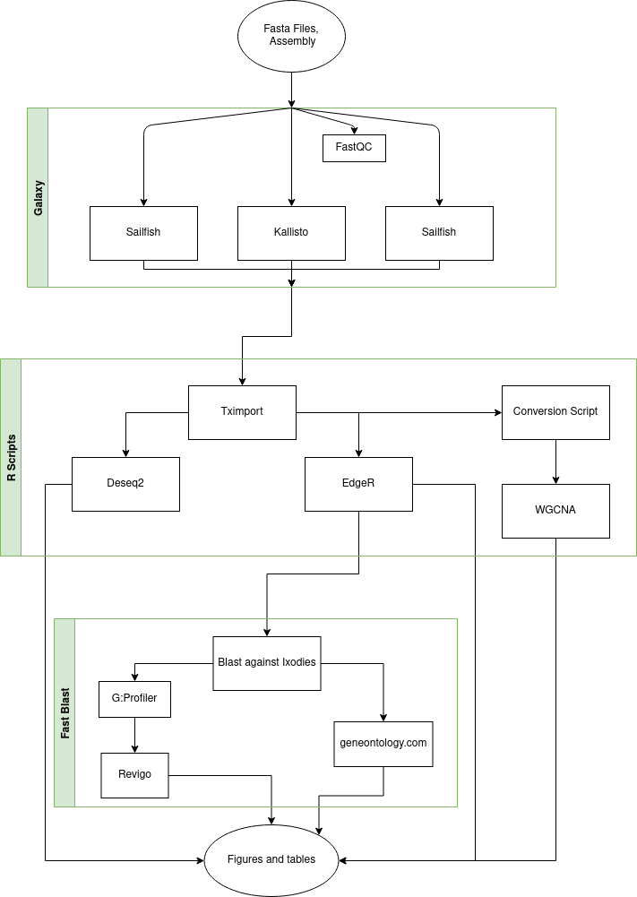
</p>
</div>
</div>
<div id="outline-container-org575e19c" class="outline-2">
<h2 id="org575e19c"><span class="section-number-2">3</span> Directory Structure</h2>
<div class="outline-text-2" id="text-3">
<pre class="example" id="org6556f8a">
&gt;RNA-seq
|
+-&gt;Deseq-Genes
|
+-&gt;edgeR-Genes
| |
| +-&gt;genelists
|
+-&gt;figures
|
+-&gt;GeneReference
|
+-&gt;Scripts
</pre>
</div>
</div>
<div id="outline-container-org3ad90ed" class="outline-2">
<h2 id="org3ad90ed"><span class="section-number-2">4</span> Galaxy</h2>
<div class="outline-text-2" id="text-4">
<ul class="org-ul">
<li>Import the fasta files + assembly to Galaxy</li>
<li>Run FastQC to determine data integrity and quality on each fasta</li>
<li>Run Trimmomatic to trim superfluous data from the fasta files</li>
<li>Run A fish analysis tool on the data (salmon, sailfish, kallisto quant) on each fasta file from trimmomatic.
This requires the assembly as an input</li>
<li>Export the quant files for local analysis with R</li>
</ul>
</div>
</div>

<div id="outline-container-org9b45a10" class="outline-2">
<h2 id="org9b45a10"><span class="section-number-2">5</span> Metadata</h2>
<div class="outline-text-2" id="text-5">
<p>
The metadata for this project describes the treatment, body part, and trial for this project. This metadata is used to interface with the tximport library in R. Tximport uses the metadata to organize the quant data in a way that Deseq2 and EdgeR can understand. An arbitrary number of columns is allowed, but the name column is required. Keep the metadata.csv file in parent directory to the quant files. The quant files should all be placed in the same directory. In this case, the data is placed in a folder called <code>CorrectedQuantData</code>. The Metadata is used by the various tools to figure out what each file means in the context of the experiment. It is very important that the metatdata is a correct representation of the data, or the tools will misinterpret the data.
</p>

<table border="2" cellspacing="0" cellpadding="6" rules="groups" frame="hsides">


<colgroup>
<col  class="org-left" />

<col  class="org-left" />

<col  class="org-left" />

<col  class="org-right" />
</colgroup>
<thead>
<tr>
<th scope="col" class="org-left">name</th>
<th scope="col" class="org-left">pesticides</th>
<th scope="col" class="org-left">part</th>
<th scope="col" class="org-right">trial</th>
</tr>
</thead>
<tbody>
<tr>
<td class="org-left">Per_Bod_1.tabular</td>
<td class="org-left">perm</td>
<td class="org-left">body</td>
<td class="org-right">1</td>
</tr>

<tr>
<td class="org-left">Per_Bod_3.tabular</td>
<td class="org-left">perm</td>
<td class="org-left">body</td>
<td class="org-right">3</td>
</tr>

<tr>
<td class="org-left">Per_Leg_3.tabular</td>
<td class="org-left">perm</td>
<td class="org-left">leg</td>
<td class="org-right">3</td>
</tr>

<tr>
<td class="org-left">Per_Leg_2.tabular</td>
<td class="org-left">perm</td>
<td class="org-left">leg</td>
<td class="org-right">2</td>
</tr>

<tr>
<td class="org-left">Per_Leg_1.tabular</td>
<td class="org-left">perm</td>
<td class="org-left">leg</td>
<td class="org-right">1</td>
</tr>

<tr>
<td class="org-left">Deet_Bod_3.tabular</td>
<td class="org-left">deet</td>
<td class="org-left">body</td>
<td class="org-right">3</td>
</tr>

<tr>
<td class="org-left">Deet_Bod_2.tabular</td>
<td class="org-left">deet</td>
<td class="org-left">body</td>
<td class="org-right">2</td>
</tr>

<tr>
<td class="org-left">Deet_Bod_1.tabular</td>
<td class="org-left">deet</td>
<td class="org-left">body</td>
<td class="org-right">1</td>
</tr>

<tr>
<td class="org-left">Deet_Leg_3.tabular</td>
<td class="org-left">deet</td>
<td class="org-left">leg</td>
<td class="org-right">3</td>
</tr>

<tr>
<td class="org-left">Deet_Leg_2.tabular</td>
<td class="org-left">deet</td>
<td class="org-left">leg</td>
<td class="org-right">2</td>
</tr>

<tr>
<td class="org-left">Deet_Leg_1.tabular</td>
<td class="org-left">deet</td>
<td class="org-left">leg</td>
<td class="org-right">1</td>
</tr>

<tr>
<td class="org-left">Cont_Bod_3.tabular</td>
<td class="org-left">control</td>
<td class="org-left">body</td>
<td class="org-right">3</td>
</tr>

<tr>
<td class="org-left">Cont_Bod_2.tabular</td>
<td class="org-left">control</td>
<td class="org-left">body</td>
<td class="org-right">2</td>
</tr>

<tr>
<td class="org-left">Cont_Bod_1.tabular</td>
<td class="org-left">control</td>
<td class="org-left">body</td>
<td class="org-right">1</td>
</tr>

<tr>
<td class="org-left">Cont_Leg_3.tabular</td>
<td class="org-left">control</td>
<td class="org-left">leg</td>
<td class="org-right">3</td>
</tr>

<tr>
<td class="org-left">Cont_Leg_2a.tabular</td>
<td class="org-left">control</td>
<td class="org-left">leg</td>
<td class="org-right">2</td>
</tr>

<tr>
<td class="org-left">Cont_Leg_1.tabular</td>
<td class="org-left">control</td>
<td class="org-left">leg</td>
<td class="org-right">1</td>
</tr>
</tbody>
</table>
</div>
</div>

<div id="outline-container-org47a323e" class="outline-2">
<h2 id="org47a323e"><span class="section-number-2">6</span> R functions</h2>
<div class="outline-text-2" id="text-6">
<p>
The script snippets in this section are contained within the <code>functions.r</code> file.
</p>
</div>
<div id="outline-container-orgbbf122b" class="outline-3">
<h3 id="orgbbf122b"><span class="section-number-3">6.1</span> txi function</h3>
<div class="outline-text-3" id="text-6-1">
<p>
uses the tximport package to import the quant data. The tximport package is
used in both deseq and edgeR for data import. It is optional, but saves a lot
of time on initial data organization
</p>
<div class="org-src-container">
<pre class="src src-jupyter-R"><span style="color: #88C0D0;">txi</span> <span style="color: #81A1C1;">&lt;-</span> <span style="color: #81A1C1;">function</span><span style="color: #81A1C1;">(</span>directory, quantdatafoldername, metadata, fishtype<span style="color: #81A1C1;">){</span>
  <span style="color: #81A1C1;">library</span><span style="color: #81A1C1;">(</span>tximport<span style="color: #81A1C1;">)</span>
  <span style="color: #81A1C1;">setwd</span><span style="color: #81A1C1;">(</span>directory<span style="color: #81A1C1;">)</span>
  metadata <span style="color: #81A1C1;">&lt;-</span> <span style="color: #88C0D0;">read.csv</span><span style="color: #81A1C1;">(</span>metadata, header<span style="color: #81A1C1;">=</span><span style="color: #8FBCBB;">TRUE</span><span style="color: #81A1C1;">)</span>
  files <span style="color: #81A1C1;">&lt;-</span> <span style="color: #88C0D0;">file.path</span><span style="color: #81A1C1;">(</span>directory, quantdatafoldername, metadata$name<span style="color: #81A1C1;">)</span>
  <span style="color: #88C0D0;">names</span><span style="color: #81A1C1;">(</span>files<span style="color: #81A1C1;">)</span> <span style="color: #81A1C1;">&lt;-</span> metadata$name
  genes <span style="color: #81A1C1;">&lt;-</span> <span style="color: #88C0D0;">read.table</span><span style="color: #81A1C1;">(</span><span style="color: #A3BE8C;">"genes2.tabular"</span><span style="color: #81A1C1;">)</span>
  txi <span style="color: #81A1C1;">&lt;-</span> <span style="color: #88C0D0;">tximport</span><span style="color: #81A1C1;">(</span>files, type<span style="color: #81A1C1;">=</span>fishtype, tx2gene<span style="color: #81A1C1;">=</span>genes<span style="color: #81A1C1;">)</span>
  <span style="color: #81A1C1;">return</span><span style="color: #81A1C1;">(</span><span style="color: #88C0D0;">list</span><span style="color: #81A1C1;">(</span>txi, metadata<span style="color: #81A1C1;">))</span>
<span style="color: #81A1C1;">}</span>
</pre>
</div>
</div>
</div>

<div id="outline-container-orgb26d46f" class="outline-3">
<h3 id="orgb26d46f"><span class="section-number-3">6.2</span> Initial Deseq Function</h3>
<div class="outline-text-3" id="text-6-2">
<p>
Sets up the deseq data set object and returns it. Deseq uses a linear model to fit the data. Read more about it here <a href="https://bioconductor.org/packages/release/bioc/vignettes/DESeq2/inst/doc/DESeq2.html#theory-behind-deseq2">Deseq2</a>.
</p>
<div class="org-src-container">
<pre class="src src-jupyter-R"><span style="color: #88C0D0;">initialDeseq</span> <span style="color: #81A1C1;">&lt;-</span> <span style="color: #81A1C1;">function</span><span style="color: #81A1C1;">(</span>txi, metadata, design<span style="color: #81A1C1;">=</span>~part <span style="color: #81A1C1;">+</span> pesticides<span style="color: #81A1C1;">){</span>
  <span style="color: #81A1C1;">library</span><span style="color: #81A1C1;">(</span>DESeq2<span style="color: #81A1C1;">)</span>
  <span style="color: #6f7787;"># </span><span style="color: #6f7787;">Deseq2 dataset from tximport</span>
  data <span style="color: #81A1C1;">&lt;-</span> <span style="color: #88C0D0;">DESeqDataSetFromTximport</span><span style="color: #81A1C1;">(</span>txi, colData<span style="color: #81A1C1;">=</span>metadata, design <span style="color: #81A1C1;">=</span>design<span style="color: #81A1C1;">)</span>
  Deseq <span style="color: #81A1C1;">&lt;-</span> <span style="color: #88C0D0;">DESeq</span><span style="color: #81A1C1;">(</span>data<span style="color: #81A1C1;">)</span>
  results <span style="color: #81A1C1;">&lt;-</span> <span style="color: #88C0D0;">results</span><span style="color: #81A1C1;">(</span>Deseq<span style="color: #81A1C1;">)</span>
  <span style="color: #88C0D0;">print</span><span style="color: #81A1C1;">(</span><span style="color: #88C0D0;">summary</span><span style="color: #81A1C1;">(</span>results<span style="color: #81A1C1;">))</span>
  <span style="color: #81A1C1;">return</span><span style="color: #81A1C1;">(</span><span style="color: #88C0D0;">list</span><span style="color: #81A1C1;">(</span>Deseq, results<span style="color: #81A1C1;">))</span>
<span style="color: #81A1C1;">}</span>
</pre>
</div>
</div>
</div>

<div id="outline-container-orgc48cb84" class="outline-3">
<h3 id="orgc48cb84"><span class="section-number-3">6.3</span> ReDeseq</h3>
<div class="outline-text-3" id="text-6-3">
<p>
sets up the deseq object with a different design criteria. The design changes how log2foldchange is expressed.
It is more difficult to get multifactorial analysis in a single deseq object than with edgeR. Changing the design is necessary for complicated analysis.
</p>
<div class="org-src-container">
<pre class="src src-jupyter-R"><span style="color: #88C0D0;">reDeseq</span> <span style="color: #81A1C1;">&lt;-</span> <span style="color: #81A1C1;">function</span><span style="color: #81A1C1;">(</span>dds, design<span style="color: #81A1C1;">=</span>~part<span style="color: #81A1C1;">){</span>
  ddsMF <span style="color: #81A1C1;">&lt;-</span> dds
  <span style="color: #88C0D0;">design</span><span style="color: #81A1C1;">(</span>ddsMF<span style="color: #81A1C1;">)</span> <span style="color: #81A1C1;">&lt;-</span> <span style="color: #88C0D0;">formula</span><span style="color: #81A1C1;">(</span>design<span style="color: #81A1C1;">)</span>
  ddsMF <span style="color: #81A1C1;">&lt;-</span> <span style="color: #88C0D0;">DESeq</span><span style="color: #81A1C1;">(</span>ddsMF<span style="color: #81A1C1;">)</span>
  Mres <span style="color: #81A1C1;">&lt;-</span> <span style="color: #88C0D0;">results</span><span style="color: #81A1C1;">(</span>ddsMF<span style="color: #81A1C1;">)</span>
  <span style="color: #81A1C1;">return</span><span style="color: #81A1C1;">(</span><span style="color: #88C0D0;">list</span><span style="color: #81A1C1;">(</span>ddsMf, Mres<span style="color: #81A1C1;">))</span>
  <span style="color: #81A1C1;">}</span>
</pre>
</div>
</div>
</div>

<div id="outline-container-org1d0b463" class="outline-3">
<h3 id="org1d0b463"><span class="section-number-3">6.4</span> initialEdgeR</h3>
<div class="outline-text-3" id="text-6-4">
<p>
Sets up the EdgeR object and returns it. EdgeR uses a different linear model. Read more about it here <a href="https://www.bioconductor.org/packages/release/bioc/vignettes/edgeR/inst/doc/edgeRUsersGuide.pdf">edgeR</a>.
</p>
<div class="org-src-container">
<pre class="src src-jupyter-R"><span style="color: #88C0D0;">initialEdgeR</span> <span style="color: #81A1C1;">&lt;-</span> <span style="color: #81A1C1;">function</span><span style="color: #81A1C1;">(</span>txi, meta<span style="color: #81A1C1;">){</span>
  <span style="color: #81A1C1;">library</span><span style="color: #81A1C1;">(</span>edgeR<span style="color: #81A1C1;">)</span>
  <span style="color: #6f7787;"># </span><span style="color: #6f7787;">EdgR dataset from tximport</span>
  counts <span style="color: #81A1C1;">&lt;-</span> txi$counts
  length <span style="color: #81A1C1;">&lt;-</span> txi$length
  normMat <span style="color: #81A1C1;">&lt;-</span> length <span style="color: #81A1C1;">/</span> <span style="color: #88C0D0;">exp</span><span style="color: #81A1C1;">(</span><span style="color: #88C0D0;">rowMeans</span><span style="color: #81A1C1;">(</span><span style="color: #88C0D0;">log</span><span style="color: #81A1C1;">(</span>length<span style="color: #81A1C1;">)))</span>
  normCts <span style="color: #81A1C1;">&lt;-</span> counts <span style="color: #81A1C1;">/</span> normMat
  eff.lib <span style="color: #81A1C1;">&lt;-</span> <span style="color: #88C0D0;">calcNormFactors</span><span style="color: #81A1C1;">(</span>normCts<span style="color: #81A1C1;">)</span> <span style="color: #81A1C1;">*</span> <span style="color: #88C0D0;">colSums</span><span style="color: #81A1C1;">(</span>normCts<span style="color: #81A1C1;">)</span>
  normMat <span style="color: #81A1C1;">&lt;-</span> <span style="color: #88C0D0;">sweep</span><span style="color: #81A1C1;">(</span>normMat, <span style="color: #B48EAD; font-weight: bold;">2</span>, eff.lib, <span style="color: #A3BE8C;">"*"</span><span style="color: #81A1C1;">)</span>
  normMat <span style="color: #81A1C1;">&lt;-</span> <span style="color: #88C0D0;">log</span><span style="color: #81A1C1;">(</span>normMat<span style="color: #81A1C1;">)</span>
  y <span style="color: #81A1C1;">&lt;-</span> <span style="color: #88C0D0;">DGEList</span><span style="color: #81A1C1;">(</span>counts<span style="color: #81A1C1;">)</span>
  y <span style="color: #81A1C1;">&lt;-</span> <span style="color: #88C0D0;">scaleOffset</span><span style="color: #81A1C1;">(</span>y, normMat<span style="color: #81A1C1;">)</span>
  
  pest <span style="color: #81A1C1;">&lt;-</span> <span style="color: #88C0D0;">factor</span><span style="color: #81A1C1;">(</span>meta$pesticides, levels<span style="color: #81A1C1;">=</span><span style="color: #88C0D0;">c</span><span style="color: #81A1C1;">(</span><span style="color: #A3BE8C;">"perm"</span>, <span style="color: #A3BE8C;">"deet"</span>, <span style="color: #A3BE8C;">"control"</span><span style="color: #81A1C1;">))</span>
  part <span style="color: #81A1C1;">&lt;-</span> <span style="color: #88C0D0;">factor</span><span style="color: #81A1C1;">(</span>meta$part, levels<span style="color: #81A1C1;">=</span><span style="color: #88C0D0;">c</span><span style="color: #81A1C1;">(</span><span style="color: #A3BE8C;">"leg"</span>, <span style="color: #A3BE8C;">"body"</span><span style="color: #81A1C1;">))</span>
  design <span style="color: #81A1C1;">&lt;-</span> <span style="color: #88C0D0;">model.matrix</span><span style="color: #81A1C1;">(</span>~<span style="color: #B48EAD; font-weight: bold;">0</span> <span style="color: #81A1C1;">+</span> pest <span style="color: #81A1C1;">+</span> part<span style="color: #81A1C1;">)</span>
  keep <span style="color: #81A1C1;">&lt;-</span> <span style="color: #88C0D0;">filterByExpr</span><span style="color: #81A1C1;">(</span>y, design<span style="color: #81A1C1;">)</span>
  EdgeR <span style="color: #81A1C1;">&lt;-</span> y<span style="color: #81A1C1;">[</span>keep, <span style="color: #81A1C1;">]</span>
  <span style="color: #81A1C1;">return</span><span style="color: #81A1C1;">(</span><span style="color: #88C0D0;">list</span><span style="color: #81A1C1;">(</span>EdgeR, design<span style="color: #81A1C1;">))</span>
<span style="color: #81A1C1;">}</span>
</pre>
</div>
</div>
</div>
<div id="outline-container-orgb3a9c7e" class="outline-3">
<h3 id="orgb3a9c7e"><span class="section-number-3">6.5</span> estEdgeR</h3>
<div class="outline-text-3" id="text-6-5">
<p>
finds the fit of the data and returns it for further analysis. Uses the edgeR functions to estimate dispersion of
the genes. It is much faster than deseq2.
</p>
<div class="org-src-container">
<pre class="src src-jupyter-R"><span style="color: #88C0D0;">estEdgeR</span> <span style="color: #81A1C1;">&lt;-</span> <span style="color: #81A1C1;">function</span><span style="color: #81A1C1;">(</span>EdgeR, design<span style="color: #81A1C1;">){</span>
  <span style="color: #81A1C1;">library</span><span style="color: #81A1C1;">(</span>edgeR<span style="color: #81A1C1;">)</span>
  y <span style="color: #81A1C1;">&lt;-</span> <span style="color: #88C0D0;">estimateGLMCommonDisp</span><span style="color: #81A1C1;">(</span>EdgeR, design<span style="color: #81A1C1;">)</span>
  y <span style="color: #81A1C1;">&lt;-</span> <span style="color: #88C0D0;">estimateGLMTrendedDisp</span><span style="color: #81A1C1;">(</span>y, design<span style="color: #81A1C1;">)</span>
  y <span style="color: #81A1C1;">&lt;-</span> <span style="color: #88C0D0;">estimateGLMTagwiseDisp</span><span style="color: #81A1C1;">(</span>y, design<span style="color: #81A1C1;">)</span>
  fit <span style="color: #81A1C1;">&lt;-</span> <span style="color: #88C0D0;">glmQLFit</span><span style="color: #81A1C1;">(</span>y, design<span style="color: #81A1C1;">)</span> 
  
  <span style="color: #81A1C1;">return</span><span style="color: #81A1C1;">(</span>fit<span style="color: #81A1C1;">)</span>
<span style="color: #81A1C1;">}</span>
</pre>
</div>
</div>
</div>
</div>
<div id="outline-container-orgd45a6d0" class="outline-2">
<h2 id="orgd45a6d0"><span class="section-number-2">7</span> Expression analyis with R</h2>
<div class="outline-text-2" id="text-7">
<p>
EdgeR and Deseq2 are used to find lists of genes that are up-regulated and down-regulated when compared to design criteria. The design is used to curated the value of logfoldchange in Deseq2. They are compared using a pearson correlation in the plotting section.
</p>
</div>
<div id="outline-container-org0fced14" class="outline-3">
<h3 id="org0fced14"><span class="section-number-3">7.1</span> <span class="todo REFACTOR">REFACTOR</span> Deseq</h3>
<div class="outline-text-3" id="text-7-1">
<p>
The script snippets in this section are contained in the <code>Deseq2-analysis.r</code> file.
</p>
</div>
<div id="outline-container-org2ed257d" class="outline-4">
<h4 id="org2ed257d"><span class="section-number-4">7.1.1</span> Package imports</h4>
<div class="outline-text-4" id="text-7-1-1">
<div class="org-src-container">
<pre class="src src-jupyter-R">
rdata <span style="color: #81A1C1;">&lt;-</span> <span style="color: #88C0D0;">list.files</span><span style="color: #81A1C1;">(</span>pattern<span style="color: #81A1C1;">=</span><span style="color: #A3BE8C;">"\\.Rdata"</span><span style="color: #81A1C1;">)</span>
args <span style="color: #81A1C1;">&lt;-</span> <span style="color: #88C0D0;">commandArgs</span><span style="color: #81A1C1;">(</span>trailingOnly <span style="color: #81A1C1;">=</span> <span style="color: #8FBCBB;">TRUE</span><span style="color: #81A1C1;">)</span>
<span style="color: #81A1C1;">if</span><span style="color: #81A1C1;">(</span><span style="color: #88C0D0;">length</span><span style="color: #81A1C1;">(</span>args<span style="color: #81A1C1;">)</span> <span style="color: #81A1C1;">&gt;</span> <span style="color: #B48EAD; font-weight: bold;">0</span><span style="color: #81A1C1;">){</span>
    <span style="color: #81A1C1;">if</span><span style="color: #81A1C1;">(</span>args <span style="color: #81A1C1;">==</span> <span style="color: #A3BE8C;">"rerun"</span><span style="color: #81A1C1;">){</span>
        <span style="color: #88C0D0;">print</span><span style="color: #81A1C1;">(</span><span style="color: #A3BE8C;">"rerunning data"</span><span style="color: #81A1C1;">)</span>
        r
    <span style="color: #81A1C1;">}</span>
<span style="color: #81A1C1;">}</span>
<span style="color: #6f7787;"># </span><span style="color: #6f7787;">general library imports ----</span>
<span style="color: #81A1C1;">library</span><span style="color: #81A1C1;">(</span>tximport<span style="color: #81A1C1;">)</span>
<span style="color: #81A1C1;">library</span><span style="color: #81A1C1;">(</span>readr<span style="color: #81A1C1;">)</span>
<span style="color: #81A1C1;">library</span><span style="color: #81A1C1;">(</span><span style="color: #A3BE8C;">"pheatmap"</span><span style="color: #81A1C1;">)</span>
</pre>
</div>
</div>
</div>

<div id="outline-container-org2ee85ef" class="outline-4">
<h4 id="org2ee85ef"><span class="section-number-4">7.1.2</span> Initial Setting</h4>
<div class="outline-text-4" id="text-7-1-2">
<p>
These values determine what directory the deseq objects are taken from.
</p>
<div class="org-src-container">
<pre class="src src-jupyter-R"><span style="color: #6f7787;"># </span><span style="color: #6f7787;">change these values to your own situations</span>
directory <span style="color: #81A1C1;">&lt;-</span> <span style="color: #A3BE8C;">"/home/david/Documents/BenoitLab/R/largeRNASEQ"</span>
quantdatafoldername <span style="color: #81A1C1;">&lt;-</span> <span style="color: #A3BE8C;">"CorrectedQuantData"</span>
fishtype <span style="color: #81A1C1;">&lt;-</span> <span style="color: #A3BE8C;">"sailfish"</span>
</pre>
</div>
</div>
</div>

<div id="outline-container-org7d5103d" class="outline-4">
<h4 id="org7d5103d"><span class="section-number-4">7.1.3</span> Run Initial Deseq Functions</h4>
<div class="outline-text-4" id="text-7-1-3">
<div class="org-src-container">
<pre class="src src-jupyter-R"><span style="color: #81A1C1;">source</span><span style="color: #81A1C1;">(</span><span style="color: #A3BE8C;">"/home/david/Documents/BenoitLab/RNA-seq/scripts/functions.r"</span><span style="color: #81A1C1;">)</span>
txi <span style="color: #81A1C1;">&lt;-</span> <span style="color: #88C0D0;">txi</span><span style="color: #81A1C1;">(</span>directory, quantdatafoldername, <span style="color: #A3BE8C;">"metadata.csv"</span>, fishtype<span style="color: #81A1C1;">)</span>
Deseq <span style="color: #81A1C1;">&lt;-</span> <span style="color: #88C0D0;">initialDeseq</span><span style="color: #81A1C1;">(</span>txi<span style="color: #81A1C1;">[[</span><span style="color: #B48EAD; font-weight: bold;">1</span><span style="color: #81A1C1;">]]</span>, txi<span style="color: #81A1C1;">[[</span><span style="color: #B48EAD; font-weight: bold;">2</span><span style="color: #81A1C1;">]])</span>
</pre>
</div>

<pre class="example" id="orgac9508c">
reading in files with read_tsv

1
2
3
4
5
6
7
8
9
10
11
12
13
14
15
16
17


summarizing abundance

summarizing counts

summarizing length

Loading required package: S4Vectors

Loading required package: stats4

Loading required package: BiocGenerics

Loading required package: parallel


Attaching package: ‘BiocGenerics’


The following objects are masked from ‘package:parallel’:

    clusterApply, clusterApplyLB, clusterCall, clusterEvalQ,
    clusterExport, clusterMap, parApply, parCapply, parLapply,
    parLapplyLB, parRapply, parSapply, parSapplyLB


The following objects are masked from ‘package:stats’:

    IQR, mad, sd, var, xtabs


The following objects are masked from ‘package:base’:

    anyDuplicated, append, as.data.frame, basename, cbind, colnames,
    dirname, do.call, duplicated, eval, evalq, Filter, Find, get, grep,
    grepl, intersect, is.unsorted, lapply, Map, mapply, match, mget,
    order, paste, pmax, pmax.int, pmin, pmin.int, Position, rank,
    rbind, Reduce, rownames, sapply, setdiff, sort, table, tapply,
    union, unique, unsplit, which.max, which.min


Attaching package: ‘S4Vectors’


The following object is masked from ‘package:base’:

    expand.grid


Loading required package: IRanges

Loading required package: GenomicRanges

Loading required package: GenomeInfoDb

Loading required package: SummarizedExperiment

Loading required package: MatrixGenerics

Loading required package: matrixStats


Attaching package: ‘MatrixGenerics’


The following objects are masked from ‘package:matrixStats’:

    colAlls, colAnyNAs, colAnys, colAvgsPerRowSet, colCollapse,
    colCounts, colCummaxs, colCummins, colCumprods, colCumsums,
    colDiffs, colIQRDiffs, colIQRs, colLogSumExps, colMadDiffs,
    colMads, colMaxs, colMeans2, colMedians, colMins, colOrderStats,
    colProds, colQuantiles, colRanges, colRanks, colSdDiffs, colSds,
    colSums2, colTabulates, colVarDiffs, colVars, colWeightedMads,
    colWeightedMeans, colWeightedMedians, colWeightedSds,
    colWeightedVars, rowAlls, rowAnyNAs, rowAnys, rowAvgsPerColSet,
    rowCollapse, rowCounts, rowCummaxs, rowCummins, rowCumprods,
    rowCumsums, rowDiffs, rowIQRDiffs, rowIQRs, rowLogSumExps,
    rowMadDiffs, rowMads, rowMaxs, rowMeans2, rowMedians, rowMins,
    rowOrderStats, rowProds, rowQuantiles, rowRanges, rowRanks,
    rowSdDiffs, rowSds, rowSums2, rowTabulates, rowVarDiffs, rowVars,
    rowWeightedMads, rowWeightedMeans, rowWeightedMedians,
    rowWeightedSds, rowWeightedVars


Loading required package: Biobase

Welcome to Bioconductor

    Vignettes contain introductory material; view with
    'browseVignettes()'. To cite Bioconductor, see
    'citation("Biobase")', and for packages 'citation("pkgname")'.


Attaching package: ‘Biobase’


The following object is masked from ‘package:MatrixGenerics’:

    rowMedians


The following objects are masked from ‘package:matrixStats’:

    anyMissing, rowMedians


Warning message in DESeqDataSet(se, design = design, ignoreRank):
“some variables in design formula are characters, converting to factors”
using counts and average transcript lengths from tximport

estimating size factors

using 'avgTxLength' from assays(dds), correcting for library size

estimating dispersions

gene-wise dispersion estimates

mean-dispersion relationship

final dispersion estimates

fitting model and testing


out of 163205 with nonzero total read count
adjusted p-value &lt; 0.1
LFC &gt; 0 (up)       : 1790, 1.1%
LFC &lt; 0 (down)     : 2044, 1.3%
outliers [1]       : 2298, 1.4%
low counts [2]     : 18457, 11%
(mean count &lt; 3)
[1] see 'cooksCutoff' argument of ?results
[2] see 'independentFiltering' argument of ?results

NULL
</pre>
</div>
</div>

<div id="outline-container-org9121d94" class="outline-4">
<h4 id="org9121d94"><span class="section-number-4">7.1.4</span> Do initial data manipulation</h4>
<div class="outline-text-4" id="text-7-1-4">
<p>
The part design is used to compare the leg to the body in total, disregarding pesticide. This is explained in detail in the pearson correlation section.
</p>
<div class="org-src-container">
<pre class="src src-jupyter-R">dds <span style="color: #81A1C1;">&lt;-</span> Deseq<span style="color: #81A1C1;">[[</span><span style="color: #B48EAD; font-weight: bold;">1</span><span style="color: #81A1C1;">]]</span>
res <span style="color: #81A1C1;">&lt;-</span> Deseq<span style="color: #81A1C1;">[[</span><span style="color: #B48EAD; font-weight: bold;">2</span><span style="color: #81A1C1;">]]</span>
<span style="color: #6f7787;">#</span><span style="color: #6f7787;">* vsd ntd rld</span>
vsd <span style="color: #81A1C1;">&lt;-</span> <span style="color: #88C0D0;">vst</span><span style="color: #81A1C1;">(</span>dds, blind<span style="color: #81A1C1;">=</span><span style="color: #8FBCBB;">FALSE</span><span style="color: #81A1C1;">)</span>
rld <span style="color: #81A1C1;">&lt;-</span> <span style="color: #88C0D0;">rlog</span><span style="color: #81A1C1;">(</span>dds, blind<span style="color: #81A1C1;">=</span><span style="color: #8FBCBB;">FALSE</span><span style="color: #81A1C1;">)</span>
ntd <span style="color: #81A1C1;">&lt;-</span> <span style="color: #88C0D0;">normTransform</span><span style="color: #81A1C1;">(</span>dds<span style="color: #81A1C1;">)</span>

ddsMF <span style="color: #81A1C1;">&lt;-</span> dds
<span style="color: #88C0D0;">design</span><span style="color: #81A1C1;">(</span>ddsMF<span style="color: #81A1C1;">)</span> <span style="color: #81A1C1;">&lt;-</span> <span style="color: #88C0D0;">formula</span><span style="color: #81A1C1;">(</span>~part <span style="color: #81A1C1;">+</span> pesticides<span style="color: #81A1C1;">)</span>
ddsMF <span style="color: #81A1C1;">&lt;-</span> <span style="color: #88C0D0;">DESeq</span><span style="color: #81A1C1;">(</span>ddsMF<span style="color: #81A1C1;">)</span>
Mres <span style="color: #81A1C1;">&lt;-</span> <span style="color: #88C0D0;">results</span><span style="color: #81A1C1;">(</span>ddsMF<span style="color: #81A1C1;">)</span>
<span style="color: #88C0D0;">design</span><span style="color: #81A1C1;">(</span>dds<span style="color: #81A1C1;">)</span> <span style="color: #81A1C1;">&lt;-</span> <span style="color: #88C0D0;">formula</span><span style="color: #81A1C1;">(</span>~part<span style="color: #81A1C1;">)</span>
part <span style="color: #81A1C1;">&lt;-</span> <span style="color: #88C0D0;">DESeq</span><span style="color: #81A1C1;">(</span>dds<span style="color: #81A1C1;">)</span>
res <span style="color: #81A1C1;">&lt;-</span> <span style="color: #88C0D0;">results</span><span style="color: #81A1C1;">(</span>part<span style="color: #81A1C1;">)</span>
</pre>
</div>

<pre class="example" id="org33fe8e1">
using pre-existing normalization factors

estimating dispersions

found already estimated dispersions, replacing these

gene-wise dispersion estimates

mean-dispersion relationship

final dispersion estimates

fitting model and testing

using pre-existing normalization factors

estimating dispersions

found already estimated dispersions, replacing these

gene-wise dispersion estimates

mean-dispersion relationship

final dispersion estimates

fitting model and testing

-- replacing outliers and refitting for 4107 genes
-- DESeq argument 'minReplicatesForReplace' = 7
-- original counts are preserved in counts(dds)

estimating dispersions

fitting model and testing
</pre>
</div>
</div>
<div id="outline-container-org7ca09e3" class="outline-4">
<h4 id="org7ca09e3"><span class="section-number-4">7.1.5</span> Initial selection of the data based on body part</h4>
<div class="outline-text-4" id="text-7-1-5">
<ul class="org-ul">
<li>p value of less than 0.01</li>
<li>Leg is compared to body, therefore down-regulated are up-regulated in body</li>
</ul>
<div class="org-src-container">
<pre class="src src-jupyter-R">DR <span style="color: #81A1C1;">&lt;-</span> res<span style="color: #81A1C1;">[</span> <span style="color: #88C0D0;">which</span><span style="color: #81A1C1;">(</span>Mres$padj <span style="color: #81A1C1;">&lt;</span> <span style="color: #B48EAD; font-weight: bold;">0.01</span><span style="color: #81A1C1;">)</span>, <span style="color: #81A1C1;">]</span>
Body <span style="color: #81A1C1;">&lt;-</span> DR<span style="color: #81A1C1;">[</span><span style="color: #88C0D0;">which</span><span style="color: #81A1C1;">(</span>DR$log2FoldChange <span style="color: #81A1C1;">&lt;</span> <span style="color: #81A1C1;">-</span><span style="color: #B48EAD; font-weight: bold;">2</span><span style="color: #81A1C1;">)</span>,<span style="color: #81A1C1;">]</span>
Leg <span style="color: #81A1C1;">&lt;-</span> DR<span style="color: #81A1C1;">[</span><span style="color: #88C0D0;">which</span><span style="color: #81A1C1;">(</span>DR$log2FoldChange <span style="color: #81A1C1;">&gt;</span> <span style="color: #B48EAD; font-weight: bold;">2</span><span style="color: #81A1C1;">)</span>, <span style="color: #81A1C1;">]</span>
</pre>
</div>
</div>
</div>

<div id="outline-container-org8780e66" class="outline-4">
<h4 id="org8780e66"><span class="section-number-4">7.1.6</span> Save lists of the respective up-regulated genes</h4>
<div class="outline-text-4" id="text-7-1-6">
<div class="org-src-container">
<pre class="src src-jupyter-R"><span style="color: #88C0D0;">write.table</span><span style="color: #81A1C1;">(</span>Body, file<span style="color: #81A1C1;">=</span><span style="color: #A3BE8C;">"/home/david/Documents/BenoitLab/RNA-seq/Deseq-Genes/Body.csv"</span>, quote<span style="color: #81A1C1;">=</span><span style="color: #8FBCBB;">FALSE</span>, col.names<span style="color: #81A1C1;">=</span><span style="color: #8FBCBB;">TRUE</span>, row.names<span style="color: #81A1C1;">=</span><span style="color: #8FBCBB;">TRUE</span>, sep<span style="color: #81A1C1;">=</span><span style="color: #A3BE8C;">","</span><span style="color: #81A1C1;">)</span>
<span style="color: #88C0D0;">write.table</span><span style="color: #81A1C1;">(</span>Leg, file<span style="color: #81A1C1;">=</span><span style="color: #A3BE8C;">"/home/david/Documents/BenoitLab/RNA-seq/Deseq-Genes/Leg.csv"</span>, quote<span style="color: #81A1C1;">=</span><span style="color: #8FBCBB;">FALSE</span>, col.names<span style="color: #81A1C1;">=</span><span style="color: #8FBCBB;">TRUE</span>, row.names<span style="color: #81A1C1;">=</span><span style="color: #8FBCBB;">TRUE</span>, sep<span style="color: #81A1C1;">=</span><span style="color: #A3BE8C;">","</span><span style="color: #81A1C1;">)</span>
<span style="color: #88C0D0;">write.table</span><span style="color: #81A1C1;">(</span>res, file<span style="color: #81A1C1;">=</span><span style="color: #A3BE8C;">"/home/david/Documents/BenoitLab/RNA-seq/Deseq-Genes/total.csv"</span>, quote<span style="color: #81A1C1;">=</span><span style="color: #8FBCBB;">FALSE</span>, col.names<span style="color: #81A1C1;">=</span><span style="color: #8FBCBB;">TRUE</span>, row.names<span style="color: #81A1C1;">=</span><span style="color: #8FBCBB;">TRUE</span>, sep<span style="color: #81A1C1;">=</span><span style="color: #A3BE8C;">","</span><span style="color: #81A1C1;">)</span>
</pre>
</div>
</div>
</div>
<div id="outline-container-org22405b2" class="outline-4">
<h4 id="org22405b2"><span class="section-number-4">7.1.7</span> Time Series</h4>
<div class="outline-text-4" id="text-7-1-7">
<div class="org-src-container">
<pre class="src src-jupyter-R">directory <span style="color: #81A1C1;">&lt;-</span> <span style="color: #A3BE8C;">"/home/david/Documents/BenoitLab/RNA-seq"</span>
quantdatafoldername <span style="color: #81A1C1;">&lt;-</span> <span style="color: #A3BE8C;">"TimeSeriesQuant"</span>
fishtype <span style="color: #81A1C1;">&lt;-</span> <span style="color: #A3BE8C;">"sailfish"</span>
metadata <span style="color: #81A1C1;">&lt;-</span> <span style="color: #A3BE8C;">"timeseriesMetadata.csv"</span>
<span style="color: #81A1C1;">source</span><span style="color: #81A1C1;">(</span><span style="color: #A3BE8C;">"/home/david/Documents/BenoitLab/RNA-seq/scripts/functions.r"</span><span style="color: #81A1C1;">)</span>
txi <span style="color: #81A1C1;">&lt;-</span> <span style="color: #88C0D0;">txi</span><span style="color: #81A1C1;">(</span>directory, quantdatafoldername, metadata, fishtype<span style="color: #81A1C1;">)</span>
Deseq <span style="color: #81A1C1;">&lt;-</span> <span style="color: #88C0D0;">initialDeseq</span><span style="color: #81A1C1;">(</span>txi<span style="color: #81A1C1;">[[</span><span style="color: #B48EAD; font-weight: bold;">1</span><span style="color: #81A1C1;">]]</span>, txi<span style="color: #81A1C1;">[[</span><span style="color: #B48EAD; font-weight: bold;">2</span><span style="color: #81A1C1;">]]</span>, design <span style="color: #81A1C1;">=</span> ~Time<span style="color: #81A1C1;">)</span>
dds <span style="color: #81A1C1;">&lt;-</span> Deseq<span style="color: #81A1C1;">[[</span><span style="color: #B48EAD; font-weight: bold;">1</span><span style="color: #81A1C1;">]]</span>
res <span style="color: #81A1C1;">&lt;-</span> Deseq<span style="color: #81A1C1;">[[</span><span style="color: #B48EAD; font-weight: bold;">2</span><span style="color: #81A1C1;">]]</span>
res6 <span style="color: #81A1C1;">&lt;-</span> <span style="color: #88C0D0;">results</span><span style="color: #81A1C1;">(</span>dds, contrast <span style="color: #81A1C1;">=</span> <span style="color: #88C0D0;">c</span><span style="color: #81A1C1;">(</span><span style="color: #A3BE8C;">"Time"</span>, <span style="color: #A3BE8C;">"6h"</span>, <span style="color: #A3BE8C;">"control"</span><span style="color: #81A1C1;">))</span>
res2 <span style="color: #81A1C1;">&lt;-</span> <span style="color: #88C0D0;">results</span><span style="color: #81A1C1;">(</span>dds, contrast <span style="color: #81A1C1;">=</span> <span style="color: #88C0D0;">c</span><span style="color: #81A1C1;">(</span><span style="color: #A3BE8C;">"Time"</span>, <span style="color: #A3BE8C;">"2h"</span>, <span style="color: #A3BE8C;">"control"</span><span style="color: #81A1C1;">))</span>
res24 <span style="color: #81A1C1;">&lt;-</span> <span style="color: #88C0D0;">results</span><span style="color: #81A1C1;">(</span>dds, contrast <span style="color: #81A1C1;">=</span> <span style="color: #88C0D0;">c</span><span style="color: #81A1C1;">(</span><span style="color: #A3BE8C;">"Time"</span>, <span style="color: #A3BE8C;">"24h"</span>, <span style="color: #A3BE8C;">"control"</span><span style="color: #81A1C1;">))</span>
DR6 <span style="color: #81A1C1;">&lt;-</span> res6<span style="color: #81A1C1;">[</span><span style="color: #88C0D0;">which</span><span style="color: #81A1C1;">(</span>res$padj <span style="color: #81A1C1;">&lt;</span> <span style="color: #B48EAD; font-weight: bold;">0.01</span><span style="color: #81A1C1;">)</span>, <span style="color: #81A1C1;">]</span>
DR2 <span style="color: #81A1C1;">&lt;-</span> res2<span style="color: #81A1C1;">[</span><span style="color: #88C0D0;">which</span><span style="color: #81A1C1;">(</span>res$padj <span style="color: #81A1C1;">&lt;</span> <span style="color: #B48EAD; font-weight: bold;">0.01</span><span style="color: #81A1C1;">)</span>, <span style="color: #81A1C1;">]</span>
DR24 <span style="color: #81A1C1;">&lt;-</span> res24<span style="color: #81A1C1;">[</span><span style="color: #88C0D0;">which</span><span style="color: #81A1C1;">(</span>res$padj <span style="color: #81A1C1;">&lt;</span> <span style="color: #B48EAD; font-weight: bold;">0.01</span><span style="color: #81A1C1;">)</span>, <span style="color: #81A1C1;">]</span>

UP6 <span style="color: #81A1C1;">&lt;-</span> DR6<span style="color: #81A1C1;">[</span><span style="color: #88C0D0;">which</span><span style="color: #81A1C1;">(</span>DR6$log2FoldChange <span style="color: #81A1C1;">&gt;</span> <span style="color: #B48EAD; font-weight: bold;">2</span><span style="color: #81A1C1;">)</span>, <span style="color: #81A1C1;">]</span>
UP2 <span style="color: #81A1C1;">&lt;-</span> DR2<span style="color: #81A1C1;">[</span><span style="color: #88C0D0;">which</span><span style="color: #81A1C1;">(</span>DR2$log2FoldChange <span style="color: #81A1C1;">&gt;</span> <span style="color: #B48EAD; font-weight: bold;">2</span><span style="color: #81A1C1;">)</span>, <span style="color: #81A1C1;">]</span>
UP24 <span style="color: #81A1C1;">&lt;-</span> DR24<span style="color: #81A1C1;">[</span><span style="color: #88C0D0;">which</span><span style="color: #81A1C1;">(</span>DR24$log2FoldChange <span style="color: #81A1C1;">&gt;</span> <span style="color: #B48EAD; font-weight: bold;">2</span><span style="color: #81A1C1;">)</span>, <span style="color: #81A1C1;">]</span>

DOWN6 <span style="color: #81A1C1;">&lt;-</span> DR6<span style="color: #81A1C1;">[</span><span style="color: #88C0D0;">which</span><span style="color: #81A1C1;">(</span>DR6$log2FoldChange <span style="color: #81A1C1;">&lt;</span> <span style="color: #81A1C1;">-</span><span style="color: #B48EAD; font-weight: bold;">2</span><span style="color: #81A1C1;">)</span>, <span style="color: #81A1C1;">]</span>
DOWN2 <span style="color: #81A1C1;">&lt;-</span> DR2<span style="color: #81A1C1;">[</span><span style="color: #88C0D0;">which</span><span style="color: #81A1C1;">(</span>DR2$log2FoldChange <span style="color: #81A1C1;">&lt;</span> <span style="color: #81A1C1;">-</span><span style="color: #B48EAD; font-weight: bold;">2</span><span style="color: #81A1C1;">)</span>, <span style="color: #81A1C1;">]</span>
DOWN24 <span style="color: #81A1C1;">&lt;-</span> DR24<span style="color: #81A1C1;">[</span><span style="color: #88C0D0;">which</span><span style="color: #81A1C1;">(</span>DR24$log2FoldChange <span style="color: #81A1C1;">&lt;</span> <span style="color: #81A1C1;">-</span><span style="color: #B48EAD; font-weight: bold;">2</span><span style="color: #81A1C1;">)</span>, <span style="color: #81A1C1;">]</span>

<span style="color: #88C0D0;">write.table</span><span style="color: #81A1C1;">(</span>UP6, file <span style="color: #81A1C1;">=</span> <span style="color: #A3BE8C;">"/home/david/Documents/BenoitLab/RNA-seq/Deseq-Genes/timeSeriesGenes/UP6.csv"</span>, quote <span style="color: #81A1C1;">=</span> <span style="color: #8FBCBB;">FALSE</span>, col.names <span style="color: #81A1C1;">=</span> <span style="color: #8FBCBB;">TRUE</span>, row.names <span style="color: #81A1C1;">=</span> <span style="color: #8FBCBB;">TRUE</span>, sep <span style="color: #81A1C1;">=</span> <span style="color: #A3BE8C;">","</span><span style="color: #81A1C1;">)</span>
<span style="color: #88C0D0;">write.table</span><span style="color: #81A1C1;">(</span>UP2, file <span style="color: #81A1C1;">=</span> <span style="color: #A3BE8C;">"/home/david/Documents/BenoitLab/RNA-seq/Deseq-Genes/timeSeriesGenes/UP2.csv"</span>, quote <span style="color: #81A1C1;">=</span> <span style="color: #8FBCBB;">FALSE</span>, col.names <span style="color: #81A1C1;">=</span> <span style="color: #8FBCBB;">TRUE</span>, row.names <span style="color: #81A1C1;">=</span> <span style="color: #8FBCBB;">TRUE</span>, sep <span style="color: #81A1C1;">=</span> <span style="color: #A3BE8C;">","</span><span style="color: #81A1C1;">)</span>
<span style="color: #88C0D0;">write.table</span><span style="color: #81A1C1;">(</span>UP24, file <span style="color: #81A1C1;">=</span> <span style="color: #A3BE8C;">"/home/david/Documents/BenoitLab/RNA-seq/Deseq-Genes/timeSeriesGenes/UP24.csv"</span>, quote <span style="color: #81A1C1;">=</span> <span style="color: #8FBCBB;">FALSE</span>, col.names <span style="color: #81A1C1;">=</span> <span style="color: #8FBCBB;">TRUE</span>, row.names <span style="color: #81A1C1;">=</span> <span style="color: #8FBCBB;">TRUE</span>, sep <span style="color: #81A1C1;">=</span> <span style="color: #A3BE8C;">","</span><span style="color: #81A1C1;">)</span>
<span style="color: #88C0D0;">write.table</span><span style="color: #81A1C1;">(</span>DOWN6, file <span style="color: #81A1C1;">=</span> <span style="color: #A3BE8C;">"/home/david/Documents/BenoitLab/RNA-seq/Deseq-Genes/timeSeriesGenes/DOWN6.csv"</span>, quote <span style="color: #81A1C1;">=</span> <span style="color: #8FBCBB;">FALSE</span>, col.names <span style="color: #81A1C1;">=</span> <span style="color: #8FBCBB;">TRUE</span>, row.names <span style="color: #81A1C1;">=</span> <span style="color: #8FBCBB;">TRUE</span>, sep <span style="color: #81A1C1;">=</span> <span style="color: #A3BE8C;">","</span><span style="color: #81A1C1;">)</span>
<span style="color: #88C0D0;">write.table</span><span style="color: #81A1C1;">(</span>DOWN2, file <span style="color: #81A1C1;">=</span> <span style="color: #A3BE8C;">"/home/david/Documents/BenoitLab/RNA-seq/Deseq-Genes/timeSeriesGenes/DOWN2.csv"</span>, quote <span style="color: #81A1C1;">=</span> <span style="color: #8FBCBB;">FALSE</span>, col.names <span style="color: #81A1C1;">=</span> <span style="color: #8FBCBB;">TRUE</span>, row.names <span style="color: #81A1C1;">=</span> <span style="color: #8FBCBB;">TRUE</span>, sep <span style="color: #81A1C1;">=</span> <span style="color: #A3BE8C;">","</span><span style="color: #81A1C1;">)</span>
<span style="color: #88C0D0;">write.table</span><span style="color: #81A1C1;">(</span>DOWN24, file <span style="color: #81A1C1;">=</span> <span style="color: #A3BE8C;">"/home/david/Documents/BenoitLab/RNA-seq/Deseq-Genes/timeSeriesGenes/DOWN24.csv"</span>, quote <span style="color: #81A1C1;">=</span> <span style="color: #8FBCBB;">FALSE</span>, col.names <span style="color: #81A1C1;">=</span> <span style="color: #8FBCBB;">TRUE</span>, row.names <span style="color: #81A1C1;">=</span> <span style="color: #8FBCBB;">TRUE</span>, sep <span style="color: #81A1C1;">=</span> <span style="color: #A3BE8C;">","</span><span style="color: #81A1C1;">)</span>
<span style="color: #88C0D0;">write.table</span><span style="color: #81A1C1;">(</span><span style="color: #88C0D0;">row.names</span><span style="color: #81A1C1;">(</span>UP6<span style="color: #81A1C1;">)</span>, file <span style="color: #81A1C1;">=</span> <span style="color: #A3BE8C;">"/home/david/Documents/BenoitLab/RNA-seq/Deseq-Genes/timeSeriesGenes/UP6.csv"</span>, quote <span style="color: #81A1C1;">=</span> <span style="color: #8FBCBB;">FALSE</span>, col.names <span style="color: #81A1C1;">=</span> <span style="color: #8FBCBB;">TRUE</span>, row.names <span style="color: #81A1C1;">=</span> <span style="color: #8FBCBB;">TRUE</span>, sep <span style="color: #81A1C1;">=</span> <span style="color: #A3BE8C;">","</span><span style="color: #81A1C1;">)</span>
<span style="color: #88C0D0;">write.table</span><span style="color: #81A1C1;">(</span><span style="color: #88C0D0;">row.names</span><span style="color: #81A1C1;">(</span>UP2<span style="color: #81A1C1;">)</span>, file <span style="color: #81A1C1;">=</span> <span style="color: #A3BE8C;">"/home/david/Documents/BenoitLab/RNA-seq/Deseq-Genes/timeSeriesGenes/UP2.csv"</span>, quote <span style="color: #81A1C1;">=</span> <span style="color: #8FBCBB;">FALSE</span>, col.names <span style="color: #81A1C1;">=</span> <span style="color: #8FBCBB;">TRUE</span>, row.names <span style="color: #81A1C1;">=</span> <span style="color: #8FBCBB;">TRUE</span>, sep <span style="color: #81A1C1;">=</span> <span style="color: #A3BE8C;">","</span><span style="color: #81A1C1;">)</span>
<span style="color: #88C0D0;">write.table</span><span style="color: #81A1C1;">(</span><span style="color: #88C0D0;">row.names</span><span style="color: #81A1C1;">(</span>UP24<span style="color: #81A1C1;">)</span>, file <span style="color: #81A1C1;">=</span> <span style="color: #A3BE8C;">"/home/david/Documents/BenoitLab/RNA-seq/Deseq-Genes/timeSeriesGenes/UP24.csv"</span>, quote <span style="color: #81A1C1;">=</span> <span style="color: #8FBCBB;">FALSE</span>, col.names <span style="color: #81A1C1;">=</span> <span style="color: #8FBCBB;">TRUE</span>, row.names <span style="color: #81A1C1;">=</span> <span style="color: #8FBCBB;">TRUE</span>, sep <span style="color: #81A1C1;">=</span> <span style="color: #A3BE8C;">","</span><span style="color: #81A1C1;">)</span>
<span style="color: #88C0D0;">write.table</span><span style="color: #81A1C1;">(</span><span style="color: #88C0D0;">row.names</span><span style="color: #81A1C1;">(</span>DOWN6<span style="color: #81A1C1;">)</span>, file <span style="color: #81A1C1;">=</span> <span style="color: #A3BE8C;">"/home/david/Documents/BenoitLab/RNA-seq/Deseq-Genes/timeSeriesGenes/DOWN6.csv"</span>, quote <span style="color: #81A1C1;">=</span> <span style="color: #8FBCBB;">FALSE</span>, col.names <span style="color: #81A1C1;">=</span> <span style="color: #8FBCBB;">TRUE</span>, row.names <span style="color: #81A1C1;">=</span> <span style="color: #8FBCBB;">TRUE</span>, sep <span style="color: #81A1C1;">=</span> <span style="color: #A3BE8C;">","</span><span style="color: #81A1C1;">)</span>
<span style="color: #88C0D0;">write.table</span><span style="color: #81A1C1;">(</span><span style="color: #88C0D0;">row.names</span><span style="color: #81A1C1;">(</span>DOWN2<span style="color: #81A1C1;">)</span>, file <span style="color: #81A1C1;">=</span> <span style="color: #A3BE8C;">"/home/david/Documents/BenoitLab/RNA-seq/Deseq-Genes/timeSeriesGenes/DOWN2.csv"</span>, quote <span style="color: #81A1C1;">=</span> <span style="color: #8FBCBB;">FALSE</span>, col.names <span style="color: #81A1C1;">=</span> <span style="color: #8FBCBB;">TRUE</span>, row.names <span style="color: #81A1C1;">=</span> <span style="color: #8FBCBB;">TRUE</span>, sep <span style="color: #81A1C1;">=</span> <span style="color: #A3BE8C;">","</span><span style="color: #81A1C1;">)</span>
<span style="color: #88C0D0;">write.table</span><span style="color: #81A1C1;">(</span><span style="color: #88C0D0;">row.names</span><span style="color: #81A1C1;">(</span>DOWN24<span style="color: #81A1C1;">)</span>, file <span style="color: #81A1C1;">=</span> <span style="color: #A3BE8C;">"/home/david/Documents/BenoitLab/RNA-seq/Deseq-Genes/timeSeriesGenes/DOWN24.csv"</span>, quote <span style="color: #81A1C1;">=</span> <span style="color: #8FBCBB;">FALSE</span>, col.names <span style="color: #81A1C1;">=</span> <span style="color: #8FBCBB;">TRUE</span>, row.names <span style="color: #81A1C1;">=</span> <span style="color: #8FBCBB;">TRUE</span>, sep <span style="color: #81A1C1;">=</span> <span style="color: #A3BE8C;">","</span><span style="color: #81A1C1;">)</span>
</pre>
</div>
</div>
</div>
<div id="outline-container-org08c855a" class="outline-4">
<h4 id="org08c855a"><span class="section-number-4">7.1.8</span> Select the genes based on pesticide</h4>
<div class="outline-text-4" id="text-7-1-8">
<div class="org-src-container">
<pre class="src src-jupyter-R">pestdd <span style="color: #81A1C1;">&lt;-</span>dds
<span style="color: #88C0D0;">design</span><span style="color: #81A1C1;">(</span>pestdd<span style="color: #81A1C1;">)</span> <span style="color: #81A1C1;">&lt;-</span> <span style="color: #88C0D0;">formula</span><span style="color: #81A1C1;">(</span>~part <span style="color: #81A1C1;">+</span> pesticides<span style="color: #81A1C1;">)</span>
pestdd <span style="color: #81A1C1;">&lt;-</span> <span style="color: #88C0D0;">DESeq</span><span style="color: #81A1C1;">(</span>pestdd<span style="color: #81A1C1;">)</span>
permres <span style="color: #81A1C1;">&lt;-</span> <span style="color: #88C0D0;">results</span><span style="color: #81A1C1;">(</span>pestdd, contrast <span style="color: #81A1C1;">=</span> <span style="color: #88C0D0;">c</span><span style="color: #81A1C1;">(</span><span style="color: #A3BE8C;">"pesticides"</span>, <span style="color: #A3BE8C;">"perm"</span>, <span style="color: #A3BE8C;">"control"</span><span style="color: #81A1C1;">))</span>
deetres <span style="color: #81A1C1;">&lt;-</span> <span style="color: #88C0D0;">results</span><span style="color: #81A1C1;">(</span>pestdd, contrast <span style="color: #81A1C1;">=</span> <span style="color: #88C0D0;">c</span><span style="color: #81A1C1;">(</span><span style="color: #A3BE8C;">"pesticides"</span>, <span style="color: #A3BE8C;">"deet"</span>, <span style="color: #A3BE8C;">"control"</span><span style="color: #81A1C1;">))</span>
</pre>
</div>

<pre class="example" id="orgb0b5cf7">
using pre-existing normalization factors

estimating dispersions

found already estimated dispersions, replacing these

gene-wise dispersion estimates

mean-dispersion relationship

final dispersion estimates

fitting model and testing
</pre>
</div>
</div>
<div id="outline-container-org828efba" class="outline-4">
<h4 id="org828efba"><span class="section-number-4">7.1.9</span> select the genes</h4>
<div class="outline-text-4" id="text-7-1-9">
<div class="org-src-container">
<pre class="src src-jupyter-R">permres <span style="color: #81A1C1;">&lt;-</span> permres<span style="color: #81A1C1;">[</span><span style="color: #88C0D0;">which</span><span style="color: #81A1C1;">(</span>permres$padj <span style="color: #81A1C1;">&lt;</span> <span style="color: #B48EAD; font-weight: bold;">0.01</span><span style="color: #81A1C1;">)</span>,<span style="color: #81A1C1;">]</span>
deetres <span style="color: #81A1C1;">&lt;-</span> deetres<span style="color: #81A1C1;">[</span><span style="color: #88C0D0;">which</span><span style="color: #81A1C1;">(</span>deetres$padj <span style="color: #81A1C1;">&lt;</span> <span style="color: #B48EAD; font-weight: bold;">0.01</span><span style="color: #81A1C1;">)</span>,<span style="color: #81A1C1;">]</span>
upPermvsControl <span style="color: #81A1C1;">&lt;-</span> permres<span style="color: #81A1C1;">[</span><span style="color: #88C0D0;">which</span><span style="color: #81A1C1;">(</span>permres$log2FoldChange <span style="color: #81A1C1;">&gt;</span><span style="color: #B48EAD; font-weight: bold;">2</span><span style="color: #81A1C1;">)</span>,<span style="color: #81A1C1;">]</span>
downPermvsControl <span style="color: #81A1C1;">&lt;-</span> permres<span style="color: #81A1C1;">[</span><span style="color: #88C0D0;">which</span><span style="color: #81A1C1;">(</span>permres$log2FoldChange <span style="color: #81A1C1;">&lt;</span> <span style="color: #81A1C1;">-</span><span style="color: #B48EAD; font-weight: bold;">2</span><span style="color: #81A1C1;">)</span>,<span style="color: #81A1C1;">]</span>
upDeetvsControl <span style="color: #81A1C1;">&lt;-</span> deetres<span style="color: #81A1C1;">[</span><span style="color: #88C0D0;">which</span><span style="color: #81A1C1;">(</span>deetres$log2FoldChange <span style="color: #81A1C1;">&gt;</span> <span style="color: #B48EAD; font-weight: bold;">2</span><span style="color: #81A1C1;">)</span>, <span style="color: #81A1C1;">]</span>
downDeetvsControl <span style="color: #81A1C1;">&lt;-</span> deetres<span style="color: #81A1C1;">[</span><span style="color: #88C0D0;">which</span><span style="color: #81A1C1;">(</span>deetres$log2FoldChange <span style="color: #81A1C1;">&lt;</span> <span style="color: #81A1C1;">-</span><span style="color: #B48EAD; font-weight: bold;">2</span><span style="color: #81A1C1;">)</span>, <span style="color: #81A1C1;">]</span>
<span style="color: #88C0D0;">write.table</span><span style="color: #81A1C1;">(</span>upPermvsControl, file<span style="color: #81A1C1;">=</span><span style="color: #A3BE8C;">"/home/david/Documents/BenoitLab/RNA-seq/Deseq-Genes/upPerm.csv"</span>, quote<span style="color: #81A1C1;">=</span><span style="color: #8FBCBB;">FALSE</span>, col.names<span style="color: #81A1C1;">=</span><span style="color: #8FBCBB;">TRUE</span>, row.names<span style="color: #81A1C1;">=</span><span style="color: #8FBCBB;">TRUE</span>, sep<span style="color: #81A1C1;">=</span><span style="color: #A3BE8C;">","</span><span style="color: #81A1C1;">)</span>
<span style="color: #88C0D0;">write.table</span><span style="color: #81A1C1;">(</span>downPermvsControl, file<span style="color: #81A1C1;">=</span><span style="color: #A3BE8C;">"/home/david/Documents/BenoitLab/RNA-seq/Deseq-Genes/downPerm.csv"</span>, quote<span style="color: #81A1C1;">=</span><span style="color: #8FBCBB;">FALSE</span>, col.names<span style="color: #81A1C1;">=</span><span style="color: #8FBCBB;">TRUE</span>, row.names<span style="color: #81A1C1;">=</span><span style="color: #8FBCBB;">TRUE</span>, sep<span style="color: #81A1C1;">=</span><span style="color: #A3BE8C;">","</span><span style="color: #81A1C1;">)</span>
<span style="color: #88C0D0;">write.table</span><span style="color: #81A1C1;">(</span>upDeetvsControl, file<span style="color: #81A1C1;">=</span><span style="color: #A3BE8C;">"/home/david/Documents/BenoitLab/RNA-seq/Deseq-Genes/upDeet.csv"</span>, quote<span style="color: #81A1C1;">=</span><span style="color: #8FBCBB;">FALSE</span>, col.names<span style="color: #81A1C1;">=</span><span style="color: #8FBCBB;">TRUE</span>, row.names<span style="color: #81A1C1;">=</span><span style="color: #8FBCBB;">TRUE</span>, sep<span style="color: #81A1C1;">=</span><span style="color: #A3BE8C;">","</span><span style="color: #81A1C1;">)</span>
<span style="color: #88C0D0;">write.table</span><span style="color: #81A1C1;">(</span>downDeetvsControl, file<span style="color: #81A1C1;">=</span><span style="color: #A3BE8C;">"/home/david/Documents/BenoitLab/RNA-seq/Deseq-Genes/downDeet.csv"</span>, quote<span style="color: #81A1C1;">=</span><span style="color: #8FBCBB;">FALSE</span>, col.names<span style="color: #81A1C1;">=</span><span style="color: #8FBCBB;">TRUE</span>, row.names<span style="color: #81A1C1;">=</span><span style="color: #8FBCBB;">TRUE</span>, sep<span style="color: #81A1C1;">=</span><span style="color: #A3BE8C;">","</span><span style="color: #81A1C1;">)</span>

</pre>
</div>
</div>
</div>
<div id="outline-container-org2656d96" class="outline-4">
<h4 id="org2656d96"><span class="section-number-4">7.1.10</span> Compare genes with body genes</h4>
<div class="outline-text-4" id="text-7-1-10">
<div class="org-src-container">
<pre class="src src-jupyter-R">commonUpPermBody <span style="color: #81A1C1;">=</span> <span style="color: #88C0D0;">intersect</span><span style="color: #81A1C1;">(</span><span style="color: #88C0D0;">row.names</span><span style="color: #81A1C1;">(</span>Body<span style="color: #81A1C1;">)</span>, <span style="color: #88C0D0;">row.names</span><span style="color: #81A1C1;">(</span>upPermvsControl<span style="color: #81A1C1;">))</span>
upPermBody <span style="color: #81A1C1;">=</span> upPermvsControl<span style="color: #81A1C1;">[</span>commonUpPermBody,<span style="color: #81A1C1;">]</span>
commonUpPermLeg <span style="color: #81A1C1;">=</span> <span style="color: #88C0D0;">intersect</span><span style="color: #81A1C1;">(</span><span style="color: #88C0D0;">row.names</span><span style="color: #81A1C1;">(</span>Leg<span style="color: #81A1C1;">)</span>, <span style="color: #88C0D0;">row.names</span><span style="color: #81A1C1;">(</span>upPermvsControl<span style="color: #81A1C1;">))</span>
upPermLeg <span style="color: #81A1C1;">=</span> upPermvsControl<span style="color: #81A1C1;">[</span>commonUpPermLeg, <span style="color: #81A1C1;">]</span>
commonDownPermBody <span style="color: #81A1C1;">=</span> <span style="color: #88C0D0;">intersect</span><span style="color: #81A1C1;">(</span><span style="color: #88C0D0;">row.names</span><span style="color: #81A1C1;">(</span>Body<span style="color: #81A1C1;">)</span>, <span style="color: #88C0D0;">row.names</span><span style="color: #81A1C1;">(</span>downPermvsControl<span style="color: #81A1C1;">))</span>
downPermBody <span style="color: #81A1C1;">=</span> downPermvsControl<span style="color: #81A1C1;">[</span>commonDownPermBody,<span style="color: #81A1C1;">]</span>
commonDownPermLeg <span style="color: #81A1C1;">=</span> <span style="color: #88C0D0;">intersect</span><span style="color: #81A1C1;">(</span><span style="color: #88C0D0;">row.names</span><span style="color: #81A1C1;">(</span>Leg<span style="color: #81A1C1;">)</span>, <span style="color: #88C0D0;">row.names</span><span style="color: #81A1C1;">(</span>downPermvsControl<span style="color: #81A1C1;">))</span>
downPermLeg <span style="color: #81A1C1;">=</span> downPermvsControl<span style="color: #81A1C1;">[</span>commonDownPermLeg,<span style="color: #81A1C1;">]</span>

commonUpDeetBody <span style="color: #81A1C1;">=</span> <span style="color: #88C0D0;">intersect</span><span style="color: #81A1C1;">(</span><span style="color: #88C0D0;">row.names</span><span style="color: #81A1C1;">(</span>Body<span style="color: #81A1C1;">)</span>, <span style="color: #88C0D0;">row.names</span><span style="color: #81A1C1;">(</span>upDeetvsControl<span style="color: #81A1C1;">))</span>
upDeetBody <span style="color: #81A1C1;">=</span> upDeetvsControl<span style="color: #81A1C1;">[</span>commonUpDeetBody,<span style="color: #81A1C1;">]</span>
commonUpDeetLeg <span style="color: #81A1C1;">=</span> <span style="color: #88C0D0;">intersect</span><span style="color: #81A1C1;">(</span><span style="color: #88C0D0;">row.names</span><span style="color: #81A1C1;">(</span>Leg<span style="color: #81A1C1;">)</span>, <span style="color: #88C0D0;">row.names</span><span style="color: #81A1C1;">(</span>upDeetvsControl<span style="color: #81A1C1;">))</span>
upDeetLeg <span style="color: #81A1C1;">=</span> upDeetvsControl<span style="color: #81A1C1;">[</span>commonUpDeetLeg,<span style="color: #81A1C1;">]</span>
commonDownDeetBody <span style="color: #81A1C1;">=</span> <span style="color: #88C0D0;">intersect</span><span style="color: #81A1C1;">(</span><span style="color: #88C0D0;">row.names</span><span style="color: #81A1C1;">(</span>Body<span style="color: #81A1C1;">)</span>, <span style="color: #88C0D0;">row.names</span><span style="color: #81A1C1;">(</span>downDeetvsControl<span style="color: #81A1C1;">))</span>
downDeetBody <span style="color: #81A1C1;">=</span> downDeetvsControl<span style="color: #81A1C1;">[</span>commonDownDeetBody,<span style="color: #81A1C1;">]</span>
commonDownDeetLeg <span style="color: #81A1C1;">=</span> <span style="color: #88C0D0;">intersect</span><span style="color: #81A1C1;">(</span><span style="color: #88C0D0;">row.names</span><span style="color: #81A1C1;">(</span>Leg<span style="color: #81A1C1;">)</span>, <span style="color: #88C0D0;">row.names</span><span style="color: #81A1C1;">(</span>downDeetvsControl<span style="color: #81A1C1;">))</span>
downDeetLeg <span style="color: #81A1C1;">=</span> downDeetvsControl<span style="color: #81A1C1;">[</span>commonDownDeetLeg,<span style="color: #81A1C1;">]</span>


<span style="color: #88C0D0;">write.table</span><span style="color: #81A1C1;">(</span>upPermBody, file<span style="color: #81A1C1;">=</span><span style="color: #A3BE8C;">"/home/david/Documents/BenoitLab/RNA-seq/Deseq-Genes/upPermBody.csv"</span>, quote<span style="color: #81A1C1;">=</span><span style="color: #8FBCBB;">FALSE</span>, col.names<span style="color: #81A1C1;">=</span><span style="color: #8FBCBB;">TRUE</span>, row.names<span style="color: #81A1C1;">=</span><span style="color: #8FBCBB;">TRUE</span>, sep<span style="color: #81A1C1;">=</span><span style="color: #A3BE8C;">","</span><span style="color: #81A1C1;">)</span>
<span style="color: #88C0D0;">write.table</span><span style="color: #81A1C1;">(</span>upPermLeg, file<span style="color: #81A1C1;">=</span><span style="color: #A3BE8C;">"/home/david/Documents/BenoitLab/RNA-seq/Deseq-Genes/upPermLeg.csv"</span>, quote<span style="color: #81A1C1;">=</span><span style="color: #8FBCBB;">FALSE</span>, col.names<span style="color: #81A1C1;">=</span><span style="color: #8FBCBB;">TRUE</span>, row.names<span style="color: #81A1C1;">=</span><span style="color: #8FBCBB;">TRUE</span>, sep<span style="color: #81A1C1;">=</span><span style="color: #A3BE8C;">","</span><span style="color: #81A1C1;">)</span>
<span style="color: #88C0D0;">write.table</span><span style="color: #81A1C1;">(</span>upDeetBody, file<span style="color: #81A1C1;">=</span><span style="color: #A3BE8C;">"/home/david/Documents/BenoitLab/RNA-seq/Deseq-Genes/upDeetBody.csv"</span>, quote<span style="color: #81A1C1;">=</span><span style="color: #8FBCBB;">FALSE</span>, col.names<span style="color: #81A1C1;">=</span><span style="color: #8FBCBB;">TRUE</span>, row.names<span style="color: #81A1C1;">=</span><span style="color: #8FBCBB;">TRUE</span>, sep<span style="color: #81A1C1;">=</span><span style="color: #A3BE8C;">","</span><span style="color: #81A1C1;">)</span>
<span style="color: #88C0D0;">write.table</span><span style="color: #81A1C1;">(</span>upDeetLeg, file<span style="color: #81A1C1;">=</span><span style="color: #A3BE8C;">"/home/david/Documents/BenoitLab/RNA-seq/Deseq-Genes/upDeetLeg.csv"</span>, quote<span style="color: #81A1C1;">=</span><span style="color: #8FBCBB;">FALSE</span>, col.names<span style="color: #81A1C1;">=</span><span style="color: #8FBCBB;">TRUE</span>, row.names<span style="color: #81A1C1;">=</span><span style="color: #8FBCBB;">TRUE</span>, sep<span style="color: #81A1C1;">=</span><span style="color: #A3BE8C;">","</span><span style="color: #81A1C1;">)</span>
<span style="color: #88C0D0;">write.table</span><span style="color: #81A1C1;">(</span>downPermBody, file<span style="color: #81A1C1;">=</span><span style="color: #A3BE8C;">"/home/david/Documents/BenoitLab/RNA-seq/Deseq-Genes/downPermBody.csv"</span>, quote<span style="color: #81A1C1;">=</span><span style="color: #8FBCBB;">FALSE</span>, col.names<span style="color: #81A1C1;">=</span><span style="color: #8FBCBB;">TRUE</span>, row.names<span style="color: #81A1C1;">=</span><span style="color: #8FBCBB;">TRUE</span>, sep<span style="color: #81A1C1;">=</span><span style="color: #A3BE8C;">","</span><span style="color: #81A1C1;">)</span>
<span style="color: #88C0D0;">write.table</span><span style="color: #81A1C1;">(</span>downPermLeg, file<span style="color: #81A1C1;">=</span><span style="color: #A3BE8C;">"/home/david/Documents/BenoitLab/RNA-seq/Deseq-Genes/downPermLeg.csv"</span>, quote<span style="color: #81A1C1;">=</span><span style="color: #8FBCBB;">FALSE</span>, col.names<span style="color: #81A1C1;">=</span><span style="color: #8FBCBB;">TRUE</span>, row.names<span style="color: #81A1C1;">=</span><span style="color: #8FBCBB;">TRUE</span>, sep<span style="color: #81A1C1;">=</span><span style="color: #A3BE8C;">","</span><span style="color: #81A1C1;">)</span>
<span style="color: #88C0D0;">write.table</span><span style="color: #81A1C1;">(</span>downDeetBody, file<span style="color: #81A1C1;">=</span><span style="color: #A3BE8C;">"/home/david/Documents/BenoitLab/RNA-seq/Deseq-Genes/downDeetBody.csv"</span>, quote<span style="color: #81A1C1;">=</span><span style="color: #8FBCBB;">FALSE</span>, col.names<span style="color: #81A1C1;">=</span><span style="color: #8FBCBB;">TRUE</span>, row.names<span style="color: #81A1C1;">=</span><span style="color: #8FBCBB;">TRUE</span>, sep<span style="color: #81A1C1;">=</span><span style="color: #A3BE8C;">","</span><span style="color: #81A1C1;">)</span>
<span style="color: #88C0D0;">write.table</span><span style="color: #81A1C1;">(</span>downDeetLeg, file<span style="color: #81A1C1;">=</span><span style="color: #A3BE8C;">"/home/david/Documents/BenoitLab/RNA-seq/Deseq-Genes/downDeetLeg.csv"</span>, quote<span style="color: #81A1C1;">=</span><span style="color: #8FBCBB;">FALSE</span>, col.names<span style="color: #81A1C1;">=</span><span style="color: #8FBCBB;">TRUE</span>, row.names<span style="color: #81A1C1;">=</span><span style="color: #8FBCBB;">TRUE</span>, sep<span style="color: #81A1C1;">=</span><span style="color: #A3BE8C;">","</span><span style="color: #81A1C1;">)</span>
</pre>
</div>
</div>
</div>

<div id="outline-container-orgb3eb7c9" class="outline-4">
<h4 id="orgb3eb7c9"><span class="section-number-4">7.1.11</span> Create a new analysis design</h4>
<div class="outline-text-4" id="text-7-1-11">
<div class="org-src-container">
<pre class="src src-jupyter-R">newdd <span style="color: #81A1C1;">&lt;-</span> dds
<span style="color: #88C0D0;">design</span><span style="color: #81A1C1;">(</span>newdd<span style="color: #81A1C1;">)</span> <span style="color: #81A1C1;">&lt;-</span> <span style="color: #88C0D0;">formula</span><span style="color: #81A1C1;">(</span>~part <span style="color: #81A1C1;">+</span> part:pesticides<span style="color: #81A1C1;">)</span>
newdd <span style="color: #81A1C1;">&lt;-</span> <span style="color: #88C0D0;">DESeq</span><span style="color: #81A1C1;">(</span>newdd<span style="color: #81A1C1;">)</span>
newres <span style="color: #81A1C1;">&lt;-</span> <span style="color: #88C0D0;">results</span><span style="color: #81A1C1;">(</span>newdd<span style="color: #81A1C1;">)</span>
</pre>
</div>
</div>
</div>
<div id="outline-container-org0c37cb3" class="outline-4">
<h4 id="org0c37cb3"><span class="section-number-4">7.1.12</span> Prepare the data for pheatmap plotting</h4>
<div class="outline-text-4" id="text-7-1-12">
<div class="org-src-container">
<pre class="src src-jupyter-R">select <span style="color: #81A1C1;">&lt;-</span> <span style="color: #88C0D0;">order</span><span style="color: #81A1C1;">(</span><span style="color: #88C0D0;">rowMeans</span><span style="color: #81A1C1;">(</span><span style="color: #88C0D0;">counts</span><span style="color: #81A1C1;">(</span>dds, normalized<span style="color: #81A1C1;">=</span><span style="color: #8FBCBB;">FALSE</span><span style="color: #81A1C1;">))</span>, decreasing <span style="color: #81A1C1;">=</span> <span style="color: #8FBCBB;">TRUE</span><span style="color: #81A1C1;">)[</span><span style="color: #B48EAD; font-weight: bold;">1</span>:<span style="color: #B48EAD; font-weight: bold;">20</span><span style="color: #81A1C1;">]</span>
df <span style="color: #81A1C1;">&lt;-</span> <span style="color: #88C0D0;">as.data.frame</span><span style="color: #81A1C1;">(</span><span style="color: #88C0D0;">colData</span><span style="color: #81A1C1;">(</span>dds<span style="color: #81A1C1;">)[</span>,<span style="color: #88C0D0;">c</span><span style="color: #81A1C1;">(</span><span style="color: #A3BE8C;">"pesticides"</span>,<span style="color: #A3BE8C;">"part"</span><span style="color: #81A1C1;">)])</span>
</pre>
</div>
</div>
</div>
<div id="outline-container-org87c017f" class="outline-4">
<h4 id="org87c017f"><span class="section-number-4">7.1.13</span> Integrity plots</h4>
<div class="outline-text-4" id="text-7-1-13">
<div class="org-src-container">
<pre class="src src-jupyter-R"><span style="color: #88C0D0;">jpeg</span><span style="color: #81A1C1;">(</span><span style="color: #A3BE8C;">"generalfigures/plotMA_deseq.jpg"</span><span style="color: #81A1C1;">)</span>
<span style="color: #88C0D0;">plotMA</span><span style="color: #81A1C1;">(</span>results<span style="color: #81A1C1;">)</span>
<span style="color: #88C0D0;">dev.off</span><span style="color: #81A1C1;">()</span>

<span style="color: #88C0D0;">jpeg</span><span style="color: #81A1C1;">(</span><span style="color: #A3BE8C;">"generalfigures/plotcounts_deseq.jpg"</span><span style="color: #81A1C1;">)</span>
<span style="color: #88C0D0;">plotCounts</span><span style="color: #81A1C1;">(</span>data, gene<span style="color: #81A1C1;">=</span><span style="color: #88C0D0;">which.min</span><span style="color: #81A1C1;">(</span>results$padj<span style="color: #81A1C1;">)</span>, intgroup <span style="color: #81A1C1;">=</span> <span style="color: #A3BE8C;">"part"</span><span style="color: #81A1C1;">)</span>
<span style="color: #88C0D0;">dev.off</span><span style="color: #81A1C1;">()</span>

<span style="color: #88C0D0;">jpeg</span><span style="color: #81A1C1;">(</span><span style="color: #A3BE8C;">"generalfigures/meanSdvsd_deseq.jpg"</span><span style="color: #81A1C1;">)</span>
vsn::<span style="color: #88C0D0;">meanSdPlot</span><span style="color: #81A1C1;">(</span><span style="color: #88C0D0;">assay</span><span style="color: #81A1C1;">(</span>vsd<span style="color: #81A1C1;">))</span>
<span style="color: #88C0D0;">dev.off</span><span style="color: #81A1C1;">()</span>

<span style="color: #88C0D0;">jpeg</span><span style="color: #81A1C1;">(</span><span style="color: #A3BE8C;">"generalfigures/meadnSdrld_deseq.jpg"</span><span style="color: #81A1C1;">)</span>
vsn::<span style="color: #88C0D0;">meanSdPlot</span><span style="color: #81A1C1;">(</span><span style="color: #88C0D0;">assay</span><span style="color: #81A1C1;">(</span>rld<span style="color: #81A1C1;">))</span>
<span style="color: #88C0D0;">dev.off</span><span style="color: #81A1C1;">()</span>

<span style="color: #88C0D0;">jpeg</span><span style="color: #81A1C1;">(</span><span style="color: #A3BE8C;">"generalfigures/meanSdntd_deseq.jpg"</span><span style="color: #81A1C1;">)</span>
vsn::<span style="color: #88C0D0;">meanSdPlot</span><span style="color: #81A1C1;">(</span><span style="color: #88C0D0;">assay</span><span style="color: #81A1C1;">(</span>ntd<span style="color: #81A1C1;">))</span>
<span style="color: #88C0D0;">dev.off</span><span style="color: #81A1C1;">()</span>

<span style="color: #88C0D0;">jpeg</span><span style="color: #81A1C1;">(</span><span style="color: #A3BE8C;">"generalfigures/pcaplot_deseq.jpg"</span>, width <span style="color: #81A1C1;">=</span> <span style="color: #B48EAD; font-weight: bold;">800</span>, height<span style="color: #81A1C1;">=</span><span style="color: #B48EAD; font-weight: bold;">800</span><span style="color: #81A1C1;">)</span>
<span style="color: #88C0D0;">plotPCA</span><span style="color: #81A1C1;">(</span>vsd, intgroup<span style="color: #81A1C1;">=</span><span style="color: #88C0D0;">c</span><span style="color: #81A1C1;">(</span><span style="color: #A3BE8C;">"part"</span>, <span style="color: #A3BE8C;">"pesticides"</span><span style="color: #81A1C1;">))</span>
<span style="color: #88C0D0;">dev.off</span><span style="color: #81A1C1;">()</span>

<span style="color: #88C0D0;">jpeg</span><span style="color: #81A1C1;">(</span><span style="color: #A3BE8C;">"generalfigures/pheatmapplotntd.jpg"</span>, width<span style="color: #81A1C1;">=</span><span style="color: #B48EAD; font-weight: bold;">800</span>, height<span style="color: #81A1C1;">=</span><span style="color: #B48EAD; font-weight: bold;">800</span><span style="color: #81A1C1;">)</span>
<span style="color: #88C0D0;">pheatmap</span><span style="color: #81A1C1;">(</span><span style="color: #88C0D0;">assay</span><span style="color: #81A1C1;">(</span>ntd<span style="color: #81A1C1;">)[</span>select,<span style="color: #81A1C1;">]</span>, cluster_rows<span style="color: #81A1C1;">=</span><span style="color: #8FBCBB;">FALSE</span>, show_rownames<span style="color: #81A1C1;">=</span><span style="color: #8FBCBB;">TRUE</span>, cluster_cols<span style="color: #81A1C1;">=</span><span style="color: #8FBCBB;">TRUE</span>, annotation_col<span style="color: #81A1C1;">=</span>df<span style="color: #81A1C1;">)</span>
<span style="color: #88C0D0;">dev.off</span><span style="color: #81A1C1;">()</span>

<span style="color: #88C0D0;">jpeg</span><span style="color: #81A1C1;">(</span><span style="color: #A3BE8C;">"generalfigures/pheatmapplotvsd.jpg"</span>, width<span style="color: #81A1C1;">=</span><span style="color: #B48EAD; font-weight: bold;">800</span>, height<span style="color: #81A1C1;">=</span><span style="color: #B48EAD; font-weight: bold;">800</span><span style="color: #81A1C1;">)</span>
<span style="color: #88C0D0;">pheatmap</span><span style="color: #81A1C1;">(</span><span style="color: #88C0D0;">assay</span><span style="color: #81A1C1;">(</span>vsd<span style="color: #81A1C1;">)[</span>select,<span style="color: #81A1C1;">]</span>, cluster_rows<span style="color: #81A1C1;">=</span><span style="color: #8FBCBB;">FALSE</span>, show_rownames<span style="color: #81A1C1;">=</span><span style="color: #8FBCBB;">TRUE</span>, cluster_cols<span style="color: #81A1C1;">=</span><span style="color: #8FBCBB;">FALSE</span>, annotation_col<span style="color: #81A1C1;">=</span>df<span style="color: #81A1C1;">)</span>
<span style="color: #88C0D0;">dev.off</span><span style="color: #81A1C1;">()</span>

<span style="color: #88C0D0;">jpeg</span><span style="color: #81A1C1;">(</span><span style="color: #A3BE8C;">"generalfigures/pheatmapplotrld.jpg"</span>, width<span style="color: #81A1C1;">=</span><span style="color: #B48EAD; font-weight: bold;">800</span>, height<span style="color: #81A1C1;">=</span><span style="color: #B48EAD; font-weight: bold;">800</span><span style="color: #81A1C1;">)</span>
<span style="color: #88C0D0;">pheatmap</span><span style="color: #81A1C1;">(</span><span style="color: #88C0D0;">assay</span><span style="color: #81A1C1;">(</span>rld<span style="color: #81A1C1;">)[</span>select,<span style="color: #81A1C1;">]</span>, cluster_rows<span style="color: #81A1C1;">=</span><span style="color: #8FBCBB;">FALSE</span>, show_rownames<span style="color: #81A1C1;">=</span><span style="color: #8FBCBB;">TRUE</span>, cluster_cols<span style="color: #81A1C1;">=</span><span style="color: #8FBCBB;">FALSE</span>, annotation_col<span style="color: #81A1C1;">=</span>df<span style="color: #81A1C1;">)</span>
<span style="color: #88C0D0;">dev.off</span><span style="color: #81A1C1;">()</span>
</pre>
</div>
</div>
</div>
<div id="outline-container-orga6d2343" class="outline-4">
<h4 id="orga6d2343"><span class="section-number-4">7.1.14</span> Another Deseq Design</h4>
<div class="outline-text-4" id="text-7-1-14">
<div class="org-src-container">
<pre class="src src-jupyter-R">
<span style="color: #81A1C1;">library</span><span style="color: #81A1C1;">(</span>tidyverse<span style="color: #81A1C1;">)</span>
vstarray <span style="color: #81A1C1;">&lt;-</span> <span style="color: #88C0D0;">assay</span><span style="color: #81A1C1;">(</span>vsd<span style="color: #81A1C1;">)</span>

range <span style="color: #81A1C1;">&lt;-</span> vstarray<span style="color: #81A1C1;">[]</span>
names <span style="color: #81A1C1;">&lt;-</span> <span style="color: #88C0D0;">rownames</span><span style="color: #81A1C1;">(</span>range<span style="color: #81A1C1;">)</span>
maxs <span style="color: #81A1C1;">&lt;-</span> <span style="color: #88C0D0;">rowMaxs</span><span style="color: #81A1C1;">(</span>range<span style="color: #81A1C1;">)</span>
mins <span style="color: #81A1C1;">&lt;-</span> <span style="color: #88C0D0;">rowMins</span><span style="color: #81A1C1;">(</span>range<span style="color: #81A1C1;">)</span>

maxs <span style="color: #81A1C1;">&lt;-</span> maxs<span style="color: #81A1C1;">-</span>mins
pt <span style="color: #81A1C1;">&lt;-</span> <span style="color: #88C0D0;">tibble</span><span style="color: #81A1C1;">(</span>names, maxs<span style="color: #81A1C1;">)</span>
pt
pt <span style="color: #81A1C1;">&lt;-</span> pt <span style="color: #81A1C1;">%&gt;%</span> <span style="color: #88C0D0;">filter</span><span style="color: #81A1C1;">(</span>maxs <span style="color: #81A1C1;">&gt;</span> <span style="color: #B48EAD; font-weight: bold;">10</span><span style="color: #81A1C1;">)</span>
pt
<span style="color: #88C0D0;">ggplot</span><span style="color: #81A1C1;">(</span>pt, <span style="color: #88C0D0;">aes</span><span style="color: #81A1C1;">(</span>x<span style="color: #81A1C1;">=</span>names, y<span style="color: #81A1C1;">=</span> maxs<span style="color: #81A1C1;">))</span> <span style="color: #81A1C1;">+</span> <span style="color: #88C0D0;">geom_col</span><span style="color: #81A1C1;">()</span>
descending <span style="color: #81A1C1;">&lt;-</span> <span style="color: #88C0D0;">arrange</span><span style="color: #81A1C1;">(</span>pt, <span style="color: #88C0D0;">desc</span><span style="color: #81A1C1;">(</span>maxs<span style="color: #81A1C1;">))</span>
descending <span style="color: #81A1C1;">&lt;-</span> <span style="color: #88C0D0;">factor</span><span style="color: #81A1C1;">(</span>descending<span style="color: #81A1C1;">[</span><span style="color: #A3BE8C;">"maxs"</span><span style="color: #81A1C1;">])</span>
descending <span style="color: #81A1C1;">&lt;-</span> <span style="color: #88C0D0;">tibble</span><span style="color: #81A1C1;">(</span>row <span style="color: #81A1C1;">=</span> <span style="color: #88C0D0;">seq</span><span style="color: #81A1C1;">(</span><span style="color: #88C0D0;">length</span><span style="color: #81A1C1;">(</span>descending<span style="color: #81A1C1;">))</span>, descending<span style="color: #81A1C1;">)</span>
<span style="color: #88C0D0;">ggplot</span><span style="color: #81A1C1;">(</span>descending, <span style="color: #88C0D0;">aes</span><span style="color: #81A1C1;">(</span>x<span style="color: #81A1C1;">=</span>row, y<span style="color: #81A1C1;">=</span> descending<span style="color: #81A1C1;">))</span> <span style="color: #81A1C1;">+</span> <span style="color: #88C0D0;">geom_col</span><span style="color: #81A1C1;">()</span>

<span style="color: #88C0D0;">sum</span><span style="color: #81A1C1;">(</span>results$padj <span style="color: #81A1C1;">&lt;</span> <span style="color: #B48EAD; font-weight: bold;">0.05</span>, na.rm<span style="color: #81A1C1;">=</span><span style="color: #8FBCBB;">T</span><span style="color: #81A1C1;">)</span>
res <span style="color: #81A1C1;">&lt;-</span> results
</pre>
</div>
</div>
</div>
<div id="outline-container-org81e3e9b" class="outline-4">
<h4 id="org81e3e9b"><span class="section-number-4">7.1.15</span> Altered Selection of genes</h4>
<div class="outline-text-4" id="text-7-1-15">
<div class="org-src-container">
<pre class="src src-jupyter-R">
Upregulated <span style="color: #81A1C1;">&lt;-</span> res<span style="color: #81A1C1;">[</span> <span style="color: #88C0D0;">which</span><span style="color: #81A1C1;">(</span>res$padj <span style="color: #81A1C1;">&lt;</span> <span style="color: #B48EAD; font-weight: bold;">0.03</span> <span style="color: #81A1C1;">&amp;</span> res$log2FoldChange <span style="color: #81A1C1;">&gt;</span> <span style="color: #B48EAD; font-weight: bold;">0</span><span style="color: #81A1C1;">)</span>, <span style="color: #81A1C1;">]</span>
DownRegulated <span style="color: #81A1C1;">&lt;-</span> res<span style="color: #81A1C1;">[</span> <span style="color: #88C0D0;">which</span><span style="color: #81A1C1;">(</span>res$padj <span style="color: #81A1C1;">&lt;</span> <span style="color: #B48EAD; font-weight: bold;">0.03</span> <span style="color: #81A1C1;">&amp;</span> res$log2FoldChange <span style="color: #81A1C1;">&lt;</span> <span style="color: #B48EAD; font-weight: bold;">0</span><span style="color: #81A1C1;">)</span>, <span style="color: #81A1C1;">]</span>
DownRegulated<span style="color: #81A1C1;">[</span><span style="color: #88C0D0;">order</span><span style="color: #81A1C1;">(</span>DownRegulated$padj<span style="color: #81A1C1;">)</span>, <span style="color: #81A1C1;">]</span>
<span style="color: #88C0D0;">head</span><span style="color: #81A1C1;">(</span>DownRegulated$padj<span style="color: #81A1C1;">)</span>
D <span style="color: #81A1C1;">&lt;-</span> <span style="color: #88C0D0;">rownames</span><span style="color: #81A1C1;">(</span>DownRegulated<span style="color: #81A1C1;">)</span>
Up <span style="color: #81A1C1;">&lt;-</span> <span style="color: #88C0D0;">rownames</span><span style="color: #81A1C1;">(</span>Upregulated<span style="color: #81A1C1;">)</span>
DR <span style="color: #81A1C1;">&lt;-</span> res<span style="color: #81A1C1;">[</span> <span style="color: #88C0D0;">which</span><span style="color: #81A1C1;">(</span>res$padj <span style="color: #81A1C1;">&lt;</span> <span style="color: #B48EAD; font-weight: bold;">0.03</span><span style="color: #81A1C1;">)</span>, <span style="color: #81A1C1;">]</span>
DR<span style="color: #81A1C1;">[</span><span style="color: #88C0D0;">order</span><span style="color: #81A1C1;">(</span>DR$padj<span style="color: #81A1C1;">)</span>,<span style="color: #81A1C1;">]</span>
</pre>
</div>
</div>
</div>
<div id="outline-container-org4331ac7" class="outline-4">
<h4 id="org4331ac7"><span class="section-number-4">7.1.16</span> Save new selection to file</h4>
<div class="outline-text-4" id="text-7-1-16">
<div class="org-src-container">
<pre class="src src-jupyter-R"><span style="color: #88C0D0;">write.table</span><span style="color: #81A1C1;">(</span>D, file<span style="color: #81A1C1;">=</span><span style="color: #A3BE8C;">"Genes/DownRegulated.txt"</span>, quote<span style="color: #81A1C1;">=</span><span style="color: #8FBCBB;">FALSE</span>, col.names<span style="color: #81A1C1;">=</span><span style="color: #8FBCBB;">FALSE</span>, row.names<span style="color: #81A1C1;">=</span><span style="color: #8FBCBB;">FALSE</span>, sep<span style="color: #81A1C1;">=</span><span style="color: #A3BE8C;">","</span><span style="color: #81A1C1;">)</span>
<span style="color: #88C0D0;">write.table</span><span style="color: #81A1C1;">(</span>Up, file<span style="color: #81A1C1;">=</span><span style="color: #A3BE8C;">"Genes/UpRegulated.txt"</span>, quote<span style="color: #81A1C1;">=</span><span style="color: #8FBCBB;">FALSE</span>, col.names<span style="color: #81A1C1;">=</span><span style="color: #8FBCBB;">FALSE</span>, row.names<span style="color: #81A1C1;">=</span><span style="color: #8FBCBB;">FALSE</span>, sep<span style="color: #81A1C1;">=</span><span style="color: #A3BE8C;">","</span><span style="color: #81A1C1;">)</span>
</pre>
</div>
</div>
</div>
<div id="outline-container-org1fa17cd" class="outline-4">
<h4 id="org1fa17cd"><span class="section-number-4">7.1.17</span> Extra integrity plot</h4>
<div class="outline-text-4" id="text-7-1-17">
<div class="org-src-container">
<pre class="src src-jupyter-R">d <span style="color: #81A1C1;">&lt;-</span> <span style="color: #88C0D0;">mcols</span><span style="color: #81A1C1;">(</span>Deseq,use.names<span style="color: #81A1C1;">=</span><span style="color: #8FBCBB;">TRUE</span><span style="color: #81A1C1;">)</span>
a <span style="color: #81A1C1;">&lt;-</span> <span style="color: #88C0D0;">data.frame</span><span style="color: #81A1C1;">(</span>rownumb <span style="color: #81A1C1;">=</span> <span style="color: #88C0D0;">seq</span><span style="color: #81A1C1;">(</span><span style="color: #88C0D0;">nrow</span><span style="color: #81A1C1;">(</span>d<span style="color: #81A1C1;">))</span>, d<span style="color: #81A1C1;">)</span>
a <span style="color: #81A1C1;">&lt;-</span> <span style="color: #88C0D0;">data.frame</span><span style="color: #81A1C1;">(</span>rownumb <span style="color: #81A1C1;">=</span> <span style="color: #88C0D0;">seq</span><span style="color: #81A1C1;">(</span><span style="color: #88C0D0;">nrow</span><span style="color: #81A1C1;">(</span>d<span style="color: #81A1C1;">))</span>, basemean <span style="color: #81A1C1;">=</span> d<span style="color: #81A1C1;">[</span>,<span style="color: #B48EAD; font-weight: bold;">1</span><span style="color: #81A1C1;">])</span>
<span style="color: #81A1C1;">library</span><span style="color: #81A1C1;">(</span>ggplot2<span style="color: #81A1C1;">)</span>
<span style="color: #88C0D0;">ggplot</span><span style="color: #81A1C1;">(</span>a, <span style="color: #88C0D0;">aes</span><span style="color: #81A1C1;">(</span>x<span style="color: #81A1C1;">=</span>rownumb, y<span style="color: #81A1C1;">=</span>dispGeneEst<span style="color: #81A1C1;">))</span> <span style="color: #81A1C1;">+</span> <span style="color: #88C0D0;">geom_point</span><span style="color: #81A1C1;">()</span>
</pre>
</div>
</div>
</div>
<div id="outline-container-org9b2c644" class="outline-4">
<h4 id="org9b2c644"><span class="section-number-4">7.1.18</span> Create Genelists from saved files</h4>
<div class="outline-text-4" id="text-7-1-18">
<div class="org-src-container">
<pre class="src src-jupyter-R">
Directory <span style="color: #81A1C1;">&lt;-</span> <span style="color: #81A1C1;">(</span><span style="color: #A3BE8C;">"/home/david/Documents/BenoitLab/RNA-seq/Deseq-Genes/"</span><span style="color: #81A1C1;">)</span>
DeseqFiles <span style="color: #81A1C1;">&lt;-</span> <span style="color: #88C0D0;">list.files</span><span style="color: #81A1C1;">(</span>Directory, pattern <span style="color: #81A1C1;">=</span> <span style="color: #A3BE8C;">"*.csv"</span><span style="color: #81A1C1;">)</span>
<span style="color: #81A1C1;">for</span> <span style="color: #81A1C1;">(</span>i <span style="color: #81A1C1;">in</span> DeseqFiles<span style="color: #81A1C1;">)</span> <span style="color: #81A1C1;">{</span>
  d <span style="color: #81A1C1;">&lt;-</span> <span style="color: #88C0D0;">read.csv</span><span style="color: #81A1C1;">(</span><span style="color: #88C0D0;">paste</span><span style="color: #81A1C1;">(</span>Directory, i, sep <span style="color: #81A1C1;">=</span> <span style="color: #A3BE8C;">""</span><span style="color: #81A1C1;">))</span>
  <span style="color: #88C0D0;">write.csv</span><span style="color: #81A1C1;">(</span><span style="color: #88C0D0;">row.names</span><span style="color: #81A1C1;">(</span>d<span style="color: #81A1C1;">)</span>, <span style="color: #88C0D0;">paste</span><span style="color: #81A1C1;">(</span>Directory, <span style="color: #A3BE8C;">"genelists/"</span>, i, sep <span style="color: #81A1C1;">=</span> <span style="color: #A3BE8C;">""</span><span style="color: #81A1C1;">)</span>, row.names <span style="color: #81A1C1;">=</span> <span style="color: #8FBCBB;">FALSE</span>, quote <span style="color: #81A1C1;">=</span> <span style="color: #8FBCBB;">FALSE</span><span style="color: #81A1C1;">)</span>
<span style="color: #81A1C1;">}</span>
</pre>
</div>
</div>
</div>
</div>
<div id="outline-container-org07a051a" class="outline-3">
<h3 id="org07a051a"><span class="section-number-3">7.2</span> EdgeR</h3>
<div class="outline-text-3" id="text-7-2">
<p>
The scripts in this section are contained in the <code>edgeR-Analysis.r</code> file.
</p>
</div>
<div id="outline-container-org95fd2e1" class="outline-4">
<h4 id="org95fd2e1"><span class="section-number-4">7.2.1</span> Initial settings</h4>
<div class="outline-text-4" id="text-7-2-1">
<p>
Directory and function setup, configure this when running the script. This is an attempt at simplifying the analysis process in R to a point that is hopefully nonspecific to deseq2 or edgeR. Enter the directory where the RNA-seq data is located, the folder containing the quant data, and the type of quant tool used (fishtype). The script should take care of the rest.
</p>
<div class="org-src-container">
<pre class="src src-jupyter-R"><span style="color: #81A1C1;">setwd</span><span style="color: #81A1C1;">(</span><span style="color: #A3BE8C;">"/home/david/Documents/BenoitLab/RNA-seq/"</span><span style="color: #81A1C1;">)</span>
<span style="color: #81A1C1;">source</span><span style="color: #81A1C1;">(</span><span style="color: #A3BE8C;">"scripts/functions.r"</span><span style="color: #81A1C1;">)</span>
directory <span style="color: #81A1C1;">&lt;-</span> <span style="color: #A3BE8C;">"/home/david/Documents/BenoitLab/R/largeRNASEQ/"</span>
quantdatafoldername <span style="color: #81A1C1;">&lt;-</span> <span style="color: #A3BE8C;">"CorrectedQuantData"</span>
fishtype <span style="color: #81A1C1;">&lt;-</span> <span style="color: #A3BE8C;">"sailfish"</span>
</pre>
</div>
</div>
</div>

<div id="outline-container-org67bb593" class="outline-4">
<h4 id="org67bb593"><span class="section-number-4">7.2.2</span> Do the initial processing of the data</h4>
<div class="outline-text-4" id="text-7-2-2">
<p>
Imports the data and runs it through initial edgeR analysis using the functions created above. The functions do the initial manipulation of the data as detailed in the edgeR paper. This outputs the objects we will trim based on expression.
</p>
<div class="org-src-container">
<pre class="src src-jupyter-R">a <span style="color: #81A1C1;">&lt;-</span> <span style="color: #88C0D0;">txi</span><span style="color: #81A1C1;">(</span>directory, quantdatafoldername, <span style="color: #A3BE8C;">"metadata.csv"</span>, fishtype<span style="color: #81A1C1;">)</span>
<span style="color: #6f7787;">#</span><span style="color: #6f7787;">De &lt;- initialDeseq(a[[1]], a[[2]])</span>
Ed <span style="color: #81A1C1;">&lt;-</span> <span style="color: #88C0D0;">initialEdgeR</span><span style="color: #81A1C1;">(</span>a<span style="color: #81A1C1;">[[</span><span style="color: #B48EAD; font-weight: bold;">1</span><span style="color: #81A1C1;">]]</span>, a<span style="color: #81A1C1;">[[</span><span style="color: #B48EAD; font-weight: bold;">2</span><span style="color: #81A1C1;">]])</span>
Eest <span style="color: #81A1C1;">&lt;-</span> <span style="color: #88C0D0;">estEdgeR</span><span style="color: #81A1C1;">(</span>Ed<span style="color: #81A1C1;">[[</span><span style="color: #B48EAD; font-weight: bold;">1</span><span style="color: #81A1C1;">]]</span>, Ed<span style="color: #81A1C1;">[[</span><span style="color: #B48EAD; font-weight: bold;">2</span><span style="color: #81A1C1;">]])</span>
lrt <span style="color: #81A1C1;">&lt;-</span> <span style="color: #88C0D0;">glmLRT</span><span style="color: #81A1C1;">(</span>Eest, coef<span style="color: #81A1C1;">=</span><span style="color: #B48EAD; font-weight: bold;">1</span>:<span style="color: #B48EAD; font-weight: bold;">4</span><span style="color: #81A1C1;">)</span>
test <span style="color: #81A1C1;">&lt;-</span> <span style="color: #88C0D0;">glmQLFTest</span><span style="color: #81A1C1;">(</span>Eest, coef<span style="color: #81A1C1;">=</span><span style="color: #B48EAD; font-weight: bold;">1</span>:<span style="color: #B48EAD; font-weight: bold;">4</span><span style="color: #81A1C1;">)</span>
</pre>
</div>
<pre class="example" id="orga0daab7">
reading in files with read_tsv

1
2
3
4
5
6
7
8
9
10
11
12
13
14
15
16
17


summarizing abundance

summarizing counts

summarizing length

Loading required package: limma
</pre>
</div>
</div>
<div id="outline-container-org9b4fb8f" class="outline-4">
<h4 id="org9b4fb8f"><span class="section-number-4">7.2.3</span> Partion the data into body and leg tables</h4>
<div class="outline-text-4" id="text-7-2-3">
<p>
The Table object from the test object is separated into a body and a leg section, where the genes in the leg section are down regulated in the body and vice versa.
</p>
<div class="org-src-container">
<pre class="src src-jupyter-R">table <span style="color: #81A1C1;">&lt;-</span> test$table
pSelectedTable <span style="color: #81A1C1;">&lt;-</span> table<span style="color: #81A1C1;">[</span>table$PValue <span style="color: #81A1C1;">&lt;</span> <span style="color: #B48EAD; font-weight: bold;">0.01</span>, <span style="color: #81A1C1;">]</span>
body <span style="color: #81A1C1;">&lt;-</span> pSelectedTable<span style="color: #81A1C1;">[</span>pSelectedTable$logFC.partbody <span style="color: #81A1C1;">&gt;</span> <span style="color: #B48EAD; font-weight: bold;">2</span>, <span style="color: #81A1C1;">]</span>
leg <span style="color: #81A1C1;">&lt;-</span> pSelectedTable<span style="color: #81A1C1;">[</span>pSelectedTable$logFC.partbody <span style="color: #81A1C1;">&lt;</span> <span style="color: #81A1C1;">-</span><span style="color: #B48EAD; font-weight: bold;">2</span>, <span style="color: #81A1C1;">]</span>
<span style="color: #88C0D0;">head</span><span style="color: #81A1C1;">(</span>table<span style="color: #81A1C1;">)</span>
</pre>
</div>
<p>
A data.frame: 6 × 7
</p>
<table border="2" cellspacing="0" cellpadding="6" rules="groups" frame="hsides">


<colgroup>
<col  class="org-left" />

<col  class="org-right" />

<col  class="org-right" />

<col  class="org-right" />

<col  class="org-right" />

<col  class="org-right" />

<col  class="org-right" />

<col  class="org-right" />
</colgroup>
<thead>
<tr>
<th scope="col" class="org-left">&lt;!&#x2013;/&#x2013;&gt;</th>
<th scope="col" class="org-right">logFC.pestperm &amp;lt;dbl&amp;gt;</th>
<th scope="col" class="org-right">logFC.pestdeet &amp;lt;dbl&amp;gt;</th>
<th scope="col" class="org-right">logFC.pestcontrol &amp;lt;dbl&amp;gt;</th>
<th scope="col" class="org-right">logFC.partbody &amp;lt;dbl&amp;gt;</th>
<th scope="col" class="org-right">logCPM &amp;lt;dbl&amp;gt;</th>
<th scope="col" class="org-right">F &amp;lt;dbl&amp;gt;</th>
<th scope="col" class="org-right">PValue &amp;lt;dbl&amp;gt;</th>
</tr>
</thead>
<tbody>
<tr>
<td class="org-left">dv.1</td>
<td class="org-right">-9.062931</td>
<td class="org-right">-9.041072</td>
<td class="org-right">-9.421801</td>
<td class="org-right">-1.2682333</td>
<td class="org-right">10.2518560</td>
<td class="org-right">1887.55748</td>
<td class="org-right">2.396761e-23</td>
</tr>

<tr>
<td class="org-left">dv.10</td>
<td class="org-right">-19.469298</td>
<td class="org-right">-18.646218</td>
<td class="org-right">-19.433261</td>
<td class="org-right">4.6018739</td>
<td class="org-right">4.4692922</td>
<td class="org-right">288.30812</td>
<td class="org-right">4.676221e-16</td>
</tr>

<tr>
<td class="org-left">dv.100</td>
<td class="org-right">-14.952176</td>
<td class="org-right">-14.803404</td>
<td class="org-right">-15.144838</td>
<td class="org-right">0.6634848</td>
<td class="org-right">5.3629574</td>
<td class="org-right">2378.70835</td>
<td class="org-right">3.002552e-24</td>
</tr>

<tr>
<td class="org-left">dv.1000</td>
<td class="org-right">-18.190167</td>
<td class="org-right">-17.987386</td>
<td class="org-right">-19.298126</td>
<td class="org-right">1.9126410</td>
<td class="org-right">2.9009374</td>
<td class="org-right">179.68487</td>
<td class="org-right">3.011590e-14</td>
</tr>

<tr>
<td class="org-left">dv.10000</td>
<td class="org-right">-19.661420</td>
<td class="org-right">-19.161442</td>
<td class="org-right">-18.125313</td>
<td class="org-right">-1.2488839</td>
<td class="org-right">0.6230704</td>
<td class="org-right">72.51806</td>
<td class="org-right">7.480800e-11</td>
</tr>

<tr>
<td class="org-left">dv.100000</td>
<td class="org-right">-20.483853</td>
<td class="org-right">-20.237145</td>
<td class="org-right">-20.670230</td>
<td class="org-right">-0.9576869</td>
<td class="org-right">-0.8094184</td>
<td class="org-right">122.00872</td>
<td class="org-right">8.769197e-13</td>
</tr>
</tbody>
</table>
</div>
</div>
<div id="outline-container-org38802b9" class="outline-4">
<h4 id="org38802b9"><span class="section-number-4">7.2.4</span> Save the data tables to a file</h4>
<div class="outline-text-4" id="text-7-2-4">
<p>
Configure this to fit your computer. This section saves csv files with the expression data from the tables in the previous section.
</p>

<div class="org-src-container">
<pre class="src src-jupyter-R"><span style="color: #81A1C1;">setwd</span><span style="color: #81A1C1;">(</span><span style="color: #A3BE8C;">"/home/david/Documents/BenoitLab/RNA-seq/"</span><span style="color: #81A1C1;">)</span>
<span style="color: #88C0D0;">write.table</span><span style="color: #81A1C1;">(</span>table, file<span style="color: #81A1C1;">=</span><span style="color: #A3BE8C;">"edgeR-Genes/TotalExpr.csv"</span>, quote<span style="color: #81A1C1;">=</span><span style="color: #8FBCBB;">FALSE</span>, col.names<span style="color: #81A1C1;">=</span><span style="color: #8FBCBB;">TRUE</span>, row.names<span style="color: #81A1C1;">=</span><span style="color: #8FBCBB;">TRUE</span>, sep<span style="color: #81A1C1;">=</span><span style="color: #A3BE8C;">","</span><span style="color: #81A1C1;">)</span>
<span style="color: #88C0D0;">write.table</span><span style="color: #81A1C1;">(</span>leg, file<span style="color: #81A1C1;">=</span><span style="color: #A3BE8C;">"edgeR-Genes/legExpr.csv"</span>, quote<span style="color: #81A1C1;">=</span><span style="color: #8FBCBB;">FALSE</span>, col.names<span style="color: #81A1C1;">=</span><span style="color: #8FBCBB;">TRUE</span>, row.names<span style="color: #81A1C1;">=</span><span style="color: #8FBCBB;">TRUE</span>, sep<span style="color: #81A1C1;">=</span><span style="color: #A3BE8C;">","</span><span style="color: #81A1C1;">)</span>
<span style="color: #88C0D0;">write.table</span><span style="color: #81A1C1;">(</span>body, file<span style="color: #81A1C1;">=</span><span style="color: #A3BE8C;">"edgeR-Genes/bodyExpr.csv"</span>, quote<span style="color: #81A1C1;">=</span><span style="color: #8FBCBB;">FALSE</span>, col.names<span style="color: #81A1C1;">=</span><span style="color: #8FBCBB;">TRUE</span>, row.names<span style="color: #81A1C1;">=</span><span style="color: #8FBCBB;">TRUE</span>, sep<span style="color: #81A1C1;">=</span><span style="color: #A3BE8C;">","</span><span style="color: #81A1C1;">)</span>
</pre>
</div>
</div>
</div>

<div id="outline-container-org50d228c" class="outline-4">
<h4 id="org50d228c"><span class="section-number-4">7.2.5</span> Find the relative expression values when compared to the control</h4>
<div class="outline-text-4" id="text-7-2-5">
<p>
This is the main comparison with the pesticides done with the edgeR table. The control is subtracted from the pesticide expression to give a relative expression value. This is not necessary in Deseq and is instead done by manipulating the design.
</p>
<div class="org-src-container">
<pre class="src src-jupyter-R">deetvcontrol <span style="color: #81A1C1;">&lt;-</span> table$logFC.pestdeet <span style="color: #81A1C1;">-</span> table$logFC.pestcontrol
permvcontrol <span style="color: #81A1C1;">&lt;-</span> table$logFC.pestperm <span style="color: #81A1C1;">-</span> table$logFC.pestcontrol
deetvcontrolvbody <span style="color: #81A1C1;">&lt;-</span> body$logFC.pestdeet <span style="color: #81A1C1;">-</span> body$logFC.pestcontrol
permvcontrolvbody <span style="color: #81A1C1;">&lt;-</span> body$logFC.pestperm <span style="color: #81A1C1;">-</span> body$logFC.pestcontrol
deetvcontrolvleg <span style="color: #81A1C1;">&lt;-</span> leg$logFC.pestdeet <span style="color: #81A1C1;">-</span> leg$logFC.pestcontrol
permvcontrolvleg <span style="color: #81A1C1;">&lt;-</span> leg$logFC.pestperm <span style="color: #81A1C1;">-</span> leg$logFC.pestcontrol

table$deetvcontrol <span style="color: #81A1C1;">&lt;-</span> deetvcontrol
table$permvcontrol <span style="color: #81A1C1;">&lt;-</span> permvcontrol
body$deetvcontrol <span style="color: #81A1C1;">&lt;-</span> deetvcontrolvbody
body$permvcontrol <span style="color: #81A1C1;">&lt;-</span> permvcontrolvbody
leg$deetvcontrol <span style="color: #81A1C1;">&lt;-</span> deetvcontrolvleg
leg$permvcontrol <span style="color: #81A1C1;">&lt;-</span> permvcontrolvleg
</pre>
</div>
</div>
</div>
<div id="outline-container-org695cf8d" class="outline-4">
<h4 id="org695cf8d"><span class="section-number-4">7.2.6</span> Selection of the data</h4>
<div class="outline-text-4" id="text-7-2-6">
<p>
Selects only the columns that have an expression value greater than 2(up-regulated) or less than -2(down-regulated). This is the same selection done earlier in the script with the body and leg.
</p>
<div class="org-src-container">
<pre class="src src-jupyter-R">updeet <span style="color: #81A1C1;">&lt;-</span> table<span style="color: #81A1C1;">[</span>table$deetvcontrol <span style="color: #81A1C1;">&gt;</span> <span style="color: #B48EAD; font-weight: bold;">2</span>,<span style="color: #81A1C1;">]</span>
downdeet <span style="color: #81A1C1;">&lt;-</span> table<span style="color: #81A1C1;">[</span>table$deetvcontrol <span style="color: #81A1C1;">&lt;</span> <span style="color: #81A1C1;">-</span><span style="color: #B48EAD; font-weight: bold;">2</span>,<span style="color: #81A1C1;">]</span>


updeetbody <span style="color: #81A1C1;">&lt;-</span> body<span style="color: #81A1C1;">[</span>body$deetvcontrol <span style="color: #81A1C1;">&gt;</span> <span style="color: #B48EAD; font-weight: bold;">2</span>,<span style="color: #81A1C1;">]</span>
downdeetbody <span style="color: #81A1C1;">&lt;-</span> body<span style="color: #81A1C1;">[</span>body$deetvcontrol <span style="color: #81A1C1;">&lt;</span> <span style="color: #81A1C1;">-</span><span style="color: #B48EAD; font-weight: bold;">2</span>,<span style="color: #81A1C1;">]</span>
updeetleg <span style="color: #81A1C1;">&lt;-</span> leg<span style="color: #81A1C1;">[</span>leg$deetvcontrol <span style="color: #81A1C1;">&gt;</span> <span style="color: #B48EAD; font-weight: bold;">2</span>,<span style="color: #81A1C1;">]</span>
downdeetleg <span style="color: #81A1C1;">&lt;-</span> leg<span style="color: #81A1C1;">[</span>leg$deetvcontrol <span style="color: #81A1C1;">&lt;</span> <span style="color: #81A1C1;">-</span><span style="color: #B48EAD; font-weight: bold;">2</span>,<span style="color: #81A1C1;">]</span>


upperm <span style="color: #81A1C1;">&lt;-</span> table<span style="color: #81A1C1;">[</span>table$permvcontrol <span style="color: #81A1C1;">&gt;</span> <span style="color: #B48EAD; font-weight: bold;">2</span>,<span style="color: #81A1C1;">]</span>
downperm <span style="color: #81A1C1;">&lt;-</span> table<span style="color: #81A1C1;">[</span>table$permvcontrol <span style="color: #81A1C1;">&lt;</span> <span style="color: #81A1C1;">-</span><span style="color: #B48EAD; font-weight: bold;">2</span>,<span style="color: #81A1C1;">]</span>
uppermbody <span style="color: #81A1C1;">&lt;-</span> body<span style="color: #81A1C1;">[</span>body$permvcontrol <span style="color: #81A1C1;">&gt;</span> <span style="color: #B48EAD; font-weight: bold;">2</span>,<span style="color: #81A1C1;">]</span>
downpermbody <span style="color: #81A1C1;">&lt;-</span> body<span style="color: #81A1C1;">[</span>body$permvcontrol <span style="color: #81A1C1;">&lt;</span> <span style="color: #81A1C1;">-</span><span style="color: #B48EAD; font-weight: bold;">2</span>,<span style="color: #81A1C1;">]</span>
uppermleg <span style="color: #81A1C1;">&lt;-</span> leg<span style="color: #81A1C1;">[</span>leg$permvcontrol <span style="color: #81A1C1;">&gt;</span> <span style="color: #B48EAD; font-weight: bold;">2</span>,<span style="color: #81A1C1;">]</span>
downpermleg <span style="color: #81A1C1;">&lt;-</span> leg<span style="color: #81A1C1;">[</span>leg$permvcontrol <span style="color: #81A1C1;">&lt;</span> <span style="color: #81A1C1;">-</span><span style="color: #B48EAD; font-weight: bold;">2</span>,<span style="color: #81A1C1;">]</span>
</pre>
</div>
</div>
</div>
<div id="outline-container-org2163597" class="outline-4">
<h4 id="org2163597"><span class="section-number-4">7.2.7</span> Create a csv for bar plotting</h4>
<div class="outline-text-4" id="text-7-2-7">
<p>
This is just a simple organization of the number of genes deferentially expressed for each comparison. The csv is saved using the write.table line, so change the path to fit your directory structure.
</p>
<div class="org-src-container">
<pre class="src src-jupyter-R">d <span style="color: #81A1C1;">&lt;-</span> <span style="color: #88C0D0;">data.frame</span><span style="color: #81A1C1;">(</span>Pest <span style="color: #81A1C1;">=</span> <span style="color: #88C0D0;">c</span><span style="color: #81A1C1;">(</span><span style="color: #88C0D0;">rep</span><span style="color: #81A1C1;">(</span><span style="color: #88C0D0;">c</span><span style="color: #81A1C1;">(</span><span style="color: #A3BE8C;">"DEET"</span>, <span style="color: #A3BE8C;">"DEET"</span>, <span style="color: #A3BE8C;">"PERM"</span>, <span style="color: #A3BE8C;">"PERM"</span><span style="color: #81A1C1;">)))</span>,
                Part <span style="color: #81A1C1;">=</span> <span style="color: #88C0D0;">c</span><span style="color: #81A1C1;">(</span><span style="color: #88C0D0;">rep</span><span style="color: #81A1C1;">(</span><span style="color: #A3BE8C;">"Body"</span>, <span style="color: #B48EAD; font-weight: bold;">4</span><span style="color: #81A1C1;">)</span>, <span style="color: #88C0D0;">rep</span><span style="color: #81A1C1;">(</span><span style="color: #A3BE8C;">"Leg"</span>, <span style="color: #B48EAD; font-weight: bold;">4</span><span style="color: #81A1C1;">))</span>,
                Names <span style="color: #81A1C1;">=</span> <span style="color: #88C0D0;">c</span><span style="color: #81A1C1;">(</span><span style="color: #88C0D0;">rep</span><span style="color: #81A1C1;">(</span><span style="color: #88C0D0;">c</span><span style="color: #81A1C1;">(</span><span style="color: #A3BE8C;">"Up Regulated"</span>, <span style="color: #A3BE8C;">"Down Regulated"</span><span style="color: #81A1C1;">)</span>, <span style="color: #B48EAD; font-weight: bold;">4</span><span style="color: #81A1C1;">))</span>,
                GeneCount <span style="color: #81A1C1;">=</span> <span style="color: #88C0D0;">c</span><span style="color: #81A1C1;">(</span><span style="color: #88C0D0;">nrow</span><span style="color: #81A1C1;">(</span>downdeetbody<span style="color: #81A1C1;">)</span>, <span style="color: #88C0D0;">nrow</span><span style="color: #81A1C1;">(</span>updeetbody<span style="color: #81A1C1;">)</span>, <span style="color: #88C0D0;">nrow</span><span style="color: #81A1C1;">(</span>downpermbody<span style="color: #81A1C1;">)</span>, <span style="color: #88C0D0;">nrow</span><span style="color: #81A1C1;">(</span>uppermbody<span style="color: #81A1C1;">)</span>, <span style="color: #88C0D0;">nrow</span><span style="color: #81A1C1;">(</span>downdeetleg<span style="color: #81A1C1;">)</span>, <span style="color: #88C0D0;">nrow</span><span style="color: #81A1C1;">(</span>updeetleg<span style="color: #81A1C1;">)</span>, <span style="color: #88C0D0;">nrow</span><span style="color: #81A1C1;">(</span>downpermleg<span style="color: #81A1C1;">)</span>, <span style="color: #88C0D0;">nrow</span><span style="color: #81A1C1;">(</span>uppermleg<span style="color: #81A1C1;">)))</span>
<span style="color: #88C0D0;">write.table</span><span style="color: #81A1C1;">(</span>d, file<span style="color: #81A1C1;">=</span><span style="color: #A3BE8C;">"edgeR-Genes/venn-regulation.csv"</span>, quote<span style="color: #81A1C1;">=</span><span style="color: #8FBCBB;">FALSE</span>, col.names<span style="color: #81A1C1;">=</span><span style="color: #8FBCBB;">TRUE</span>, row.names<span style="color: #81A1C1;">=</span><span style="color: #8FBCBB;">FALSE</span>, sep<span style="color: #81A1C1;">=</span><span style="color: #A3BE8C;">","</span><span style="color: #81A1C1;">)</span>
</pre>
</div>
</div>
</div>
<div id="outline-container-orgfa91148" class="outline-4">
<h4 id="orgfa91148"><span class="section-number-4">7.2.8</span> Gets the row-names</h4>
<div class="outline-text-4" id="text-7-2-8">
<p>
This separates the data into just the gene names for each comparison. This is helpful for venn diagrams and other comparison.
</p>
<div class="org-src-container">
<pre class="src src-jupyter-R">upperm <span style="color: #81A1C1;">&lt;-</span> table<span style="color: #81A1C1;">[</span>table$permvcontrol <span style="color: #81A1C1;">&gt;</span> <span style="color: #B48EAD; font-weight: bold;">2</span>,<span style="color: #81A1C1;">]</span>
downperm <span style="color: #81A1C1;">&lt;-</span> table<span style="color: #81A1C1;">[</span>table$permvcontrol <span style="color: #81A1C1;">&lt;</span> <span style="color: #81A1C1;">-</span><span style="color: #B48EAD; font-weight: bold;">2</span>,<span style="color: #81A1C1;">]</span>
uppermbody <span style="color: #81A1C1;">&lt;-</span> body<span style="color: #81A1C1;">[</span>body$permvcontrol <span style="color: #81A1C1;">&gt;</span> <span style="color: #B48EAD; font-weight: bold;">2</span>,<span style="color: #81A1C1;">]</span>
downpermbody <span style="color: #81A1C1;">&lt;-</span> body<span style="color: #81A1C1;">[</span>body$permvcontrol <span style="color: #81A1C1;">&lt;</span> <span style="color: #81A1C1;">-</span><span style="color: #B48EAD; font-weight: bold;">2</span>,<span style="color: #81A1C1;">]</span>
uppermleg <span style="color: #81A1C1;">&lt;-</span> leg<span style="color: #81A1C1;">[</span>leg$permvcontrol <span style="color: #81A1C1;">&gt;</span> <span style="color: #B48EAD; font-weight: bold;">2</span>,<span style="color: #81A1C1;">]</span>
downpermleg <span style="color: #81A1C1;">&lt;-</span> leg<span style="color: #81A1C1;">[</span>leg$permvcontrol <span style="color: #81A1C1;">&lt;</span> <span style="color: #81A1C1;">-</span><span style="color: #B48EAD; font-weight: bold;">2</span>,<span style="color: #81A1C1;">]</span>

uppermgenes <span style="color: #81A1C1;">&lt;-</span> <span style="color: #88C0D0;">rownames</span><span style="color: #81A1C1;">(</span>upperm<span style="color: #81A1C1;">)</span>
downpermgenes <span style="color: #81A1C1;">&lt;-</span> <span style="color: #88C0D0;">rownames</span><span style="color: #81A1C1;">(</span>downperm<span style="color: #81A1C1;">)</span>
uppermleggenes <span style="color: #81A1C1;">&lt;-</span> <span style="color: #88C0D0;">rownames</span><span style="color: #81A1C1;">(</span>uppermleg<span style="color: #81A1C1;">)</span>
downpermleggenes <span style="color: #81A1C1;">&lt;-</span> <span style="color: #88C0D0;">rownames</span><span style="color: #81A1C1;">(</span>downpermleg<span style="color: #81A1C1;">)</span>
uppermbodygenes <span style="color: #81A1C1;">&lt;-</span> <span style="color: #88C0D0;">rownames</span><span style="color: #81A1C1;">(</span>uppermbody<span style="color: #81A1C1;">)</span>
downpermbodygenes <span style="color: #81A1C1;">&lt;-</span> <span style="color: #88C0D0;">rownames</span><span style="color: #81A1C1;">(</span>downpermbody<span style="color: #81A1C1;">)</span>

updeetgenes <span style="color: #81A1C1;">&lt;-</span> <span style="color: #88C0D0;">rownames</span><span style="color: #81A1C1;">(</span>updeet<span style="color: #81A1C1;">)</span>
downdeetgenes <span style="color: #81A1C1;">&lt;-</span> <span style="color: #88C0D0;">rownames</span><span style="color: #81A1C1;">(</span>downdeet<span style="color: #81A1C1;">)</span>
updeetleggenes <span style="color: #81A1C1;">&lt;-</span> <span style="color: #88C0D0;">rownames</span><span style="color: #81A1C1;">(</span>updeetleg<span style="color: #81A1C1;">)</span>
downdeetleggenes <span style="color: #81A1C1;">&lt;-</span> <span style="color: #88C0D0;">rownames</span><span style="color: #81A1C1;">(</span>downdeetleg<span style="color: #81A1C1;">)</span>
updeetbodygenes <span style="color: #81A1C1;">&lt;-</span> <span style="color: #88C0D0;">rownames</span><span style="color: #81A1C1;">(</span>updeetbody<span style="color: #81A1C1;">)</span>
downdeetbodygenes <span style="color: #81A1C1;">&lt;-</span> <span style="color: #88C0D0;">rownames</span><span style="color: #81A1C1;">(</span>downdeetbody<span style="color: #81A1C1;">)</span>
</pre>
</div>
</div>
</div>

<div id="outline-container-orgb7fabe9" class="outline-4">
<h4 id="orgb7fabe9"><span class="section-number-4">7.2.9</span> Create a list of dataframes corresponding to the total, leg, and body</h4>
<div class="outline-text-4" id="text-7-2-9">
<p>
Consolidates the genes into a list of dataframes for easy saving
</p>
<div class="org-src-container">
<pre class="src src-jupyter-R">genelist <span style="color: #81A1C1;">&lt;-</span> <span style="color: #88C0D0;">list</span><span style="color: #81A1C1;">(</span>upPerm <span style="color: #81A1C1;">=</span> uppermgenes, downPerm <span style="color: #81A1C1;">=</span> downpermgenes,
                upPermBody<span style="color: #81A1C1;">=</span>uppermbodygenes, downPermBody<span style="color: #81A1C1;">=</span>downpermbodygenes,
                upPermLeg <span style="color: #81A1C1;">=</span> uppermleggenes, downPermLeg <span style="color: #81A1C1;">=</span> downpermleggenes,
                upDeet <span style="color: #81A1C1;">=</span> updeetgenes, downDeet <span style="color: #81A1C1;">=</span> downdeetgenes,
                upDeetLeg <span style="color: #81A1C1;">=</span> updeetleggenes, downDeetLeg <span style="color: #81A1C1;">=</span> downdeetleggenes,
                upDeetBody <span style="color: #81A1C1;">=</span> updeetbodygenes, downDeetBody <span style="color: #81A1C1;">=</span> downdeetbodygenes, table<span style="color: #81A1C1;">=</span><span style="color: #88C0D0;">rownames</span><span style="color: #81A1C1;">(</span>table<span style="color: #81A1C1;">)</span>, leg<span style="color: #81A1C1;">=</span><span style="color: #88C0D0;">rownames</span><span style="color: #81A1C1;">(</span>leg<span style="color: #81A1C1;">)</span>, body<span style="color: #81A1C1;">=</span><span style="color: #88C0D0;">rownames</span><span style="color: #81A1C1;">(</span>body<span style="color: #81A1C1;">))</span>
</pre>
</div>
</div>
</div>
<div id="outline-container-orgfa2c834" class="outline-4">
<h4 id="orgfa2c834"><span class="section-number-4">7.2.10</span> Save the genelist to files</h4>
<div class="outline-text-4" id="text-7-2-10">
<p>
Saves all of the comparisons to file.
</p>
<div class="org-src-container">
<pre class="src src-jupyter-R"><span style="color: #81A1C1;">for</span> <span style="color: #81A1C1;">(</span>i <span style="color: #81A1C1;">in</span> <span style="color: #88C0D0;">seq</span><span style="color: #81A1C1;">(</span><span style="color: #88C0D0;">length</span><span style="color: #81A1C1;">(</span>genelist<span style="color: #81A1C1;">))){</span>
    namelist <span style="color: #81A1C1;">&lt;-</span> <span style="color: #88C0D0;">names</span><span style="color: #81A1C1;">(</span>genelist<span style="color: #81A1C1;">)</span>
    <span style="color: #88C0D0;">write.table</span><span style="color: #81A1C1;">(</span>genelist<span style="color: #81A1C1;">[</span>i<span style="color: #81A1C1;">]</span>, file<span style="color: #81A1C1;">=</span><span style="color: #88C0D0;">paste</span><span style="color: #81A1C1;">(</span><span style="color: #A3BE8C;">"edgeR-Genes/Genelists"</span>,<span style="color: #A3BE8C;">"/"</span>, namelist<span style="color: #81A1C1;">[</span>i<span style="color: #81A1C1;">]</span>, <span style="color: #A3BE8C;">".csv"</span>, sep<span style="color: #81A1C1;">=</span><span style="color: #A3BE8C;">""</span><span style="color: #81A1C1;">)</span>, quote<span style="color: #81A1C1;">=</span><span style="color: #8FBCBB;">FALSE</span>, col.names<span style="color: #81A1C1;">=</span><span style="color: #8FBCBB;">FALSE</span>, row.names<span style="color: #81A1C1;">=</span><span style="color: #8FBCBB;">FALSE</span>, sep<span style="color: #81A1C1;">=</span><span style="color: #A3BE8C;">","</span><span style="color: #81A1C1;">)</span>
<span style="color: #81A1C1;">}</span>
</pre>
</div>
</div>
</div>
</div>
<div id="outline-container-org3cc7a24" class="outline-3">
<h3 id="org3cc7a24"><span class="section-number-3">7.3</span> WGCNA</h3>
<div class="outline-text-3" id="text-7-3">
<p>
The script snippets in this section are contained in the <code>WGCNA-Build-Data.r</code> file.
</p>
</div>
<div id="outline-container-org6b1fd2d" class="outline-4">
<h4 id="org6b1fd2d"><span class="section-number-4">7.3.1</span> Build data file for WGCNA from quant files</h4>
<div class="outline-text-4" id="text-7-3-1">
<div class="org-src-container">
<pre class="src src-jupyter-R"><span style="color: #81A1C1;">setwd</span><span style="color: #81A1C1;">(</span><span style="color: #A3BE8C;">"/home/david/Documents/BenoitLab/R/largeRNASEQ/CorrectedQuantData/"</span><span style="color: #81A1C1;">)</span>
quantfiles <span style="color: #81A1C1;">&lt;-</span> <span style="color: #88C0D0;">list.files</span><span style="color: #81A1C1;">(</span><span style="color: #A3BE8C;">"."</span>, pattern <span style="color: #81A1C1;">=</span> <span style="color: #A3BE8C;">".tabular"</span><span style="color: #81A1C1;">)</span>
df <span style="color: #81A1C1;">&lt;-</span> <span style="color: #88C0D0;">data.frame</span><span style="color: #81A1C1;">(</span>row.names <span style="color: #81A1C1;">=</span> <span style="color: #88C0D0;">read.delim</span><span style="color: #81A1C1;">(</span>quantfiles<span style="color: #81A1C1;">[</span><span style="color: #B48EAD; font-weight: bold;">1</span><span style="color: #81A1C1;">])</span>$Name<span style="color: #81A1C1;">)</span>
<span style="color: #81A1C1;">for</span> <span style="color: #81A1C1;">(</span>fileName <span style="color: #81A1C1;">in</span> quantfiles<span style="color: #81A1C1;">)</span> <span style="color: #81A1C1;">{</span>
  file <span style="color: #81A1C1;">&lt;-</span> <span style="color: #88C0D0;">read.delim</span><span style="color: #81A1C1;">(</span>fileName<span style="color: #81A1C1;">)</span>
  df<span style="color: #81A1C1;">[</span>tools::<span style="color: #88C0D0;">file_path_sans_ext</span><span style="color: #81A1C1;">(</span>fileName<span style="color: #81A1C1;">)]</span> <span style="color: #81A1C1;">&lt;-</span> file$TPM
<span style="color: #81A1C1;">}</span>
<span style="color: #88C0D0;">write.csv</span><span style="color: #81A1C1;">(</span>df, <span style="color: #A3BE8C;">"../WGCNACorrectedQuant.csv"</span>, quote <span style="color: #81A1C1;">=</span> <span style="color: #8FBCBB;">FALSE</span><span style="color: #81A1C1;">)</span>
<span style="color: #88C0D0;">head</span><span style="color: #81A1C1;">(</span>df<span style="color: #81A1C1;">)</span>
</pre>
</div>

<div class="org-src-container">
<pre class="src src-rst">
A data.frame: 6 &#215; 18

| &lt;!--/--&gt; | Cont_Bod_1 &amp;lt;dbl&amp;gt; | Cont_Bod_2 &amp;lt;dbl&amp;gt; | Cont_Bod_3 &amp;lt;dbl&amp;gt; | Cont_Leg_1 &amp;lt;dbl&amp;gt; | Cont_Leg_2 &amp;lt;dbl&amp;gt; | Cont_Leg_2a &amp;lt;dbl&amp;gt; | Cont_Leg_3 &amp;lt;dbl&amp;gt; | Deet_Bod_1 &amp;lt;dbl&amp;gt; | Deet_Bod_2 &amp;lt;dbl&amp;gt; | Deet_Bod_3 &amp;lt;dbl&amp;gt; | Deet_Leg_1 &amp;lt;dbl&amp;gt; | Deet_Leg_2 &amp;lt;dbl&amp;gt; | Deet_Leg_3 &amp;lt;dbl&amp;gt; | Per_Bod_1 &amp;lt;dbl&amp;gt; | Per_Bod_3 &amp;lt;dbl&amp;gt; | Per_Leg_1 &amp;lt;dbl&amp;gt; | Per_Leg_2 &amp;lt;dbl&amp;gt; | Per_Leg_3 &amp;lt;dbl&amp;gt; |
<span style="color: #D8DEE9;">|---|</span>---<span style="color: #D8DEE9;">|---|</span>---<span style="color: #D8DEE9;">|---|</span>---<span style="color: #D8DEE9;">|---|</span>---<span style="color: #D8DEE9;">|---|</span>---<span style="color: #D8DEE9;">|---|</span>---<span style="color: #D8DEE9;">|---|</span>---<span style="color: #D8DEE9;">|---|</span>---<span style="color: #D8DEE9;">|---|</span>---<span style="color: #D8DEE9;">|---|</span>
| dv.1 | 22.2763 | 37.8193 | 40.3742 | 61.417900 | 0.0681662 | 83.278200 | 69.070000 | 48.1591 |  43.6397 | 50.0788 | 86.710000 | 94.912900 | 85.979000 | 52.7464 | 56.6623 | 9.02202e+01 | 96.067400 | 76.999000 |
| dv.2 | 15.9128 | 44.7599 | 54.8798 |  0.786553 | 0.0756211 |  0.722977 |  0.493229 | 93.6505 | 105.8530 | 72.7003 |  2.753670 |  0.870014 |  3.473720 | 73.2376 | 80.6752 | 1.26751e+00 |  0.855653 |  0.255794 |
| dv.3 | 10.6041 | 11.7978 | 14.3419 |  9.187200 | 0.0756683 | 14.169700 | 12.297800 | 16.7729 |  14.5622 | 18.3525 | 14.070000 | 17.049100 | 15.897900 | 16.5017 | 18.0218 | 1.62399e+01 | 18.330600 | 14.676500 |
| dv.4 | 16.5992 | 19.8922 | 23.9323 | 24.027200 | 0.0794267 | 30.721800 | 27.661300 | 24.9121 |  21.8748 | 27.2285 | 29.715900 | 35.491900 | 34.275800 | 23.6021 | 25.1121 | 2.79280e+01 | 31.287200 | 25.525300 |
| dv.5 |  0.0000 |  0.0000 |  0.0000 |  0.294700 | 0.0834384 |  0.875706 |  0.715919 |  0.0000 |   0.0000 |  0.0000 |  0.320064 |  0.391045 |  0.193081 |  0.0000 |  0.0000 | 2.79643e-05 |  0.671768 |  0.217907 |
| dv.6 |  0.0000 |  0.0000 |  0.0000 |  0.484270 | 0.0837346 |  0.431047 |  0.759755 |  0.0000 |   0.0000 |  0.0000 |  0.329439 |  0.940694 |  1.231160 |  0.0000 |  0.0000 | 1.37827e+00 |  0.962562 |  0.141731 |
</pre>
</div>
</div>
</div>

<div id="outline-container-org6e582e8" class="outline-4">
<h4 id="org6e582e8"><span class="section-number-4">7.3.2</span> Build metadata truth table for WGCNA</h4>
<div class="outline-text-4" id="text-7-3-2">
<p>
This is the format for the WGCNA metadata. This can be generated from the metadata used in the edgeR and Deseq2 sections. It can also be written by hand.
</p>
<table border="2" cellspacing="0" cellpadding="6" rules="groups" frame="hsides">


<colgroup>
<col  class="org-left" />

<col  class="org-right" />

<col  class="org-right" />

<col  class="org-right" />

<col  class="org-right" />

<col  class="org-right" />

<col  class="org-right" />

<col  class="org-right" />

<col  class="org-right" />
</colgroup>
<tbody>
<tr>
<td class="org-left">sample</td>
<td class="org-right">pesticides_perm</td>
<td class="org-right">pesticides_deet</td>
<td class="org-right">pesticides_control</td>
<td class="org-right">part_body</td>
<td class="org-right">part_leg</td>
<td class="org-right">trial_1</td>
<td class="org-right">trial_3</td>
<td class="org-right">trial_2</td>
</tr>

<tr>
<td class="org-left">Per_Bod_1.tabular</td>
<td class="org-right">1</td>
<td class="org-right">0</td>
<td class="org-right">0</td>
<td class="org-right">1</td>
<td class="org-right">0</td>
<td class="org-right">1</td>
<td class="org-right">0</td>
<td class="org-right">0</td>
</tr>

<tr>
<td class="org-left">Per_Bod_3.tabular</td>
<td class="org-right">1</td>
<td class="org-right">0</td>
<td class="org-right">0</td>
<td class="org-right">1</td>
<td class="org-right">0</td>
<td class="org-right">0</td>
<td class="org-right">1</td>
<td class="org-right">0</td>
</tr>

<tr>
<td class="org-left">Per_Leg_3.tabular</td>
<td class="org-right">1</td>
<td class="org-right">0</td>
<td class="org-right">0</td>
<td class="org-right">0</td>
<td class="org-right">1</td>
<td class="org-right">0</td>
<td class="org-right">1</td>
<td class="org-right">0</td>
</tr>

<tr>
<td class="org-left">Per_Leg_2.tabular</td>
<td class="org-right">1</td>
<td class="org-right">0</td>
<td class="org-right">0</td>
<td class="org-right">0</td>
<td class="org-right">1</td>
<td class="org-right">0</td>
<td class="org-right">0</td>
<td class="org-right">1</td>
</tr>

<tr>
<td class="org-left">Per_Leg_1.tabular</td>
<td class="org-right">1</td>
<td class="org-right">0</td>
<td class="org-right">0</td>
<td class="org-right">0</td>
<td class="org-right">1</td>
<td class="org-right">1</td>
<td class="org-right">0</td>
<td class="org-right">0</td>
</tr>

<tr>
<td class="org-left">Deet_Bod_3.tabular</td>
<td class="org-right">0</td>
<td class="org-right">1</td>
<td class="org-right">0</td>
<td class="org-right">1</td>
<td class="org-right">0</td>
<td class="org-right">0</td>
<td class="org-right">1</td>
<td class="org-right">0</td>
</tr>

<tr>
<td class="org-left">Deet_Bod_2.tabular</td>
<td class="org-right">0</td>
<td class="org-right">1</td>
<td class="org-right">0</td>
<td class="org-right">1</td>
<td class="org-right">0</td>
<td class="org-right">0</td>
<td class="org-right">0</td>
<td class="org-right">1</td>
</tr>

<tr>
<td class="org-left">Deet_Bod_1.tabular</td>
<td class="org-right">0</td>
<td class="org-right">1</td>
<td class="org-right">0</td>
<td class="org-right">1</td>
<td class="org-right">0</td>
<td class="org-right">1</td>
<td class="org-right">0</td>
<td class="org-right">0</td>
</tr>

<tr>
<td class="org-left">Deet_Leg_3.tabular</td>
<td class="org-right">0</td>
<td class="org-right">1</td>
<td class="org-right">0</td>
<td class="org-right">0</td>
<td class="org-right">1</td>
<td class="org-right">0</td>
<td class="org-right">1</td>
<td class="org-right">0</td>
</tr>

<tr>
<td class="org-left">Deet_Leg_2.tabular</td>
<td class="org-right">0</td>
<td class="org-right">1</td>
<td class="org-right">0</td>
<td class="org-right">0</td>
<td class="org-right">1</td>
<td class="org-right">0</td>
<td class="org-right">0</td>
<td class="org-right">1</td>
</tr>

<tr>
<td class="org-left">Deet_Leg_1.tabular</td>
<td class="org-right">0</td>
<td class="org-right">1</td>
<td class="org-right">0</td>
<td class="org-right">0</td>
<td class="org-right">1</td>
<td class="org-right">1</td>
<td class="org-right">0</td>
<td class="org-right">0</td>
</tr>

<tr>
<td class="org-left">Cont_Bod_3.tabular</td>
<td class="org-right">0</td>
<td class="org-right">0</td>
<td class="org-right">1</td>
<td class="org-right">1</td>
<td class="org-right">0</td>
<td class="org-right">0</td>
<td class="org-right">1</td>
<td class="org-right">0</td>
</tr>

<tr>
<td class="org-left">Cont_Bod_2.tabular</td>
<td class="org-right">0</td>
<td class="org-right">0</td>
<td class="org-right">1</td>
<td class="org-right">1</td>
<td class="org-right">0</td>
<td class="org-right">0</td>
<td class="org-right">0</td>
<td class="org-right">1</td>
</tr>

<tr>
<td class="org-left">Cont_Bod_1.tabular</td>
<td class="org-right">0</td>
<td class="org-right">0</td>
<td class="org-right">1</td>
<td class="org-right">1</td>
<td class="org-right">0</td>
<td class="org-right">1</td>
<td class="org-right">0</td>
<td class="org-right">0</td>
</tr>

<tr>
<td class="org-left">Cont_Leg_3.tabular</td>
<td class="org-right">0</td>
<td class="org-right">0</td>
<td class="org-right">1</td>
<td class="org-right">0</td>
<td class="org-right">1</td>
<td class="org-right">0</td>
<td class="org-right">1</td>
<td class="org-right">0</td>
</tr>

<tr>
<td class="org-left">Cont_Leg_2a.tabular</td>
<td class="org-right">0</td>
<td class="org-right">0</td>
<td class="org-right">1</td>
<td class="org-right">0</td>
<td class="org-right">1</td>
<td class="org-right">0</td>
<td class="org-right">0</td>
<td class="org-right">1</td>
</tr>

<tr>
<td class="org-left">Cont_Leg_1.tabular</td>
<td class="org-right">0</td>
<td class="org-right">0</td>
<td class="org-right">1</td>
<td class="org-right">0</td>
<td class="org-right">1</td>
<td class="org-right">1</td>
<td class="org-right">0</td>
<td class="org-right">0</td>
</tr>
</tbody>
</table>
</div>
<ol class="org-ol">
<li><a id="org8e9cea8"></a>From existing metadata file<br />
<div class="outline-text-5" id="text-7-3-2-1">
<p>
This can be automated from existing metadata file in the deseq section.
</p>
<div class="org-src-container">
<pre class="src src-jupyter-R"><span style="color: #81A1C1;">setwd</span><span style="color: #81A1C1;">(</span><span style="color: #A3BE8C;">"/home/david/Documents/BenoitLab/R/largeRNASEQ"</span><span style="color: #81A1C1;">)</span>
metadata <span style="color: #81A1C1;">&lt;-</span> <span style="color: #88C0D0;">read.csv</span><span style="color: #81A1C1;">(</span><span style="color: #A3BE8C;">"metadata.csv"</span>, row.names <span style="color: #81A1C1;">=</span> <span style="color: #B48EAD; font-weight: bold;">1</span><span style="color: #81A1C1;">)</span>
truthTable <span style="color: #81A1C1;">&lt;-</span> <span style="color: #88C0D0;">data.frame</span><span style="color: #81A1C1;">(</span>row.names <span style="color: #81A1C1;">=</span> <span style="color: #88C0D0;">row.names</span><span style="color: #81A1C1;">(</span>metadata<span style="color: #81A1C1;">))</span>
<span style="color: #81A1C1;">for</span> <span style="color: #81A1C1;">(</span>column <span style="color: #81A1C1;">in</span> <span style="color: #88C0D0;">colnames</span><span style="color: #81A1C1;">(</span>metadata<span style="color: #81A1C1;">))</span> <span style="color: #81A1C1;">{</span>
  <span style="color: #81A1C1;">for</span> <span style="color: #81A1C1;">(</span>row <span style="color: #81A1C1;">in</span> <span style="color: #88C0D0;">unique</span><span style="color: #81A1C1;">(</span>metadata<span style="color: #81A1C1;">[</span>column<span style="color: #81A1C1;">]))</span> <span style="color: #81A1C1;">{</span>
    <span style="color: #81A1C1;">for</span> <span style="color: #81A1C1;">(</span>item <span style="color: #81A1C1;">in</span> row<span style="color: #81A1C1;">)</span> <span style="color: #81A1C1;">{</span>
      truthTable<span style="color: #81A1C1;">[</span>, <span style="color: #88C0D0;">paste</span><span style="color: #81A1C1;">(</span>column, item, sep <span style="color: #81A1C1;">=</span> <span style="color: #A3BE8C;">"_"</span><span style="color: #81A1C1;">)]</span> <span style="color: #81A1C1;">&lt;-</span> <span style="color: #88C0D0;">as.integer</span><span style="color: #81A1C1;">(</span>item <span style="color: #81A1C1;">==</span> metadata<span style="color: #81A1C1;">[[</span>column<span style="color: #81A1C1;">]])</span>
    <span style="color: #81A1C1;">}</span>
  <span style="color: #81A1C1;">}</span>
<span style="color: #81A1C1;">}</span>
truthTable <span style="color: #81A1C1;">&lt;-</span> <span style="color: #88C0D0;">data.frame</span><span style="color: #81A1C1;">(</span>sample <span style="color: #81A1C1;">=</span> <span style="color: #88C0D0;">row.names</span><span style="color: #81A1C1;">(</span>truthTable<span style="color: #81A1C1;">)</span>, truthTable<span style="color: #81A1C1;">)</span>
<span style="color: #88C0D0;">write.csv</span><span style="color: #81A1C1;">(</span>truthTable, <span style="color: #A3BE8C;">"WGCNATruthTable.csv"</span>, row.names<span style="color: #81A1C1;">=</span><span style="color: #8FBCBB;">FALSE</span><span style="color: #81A1C1;">)</span>
truthTable
</pre>
</div>
</div>
</li>
<li><a id="org53c58c1"></a>From scratch<br />
<div class="outline-text-5" id="text-7-3-2-2">
<p>
It can also be built from scratch (<code>not recommended</code>)
</p>
<div class="org-src-container">
<pre class="src src-jupyter-R"><span style="color: #81A1C1;">setwd</span><span style="color: #81A1C1;">(</span><span style="color: #A3BE8C;">"/home/david/Documents/BenoitLab/R/largeRNASEQ"</span><span style="color: #81A1C1;">)</span>
truthTable <span style="color: #81A1C1;">&lt;-</span> <span style="color: #88C0D0;">data.frame</span><span style="color: #81A1C1;">(</span>sample <span style="color: #81A1C1;">=</span> <span style="color: #88C0D0;">colnames</span><span style="color: #81A1C1;">(</span>df<span style="color: #81A1C1;">))</span>
truthTable$Control <span style="color: #81A1C1;">&lt;-</span> <span style="color: #88C0D0;">c</span><span style="color: #81A1C1;">(</span>
  <span style="color: #B48EAD; font-weight: bold;">1</span>, <span style="color: #B48EAD; font-weight: bold;">1</span>, <span style="color: #B48EAD; font-weight: bold;">1</span>, <span style="color: #B48EAD; font-weight: bold;">1</span>, <span style="color: #B48EAD; font-weight: bold;">1</span>, <span style="color: #B48EAD; font-weight: bold;">1</span>,
  <span style="color: #B48EAD; font-weight: bold;">1</span>, <span style="color: #B48EAD; font-weight: bold;">0</span>, <span style="color: #B48EAD; font-weight: bold;">0</span>, <span style="color: #B48EAD; font-weight: bold;">0</span>, <span style="color: #B48EAD; font-weight: bold;">0</span>, <span style="color: #B48EAD; font-weight: bold;">0</span>,
  <span style="color: #B48EAD; font-weight: bold;">0</span>, <span style="color: #B48EAD; font-weight: bold;">0</span>, <span style="color: #B48EAD; font-weight: bold;">0</span>, <span style="color: #B48EAD; font-weight: bold;">0</span>, <span style="color: #B48EAD; font-weight: bold;">0</span>, <span style="color: #B48EAD; font-weight: bold;">0</span>
<span style="color: #81A1C1;">)</span>
truthTable$DEET <span style="color: #81A1C1;">&lt;-</span> <span style="color: #88C0D0;">c</span><span style="color: #81A1C1;">(</span>
  <span style="color: #B48EAD; font-weight: bold;">0</span>, <span style="color: #B48EAD; font-weight: bold;">0</span>, <span style="color: #B48EAD; font-weight: bold;">0</span>, <span style="color: #B48EAD; font-weight: bold;">0</span>, <span style="color: #B48EAD; font-weight: bold;">0</span>, <span style="color: #B48EAD; font-weight: bold;">0</span>,
  <span style="color: #B48EAD; font-weight: bold;">0</span>, <span style="color: #B48EAD; font-weight: bold;">1</span>, <span style="color: #B48EAD; font-weight: bold;">1</span>, <span style="color: #B48EAD; font-weight: bold;">1</span>, <span style="color: #B48EAD; font-weight: bold;">1</span>, <span style="color: #B48EAD; font-weight: bold;">1</span>,
  <span style="color: #B48EAD; font-weight: bold;">1</span>, <span style="color: #B48EAD; font-weight: bold;">0</span>, <span style="color: #B48EAD; font-weight: bold;">0</span>, <span style="color: #B48EAD; font-weight: bold;">0</span>, <span style="color: #B48EAD; font-weight: bold;">0</span>, <span style="color: #B48EAD; font-weight: bold;">0</span>
<span style="color: #81A1C1;">)</span>
truthTable$Permethrin <span style="color: #81A1C1;">&lt;-</span> <span style="color: #88C0D0;">c</span><span style="color: #81A1C1;">(</span>
  <span style="color: #B48EAD; font-weight: bold;">0</span>, <span style="color: #B48EAD; font-weight: bold;">0</span>, <span style="color: #B48EAD; font-weight: bold;">0</span>, <span style="color: #B48EAD; font-weight: bold;">0</span>, <span style="color: #B48EAD; font-weight: bold;">0</span>, <span style="color: #B48EAD; font-weight: bold;">0</span>,
  <span style="color: #B48EAD; font-weight: bold;">0</span>, <span style="color: #B48EAD; font-weight: bold;">0</span>, <span style="color: #B48EAD; font-weight: bold;">0</span>, <span style="color: #B48EAD; font-weight: bold;">0</span>, <span style="color: #B48EAD; font-weight: bold;">0</span>, <span style="color: #B48EAD; font-weight: bold;">0</span>,
  <span style="color: #B48EAD; font-weight: bold;">0</span>, <span style="color: #B48EAD; font-weight: bold;">1</span>, <span style="color: #B48EAD; font-weight: bold;">1</span>, <span style="color: #B48EAD; font-weight: bold;">1</span>, <span style="color: #B48EAD; font-weight: bold;">1</span>, <span style="color: #B48EAD; font-weight: bold;">1</span>
<span style="color: #81A1C1;">)</span>
truthTable$Body <span style="color: #81A1C1;">&lt;-</span> <span style="color: #88C0D0;">c</span><span style="color: #81A1C1;">(</span>
  <span style="color: #B48EAD; font-weight: bold;">1</span>, <span style="color: #B48EAD; font-weight: bold;">1</span>, <span style="color: #B48EAD; font-weight: bold;">1</span>, <span style="color: #B48EAD; font-weight: bold;">0</span>, <span style="color: #B48EAD; font-weight: bold;">0</span>, <span style="color: #B48EAD; font-weight: bold;">0</span>,
  <span style="color: #B48EAD; font-weight: bold;">0</span>, <span style="color: #B48EAD; font-weight: bold;">1</span>, <span style="color: #B48EAD; font-weight: bold;">1</span>, <span style="color: #B48EAD; font-weight: bold;">1</span>, <span style="color: #B48EAD; font-weight: bold;">0</span>, <span style="color: #B48EAD; font-weight: bold;">0</span>,
  <span style="color: #B48EAD; font-weight: bold;">0</span>, <span style="color: #B48EAD; font-weight: bold;">1</span>, <span style="color: #B48EAD; font-weight: bold;">1</span>, <span style="color: #B48EAD; font-weight: bold;">0</span>, <span style="color: #B48EAD; font-weight: bold;">0</span>, <span style="color: #B48EAD; font-weight: bold;">0</span>
<span style="color: #81A1C1;">)</span>
truthTable$Leg <span style="color: #81A1C1;">&lt;-</span> <span style="color: #88C0D0;">c</span><span style="color: #81A1C1;">(</span>
  <span style="color: #B48EAD; font-weight: bold;">0</span>, <span style="color: #B48EAD; font-weight: bold;">0</span>, <span style="color: #B48EAD; font-weight: bold;">0</span>, <span style="color: #B48EAD; font-weight: bold;">1</span>, <span style="color: #B48EAD; font-weight: bold;">1</span>, <span style="color: #B48EAD; font-weight: bold;">1</span>,
  <span style="color: #B48EAD; font-weight: bold;">1</span>, <span style="color: #B48EAD; font-weight: bold;">0</span>, <span style="color: #B48EAD; font-weight: bold;">0</span>, <span style="color: #B48EAD; font-weight: bold;">0</span>, <span style="color: #B48EAD; font-weight: bold;">1</span>, <span style="color: #B48EAD; font-weight: bold;">1</span>,
  <span style="color: #B48EAD; font-weight: bold;">1</span>, <span style="color: #B48EAD; font-weight: bold;">0</span>, <span style="color: #B48EAD; font-weight: bold;">0</span>, <span style="color: #B48EAD; font-weight: bold;">1</span>, <span style="color: #B48EAD; font-weight: bold;">1</span>, <span style="color: #B48EAD; font-weight: bold;">1</span>

<span style="color: #88C0D0;">write.csv</span><span style="color: #81A1C1;">(</span>truthTable, <span style="color: #A3BE8C;">"./WGCNATruthTable.csv"</span>, row.names <span style="color: #81A1C1;">=</span> <span style="color: #8FBCBB;">FALSE</span><span style="color: #81A1C1;">)</span>
</pre>
</div>
</div>
</li>
</ol>
</div>
</div>
</div>
<div id="outline-container-orgab8351b" class="outline-2">
<h2 id="orgab8351b"><span class="section-number-2">8</span> Fasta Manipulation</h2>
<div class="outline-text-2" id="text-8">
</div>
<div id="outline-container-orgc90f21b" class="outline-3">
<h3 id="orgc90f21b"><span class="section-number-3">8.1</span> Get Gene names</h3>
<div class="outline-text-3" id="text-8-1">
<p>
This program just pulls the names of the genes out of the fasta file. There are probably less messy ways to do this. Online programs exist for this as well, but this is a simple c++ program that will do it.
</p>
<div class="org-src-container">
<pre class="src src-cpp"><span style="color: #81A1C1; font-weight: bold;">#include</span> <span style="color: #81A1C1;">&lt;</span><span style="color: #A3BE8C;">iostream</span><span style="color: #81A1C1;">&gt;</span>
<span style="color: #81A1C1; font-weight: bold;">#include</span> <span style="color: #81A1C1;">&lt;</span><span style="color: #A3BE8C;">fstream</span><span style="color: #81A1C1;">&gt;</span>
<span style="color: #81A1C1; font-weight: bold;">#include</span> <span style="color: #81A1C1;">&lt;</span><span style="color: #A3BE8C;">string</span><span style="color: #81A1C1;">&gt;</span>
<span style="color: #81A1C1; font-weight: bold;">#include</span> <span style="color: #81A1C1;">&lt;</span><span style="color: #A3BE8C;">vector</span><span style="color: #81A1C1;">&gt;</span>

<span style="color: #8FBCBB;">int</span> <span style="color: #88C0D0;">main</span><span style="color: #81A1C1;">(){</span>
    <span style="color: #81A1C1;">std</span>::<span style="color: #8FBCBB;">ifstream</span> <span style="color: #D8DEE9;">in</span>;
    in.open<span style="color: #B48EAD;">(</span><span style="color: #A3BE8C;">"GeneReference/genelist.fasta"</span><span style="color: #B48EAD;">)</span>;
    <span style="color: #81A1C1;">std</span>::<span style="color: #8FBCBB;">string</span> <span style="color: #D8DEE9;">line</span>;
    <span style="color: #81A1C1;">std</span>::<span style="color: #8FBCBB;">ofstream</span> <span style="color: #D8DEE9;">out</span>;
    out.open<span style="color: #B48EAD;">(</span><span style="color: #A3BE8C;">"GeneReference/listofgenes.csv"</span><span style="color: #B48EAD;">)</span>;
    <span style="color: #81A1C1;">if</span> <span style="color: #B48EAD;">(</span>in.is_open<span style="color: #A3BE8C;">()</span><span style="color: #B48EAD;">){</span>
        <span style="color: #81A1C1;">while</span><span style="color: #A3BE8C;">(</span>getline<span style="color: #5D80AE;">(</span>in, line<span style="color: #5D80AE;">)</span><span style="color: #A3BE8C;">){</span>
            <span style="color: #81A1C1;">if</span> <span style="color: #5D80AE;">(</span>line<span style="color: #81A1C1;">[</span><span style="color: #B48EAD; font-weight: bold;">0</span><span style="color: #81A1C1;">]</span> == <span style="color: #A3BE8C;">'&gt;'</span><span style="color: #5D80AE;">){</span>
                line.erase<span style="color: #81A1C1;">(</span><span style="color: #B48EAD; font-weight: bold;">0</span>, <span style="color: #B48EAD; font-weight: bold;">1</span><span style="color: #81A1C1;">)</span>;
                out &lt;&lt; line &lt;&lt; <span style="color: #81A1C1;">std</span>::endl;
            <span style="color: #5D80AE;">}</span>
        <span style="color: #A3BE8C;">}</span>
    <span style="color: #B48EAD;">}</span>
<span style="color: #81A1C1;">}</span>
</pre>
</div>
</div>
</div>
</div>

<div id="outline-container-orgb5bd136" class="outline-2">
<h2 id="orgb5bd136"><span class="section-number-2">9</span> Blast</h2>
<div class="outline-text-2" id="text-9">
<p>
You have 2 choices for this step.
</p>
<ul class="org-ul">
<li>If you are familiar with <a href="https://digitalinsights.qiagen.com/products-overview/discovery-insights-portfolio/analysis-and-visualization/qiagen-clc-main-workbench/">CLC main workbench</a> then you can use that to interface with <a href="https://blast.ncbi.nlm.nih.gov/Blast.cgi">NCBI blast</a> to compare the genes to another organism with annotations (Ixodes Scapularius in my case).</li>
<li>The other option is to use <a href="https://github.com/IllustratedMan-code/FastBlast">This Repository</a> that I wrote called FastBlast.</li>
</ul>
</div>
<div id="outline-container-org2ad3e47" class="outline-3">
<h3 id="org2ad3e47"><span class="section-number-3">9.1</span> Fastblast</h3>
<div class="outline-text-3" id="text-9-1">
<p>
The repository has a more detailed README but I will relate it to the rest of the code here
</p>
<ul class="org-ul">
<li>The files that have been generated from Deseq and EdgeR need to be compared to another genome that has annotations, so to do that I am going to compare my organism (Dermacentor Variablis) to Ixodes Scapularis using blast.</li>
<li>FastBlast automates the blast analysis with the blast command line tool</li>
<li>A c++ file parses the csv files that were generated previously and creates .fasta files using the DV assembly.</li>
<li>Blast compares the new fasta files with a blast database created with the Ixodes to give gene-ontology terms in a .blastout file.</li>
<li>A c++ file parses the blast output and extracts only the genes that were most similar in the blast output and exports the new list as a .csv</li>
</ul>
</div>
</div>
</div>

<div id="outline-container-org84a7558" class="outline-2">
<h2 id="org84a7558"><span class="section-number-2">10</span> Gene Ontology analysis</h2>
<div class="outline-text-2" id="text-10">
</div>
<div id="outline-container-org76c1f66" class="outline-3">
<h3 id="org76c1f66"><span class="section-number-3">10.1</span> Tools</h3>
<div class="outline-text-3" id="text-10-1">
<ul class="org-ul">
<li><a href="http://revigo.irb.hr/">Revigo</a></li>
<li><a href="http://geneontology.org">geneontology.org</a></li>
<li><a href="https://biit.cs.ut.ee/gprofiler/gost">G:profiler</a></li>
</ul>
</div>
</div>
<div id="outline-container-orgac86cdf" class="outline-3">
<h3 id="orgac86cdf"><span class="section-number-3">10.2</span> <span class="todo TODO">TODO</span> Automation</h3>
<div class="outline-text-3" id="text-10-2">
<p>
I wanted to automate these tools even though they are only available as websites (except for G:profiler) because I have a lot of different csv files to manage in this project, and doing it all by hand seemed like a recipe for disaster.
</p>
<ul class="org-ul">
<li>Refer to the FastBlast repository for instructions on how to run these web-scraper scripts</li>
<li>The files outputted from the blast step are in the correct format to use with the GO tools</li>
<li>Using the web scraper scripts, the data is transformed into a format that is plottable as treemaps and dotplots (plotting section)</li>
</ul>
</div>
</div>
</div>

<div id="outline-container-orgbd6cb2a" class="outline-2">
<h2 id="orgbd6cb2a"><span class="section-number-2">11</span> Plotting</h2>
<div class="outline-text-2" id="text-11">
<p>
This uses R and python to plot data.
</p>
</div>
<div id="outline-container-org7460cc5" class="outline-3">
<h3 id="org7460cc5"><span class="section-number-3">11.1</span> Required Packages</h3>
<div class="outline-text-3" id="text-11-1">
<p>
These packages are only required for plotting the data
</p>
</div>
<div id="outline-container-orge29dff3" class="outline-4">
<h4 id="orge29dff3"><span class="section-number-4">11.1.1</span> R packages</h4>
<div class="outline-text-4" id="text-11-1-1">
<ul class="org-ul">
<li>tidyverse (ggplot)</li>
<li>ggpubr (correlation methods)</li>
</ul>
</div>
</div>
<div id="outline-container-org80c0aa2" class="outline-4">
<h4 id="org80c0aa2"><span class="section-number-4">11.1.2</span> Python packages</h4>
<div class="outline-text-4" id="text-11-1-2">
<ul class="org-ul">
<li>Matplotlib</li>
<li>pandas</li>
<li>numpy</li>
<li>matplotlib_venn</li>
</ul>
</div>
</div>
</div>
<div id="outline-container-org88304d0" class="outline-3">
<h3 id="org88304d0"><span class="section-number-3">11.2</span> Venn Diagrams</h3>
<div class="outline-text-3" id="text-11-2">
</div>
<div id="outline-container-org09479f6" class="outline-4">
<h4 id="org09479f6"><span class="section-number-4">11.2.1</span> Imports</h4>
<div class="outline-text-4" id="text-11-2-1">
<p>
Change directory based on project
</p>
<div class="org-src-container">
<pre class="src src-jupyter-python"><span style="color: #81A1C1;">import</span> matplotlib.pyplot <span style="color: #81A1C1;">as</span> plt
<span style="color: #81A1C1;">from</span> matplotlib_venn <span style="color: #81A1C1;">import</span> venn2, venn2_circles, venn2_unweighted
<span style="color: #81A1C1;">import</span> pandas <span style="color: #81A1C1;">as</span> pd
<span style="color: #81A1C1;">import</span> numpy <span style="color: #81A1C1;">as</span> np
<span style="color: #81A1C1;">import</span> os
plt.style.use(<span style="color: #A3BE8C;">"ggplot"</span>)
os.chdir(<span style="color: #A3BE8C;">"/home/david/Documents/BenoitLab/RNA-seq"</span>)
</pre>
</div>
</div>
</div>


<div id="outline-container-org40490ff" class="outline-4">
<h4 id="org40490ff"><span class="section-number-4">11.2.2</span> <span class="todo REFACTOR">REFACTOR</span> Venn 1 (actually a bar plot)</h4>
<div class="outline-text-4" id="text-11-2-2">
<div class="org-src-container">
<pre class="src src-jupyter-python"><span style="color: #D8DEE9;">data</span> = pd.read_csv(<span style="color: #A3BE8C;">"edgeR-Genes/venn-regulation.csv"</span>)
plt.style.use(<span style="color: #A3BE8C;">"ggplot"</span>)
<span style="color: #D8DEE9;">fig</span>, <span style="color: #D8DEE9;">axes</span> = plt.subplots(<span style="color: #B48EAD; font-weight: bold;">1</span>, <span style="color: #B48EAD; font-weight: bold;">4</span>)


<span style="color: #D8DEE9;">i</span> = <span style="color: #B48EAD; font-weight: bold;">0</span>

<span style="color: #D8DEE9;">maximum</span> = data[<span style="color: #A3BE8C;">"GeneCount"</span>].<span style="color: #81A1C1;">max</span>()

<span style="color: #81A1C1;">for</span> pest <span style="color: #81A1C1;">in</span> data[<span style="color: #A3BE8C;">"Part"</span>].unique():
    <span style="color: #D8DEE9;">pestdata</span> = data[data[<span style="color: #A3BE8C;">"Part"</span>] == pest]
    <span style="color: #81A1C1;">for</span> part <span style="color: #81A1C1;">in</span> pestdata[<span style="color: #A3BE8C;">"Pest"</span>].unique():
        partdata = pestdata[pestdata[<span style="color: #A3BE8C;">"Pest"</span>] == part]
        x = partdata[<span style="color: #A3BE8C;">"Names"</span>]
        y = partdata[<span style="color: #A3BE8C;">"GeneCount"</span>]
        axes[i].bar(x, y, color=[<span style="color: #A3BE8C;">"r"</span>, <span style="color: #A3BE8C;">"b"</span>])
        axes[i].set_xticks(partdata[<span style="color: #A3BE8C;">"Names"</span>])
        axes[i].set_ylim(<span style="color: #B48EAD; font-weight: bold;">0</span>, maximum)
        <span style="color: #81A1C1;">if</span> i != <span style="color: #B48EAD; font-weight: bold;">0</span>:
            axes[i].get_yaxis().set_visible(<span style="color: #81A1C1;">False</span>)
        axes[i].set_xlabel(part + <span style="color: #A3BE8C;">"\n"</span> + pest)
        axes[<span style="color: #B48EAD; font-weight: bold;">0</span>].set_ylabel(<span style="color: #A3BE8C;">"Gene Count"</span>)

        i += <span style="color: #B48EAD; font-weight: bold;">1</span>
fig.suptitle(<span style="color: #A3BE8C;">"Gene Regulation"</span>)
fig.savefig(<span style="color: #A3BE8C;">"figures/EdgeR/gene-regulation-bar-plot.png"</span>, bbox_inches=<span style="color: #A3BE8C;">"tight"</span>, dpi=<span style="color: #B48EAD; font-weight: bold;">250</span>)
plt.show()
</pre>
</div>


<div id="orgfe4d353" class="figure">
<p>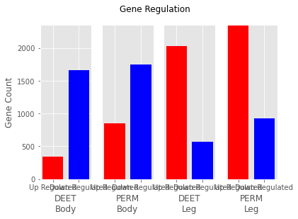
</p>
</div>
</div>
</div>

<div id="outline-container-org3a4a8f4" class="outline-4">
<h4 id="org3a4a8f4"><span class="section-number-4">11.2.3</span> <span class="todo REFACTOR">REFACTOR</span> Deet and Perm regulation Venn 2</h4>
<div class="outline-text-4" id="text-11-2-3">
<div class="org-src-container">
<pre class="src src-jupyter-python">plt.style.use(<span style="color: #A3BE8C;">"ggplot"</span>)

<span style="color: #81A1C1;">from</span> matplotlib_venn <span style="color: #81A1C1;">import</span> venn2, venn2_circles, venn2_unweighted
<span style="color: #81A1C1;">from</span> matplotlib_venn <span style="color: #81A1C1;">import</span> venn3, venn3_circles


<span style="color: #D8DEE9;">deet</span> = pd.read_csv(<span style="color: #A3BE8C;">"edgeR-Genes/genelists/upDeet.csv"</span>, header=<span style="color: #81A1C1;">None</span>)
revigo_treemap.pdf
revigo_treemap.pdf
deetcont = pd.read_csv(<span style="color: #A3BE8C;">"edgeR-Genes/genelists/downDeet.csv"</span>, header=<span style="color: #81A1C1;">None</span>)
perm = pd.read_csv(<span style="color: #A3BE8C;">"edgeR-Genes/genelists/upPerm.csv"</span>, header=<span style="color: #81A1C1;">None</span>)
permcont = pd.read_csv(<span style="color: #A3BE8C;">"edgeR-Genes/genelists/downPerm.csv"</span>, header=<span style="color: #81A1C1;">None</span>)
genes = pd.read_csv(<span style="color: #A3BE8C;">"edgeR-Genes/genelists/listofgenes.csv"</span>, header=<span style="color: #81A1C1;">None</span>)
<span style="color: #81A1C1;">def</span> <span style="color: #88C0D0;">compare</span>(s1, s2):
    c = <span style="color: #81A1C1;">len</span>(<span style="color: #81A1C1;">list</span>(<span style="color: #81A1C1;">set</span>(s1.iloc[:, <span style="color: #B48EAD; font-weight: bold;">0</span>]) &amp; <span style="color: #81A1C1;">set</span>(s2.iloc[:, <span style="color: #B48EAD; font-weight: bold;">0</span>])))
    <span style="color: #81A1C1;">return</span>(c)

diff = compare(deet, genes)
<span style="color: #81A1C1;">len</span>(deet)
<span style="color: #D8DEE9;">fig</span>, <span style="color: #D8DEE9;">axes</span> = plt.subplots(<span style="color: #B48EAD; font-weight: bold;">2</span>)
v1 = venn2_unweighted(subsets=(<span style="color: #81A1C1;">len</span>(deet), <span style="color: #81A1C1;">len</span>(deetcont), <span style="color: #81A1C1;">len</span>(genes)-<span style="color: #81A1C1;">len</span>(deetcont)-<span style="color: #81A1C1;">len</span>(deet)), set_labels=(<span style="color: #A3BE8C;">"Up Regulated"</span>, <span style="color: #A3BE8C;">"Down Regulated"</span>), ax=axes[<span style="color: #B48EAD; font-weight: bold;">0</span>])
v2 = venn2_unweighted(subsets=(<span style="color: #81A1C1;">len</span>(perm), <span style="color: #81A1C1;">len</span>(permcont), <span style="color: #81A1C1;">len</span>(genes)-<span style="color: #81A1C1;">len</span>(permcont)-<span style="color: #81A1C1;">len</span>(perm)), set_labels=(<span style="color: #A3BE8C;">"Up Regulated"</span>, <span style="color: #A3BE8C;">"Down Regulated"</span>), ax=axes[<span style="color: #B48EAD; font-weight: bold;">1</span>])
axes[<span style="color: #B48EAD; font-weight: bold;">0</span>].set_title(<span style="color: #A3BE8C;">"Deet"</span>)
axes[<span style="color: #B48EAD; font-weight: bold;">1</span>].set_title(<span style="color: #A3BE8C;">"Perm"</span>)
fig.tight_layout()
fig.savefig(<span style="color: #A3BE8C;">"figures/EdgeR/DeetAndPermRegulation.png"</span>, bbox_inches=<span style="color: #A3BE8C;">"tight"</span>, dpi=<span style="color: #B48EAD; font-weight: bold;">250</span>)
plt.show()
</pre>
</div>


<div id="org16eb5ee" class="figure">
<p>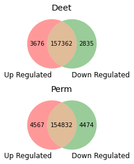
</p>
</div>
</div>
</div>

<div id="outline-container-orgf4f309a" class="outline-4">
<h4 id="orgf4f309a"><span class="section-number-4">11.2.4</span> Venn 3 Leg vs Body total Deseq2</h4>
<div class="outline-text-4" id="text-11-2-4">
<p>
This compares the expression of body and legs when compared to the total.
</p>
<div class="org-src-container">
<pre class="src src-jupyter-python"><span style="color: #D8DEE9;">genes</span> = pd.read_csv(<span style="color: #A3BE8C;">"GeneReference/listofgenes.csv"</span>, header=<span style="color: #81A1C1;">None</span>)
body = pd.read_csv(<span style="color: #A3BE8C;">"GeneReference/Body.csv"</span>)
leg = pd.read_csv(<span style="color: #A3BE8C;">"GeneReference/Leg.csv"</span>)

<span style="color: #D8DEE9;">fig</span>, <span style="color: #D8DEE9;">axes</span> = plt.subplots()

v = venn2_unweighted(subsets=(<span style="color: #81A1C1;">len</span>(body), <span style="color: #81A1C1;">len</span>(leg),<span style="color: #81A1C1;">len</span>(genes)-<span style="color: #81A1C1;">len</span>(leg) - <span style="color: #81A1C1;">len</span>(body)), set_labels=(<span style="color: #A3BE8C;">"Body"</span>, <span style="color: #A3BE8C;">"Leg"</span>), ax=axes)
v.get_patch_by_id(<span style="color: #A3BE8C;">"10"</span>).set_color(<span style="color: #A3BE8C;">"blue"</span>)
v.get_patch_by_id(<span style="color: #A3BE8C;">"11"</span>).set_color(<span style="color: #A3BE8C;">"blue"</span>)
v.get_patch_by_id(<span style="color: #A3BE8C;">"01"</span>).set_color(<span style="color: #A3BE8C;">"grey"</span>)
v.get_patch_by_id(<span style="color: #A3BE8C;">"01"</span>).set_alpha(<span style="color: #B48EAD; font-weight: bold;">0.5</span>)
axes.set_title(<span style="color: #A3BE8C;">"Leg vs Body"</span>)
fig.tight_layout()
fig.savefig(<span style="color: #A3BE8C;">"figures/figure2/Deseq-BodyvsLeg.png"</span>, bbox_inches=<span style="color: #A3BE8C;">"tight"</span>, dpi=<span style="color: #B48EAD; font-weight: bold;">250</span>)
fig.savefig(<span style="color: #A3BE8C;">"figures/figure2/Deseq-BodyvsLeg.pdf"</span>, bbox_inches=<span style="color: #A3BE8C;">"tight"</span>, dpi=<span style="color: #B48EAD; font-weight: bold;">250</span>)

plt.show()
</pre>
</div>


<div id="orgc68bca9" class="figure">
<p>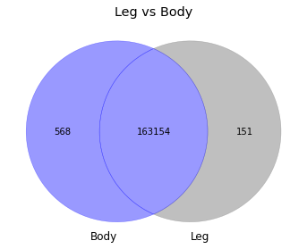
</p>
</div>
</div>
</div>

<div id="outline-container-org467836d" class="outline-4">
<h4 id="org467836d"><span class="section-number-4">11.2.5</span> <span class="todo REFACTOR">REFACTOR</span> Venn 4 Deet In Body edgeR</h4>
<div class="outline-text-4" id="text-11-2-5">
<div class="org-src-container">
<pre class="src src-jupyter-python"><span style="color: #D8DEE9;">genes</span> = pd.read_csv(<span style="color: #A3BE8C;">"edgeR-Genes/genelists/listofgenes.csv"</span>, header=<span style="color: #81A1C1;">None</span>)
body = pd.read_csv(<span style="color: #A3BE8C;">"edgeR-Genes/bodyExpr.csv"</span>)
upDeetBody = pd.read_csv(<span style="color: #A3BE8C;">"edgeR-Genes/genelists/upDeetBody.csv"</span>)
downDeetBody = pd.read_csv(<span style="color: #A3BE8C;">"edgeR-Genes/genelists/downDeetBody.csv"</span>)

<span style="color: #D8DEE9;">fig</span>, <span style="color: #D8DEE9;">axes</span> = plt.subplots()

v = venn2_unweighted(subsets=(<span style="color: #81A1C1;">len</span>(upDeetBody), <span style="color: #81A1C1;">len</span>(downDeetBody), <span style="color: #81A1C1;">len</span>(body)- <span style="color: #81A1C1;">len</span>(upDeetBody)-<span style="color: #81A1C1;">len</span>(downDeetBody)), set_labels=(<span style="color: #A3BE8C;">"Up Regulated"</span>, <span style="color: #A3BE8C;">"Down Regulated"</span>), ax=axes)
axes.set_title(<span style="color: #A3BE8C;">"Deet Expression in Body Genes"</span>)
fig.tight_layout()
fig.savefig(<span style="color: #A3BE8C;">"figures/figure3/DeetBody.png"</span>)
plt.show()
</pre>
</div>


<div id="orga7115c6" class="figure">
<p>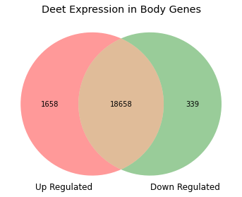
</p>
</div>
</div>
</div>

<div id="outline-container-org02755d2" class="outline-4">
<h4 id="org02755d2"><span class="section-number-4">11.2.6</span> <span class="todo REFACTOR">REFACTOR</span> Venn 5 Deet in Leg edgeR</h4>
<div class="outline-text-4" id="text-11-2-6">
<div class="org-src-container">
<pre class="src src-jupyter-python"><span style="color: #D8DEE9;">leg</span> = pd.read_csv(<span style="color: #A3BE8C;">"edgeR-Genes/legExpr.csv"</span>)
<span style="color: #D8DEE9;">upDeetLeg</span> = pd.read_csv(<span style="color: #A3BE8C;">"edgeR-Genes/genelists/upDeetLeg.csv"</span>)
<span style="color: #D8DEE9;">downDeetLeg</span> = pd.read_csv(<span style="color: #A3BE8C;">"edgeR-Genes/genelists/downDeetLeg.csv"</span>)

<span style="color: #D8DEE9;">fig</span>, <span style="color: #D8DEE9;">axes</span> = plt.subplots()
<span style="color: #D8DEE9;">v</span> = venn2_unweighted(subsets=(<span style="color: #81A1C1;">len</span>(upDeetLeg), <span style="color: #81A1C1;">len</span>(downDeetLeg), <span style="color: #81A1C1;">len</span>(leg)-<span style="color: #81A1C1;">len</span>(upDeetLeg)-<span style="color: #81A1C1;">len</span>(downDeetLeg)), set_labels=(<span style="color: #A3BE8C;">"Up Regulated"</span>, <span style="color: #A3BE8C;">"Down Regulated"</span>), ax=axes)
axes.set_title(<span style="color: #A3BE8C;">"Deet Expression in Leg Genes"</span>)
fig.tight_layout()
fig.savefig(<span style="color: #A3BE8C;">"figures/figure3/DeetLeg.png"</span>)
</pre>
</div>


<div id="org6e97818" class="figure">
<p>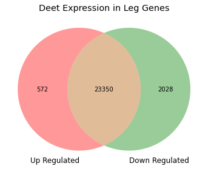
</p>
</div>
</div>
</div>

<div id="outline-container-org419bb9d" class="outline-4">
<h4 id="org419bb9d"><span class="section-number-4">11.2.7</span> <span class="todo REFACTOR">REFACTOR</span> Venn 6 Perm in Leg EdgeR</h4>
<div class="outline-text-4" id="text-11-2-7">
<div class="org-src-container">
<pre class="src src-jupyter-python"><span style="color: #D8DEE9;">leg</span> = pd.read_csv(<span style="color: #A3BE8C;">"edgeR-Genes/legExpr.csv"</span>)
<span style="color: #D8DEE9;">upPermLeg</span> = pd.read_csv(<span style="color: #A3BE8C;">"edgeR-Genes/genelists/upPermLeg.csv"</span>)
<span style="color: #D8DEE9;">downPermLeg</span> = pd.read_csv(<span style="color: #A3BE8C;">"edgeR-Genes/genelists/downPermLeg.csv"</span>)

<span style="color: #D8DEE9;">fig</span>, <span style="color: #D8DEE9;">axes</span> = plt.subplots()
<span style="color: #D8DEE9;">v</span> = venn2_unweighted(subsets=(<span style="color: #81A1C1;">len</span>(upPermLeg), <span style="color: #81A1C1;">len</span>(downPermLeg), <span style="color: #81A1C1;">len</span>(leg)-<span style="color: #81A1C1;">len</span>(downPermLeg)-<span style="color: #81A1C1;">len</span>(upPermLeg)), set_labels=(<span style="color: #A3BE8C;">"Up Regulated"</span>, <span style="color: #A3BE8C;">"Down Regulated"</span>), ax=axes)
axes.set_title(<span style="color: #A3BE8C;">"Perm Expression in Leg Genes"</span>)
fig.tight_layout()
fig.savefig(<span style="color: #A3BE8C;">"figures/EdgeR/PermLeg.png"</span>)
</pre>
</div>


<div id="org922d9b3" class="figure">
<p>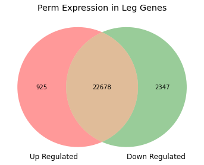
</p>
</div>
</div>
</div>

<div id="outline-container-orgda7b8d8" class="outline-4">
<h4 id="orgda7b8d8"><span class="section-number-4">11.2.8</span> <span class="todo REFACTOR">REFACTOR</span> Venn 7 Perm in Body EdgeR</h4>
<div class="outline-text-4" id="text-11-2-8">
<div class="org-src-container">
<pre class="src src-jupyter-python"><span style="color: #D8DEE9;">body</span> = pd.read_csv(<span style="color: #A3BE8C;">"edgeR-Genes/bodyExpr.csv"</span>)
<span style="color: #D8DEE9;">upPermBody</span> = pd.read_csv(<span style="color: #A3BE8C;">"edgeR-Genes/genelists/upPermBody.csv"</span>)
<span style="color: #D8DEE9;">downPermBody</span> = pd.read_csv(<span style="color: #A3BE8C;">"edgeR-Genes/genelists/downPermLeg.csv"</span>)

<span style="color: #D8DEE9;">fig</span>, <span style="color: #D8DEE9;">axes</span> = plt.subplots()
<span style="color: #D8DEE9;">v</span> = venn2_unweighted(subsets=(<span style="color: #81A1C1;">len</span>(upPermBody), <span style="color: #81A1C1;">len</span>(downPermBody), <span style="color: #81A1C1;">len</span>(body)-<span style="color: #81A1C1;">len</span>(upPermBody)-<span style="color: #81A1C1;">len</span>(downPermBody)), set_labels=(<span style="color: #A3BE8C;">"Up Regulated"</span>, <span style="color: #A3BE8C;">"Down Regulated"</span>), ax=axes)
axes.set_title(<span style="color: #A3BE8C;">"Perm Expression in Body Genes"</span>)
fig.tight_layout()
fig.savefig(<span style="color: #A3BE8C;">"figures/EdgeR/PermBody.png"</span>)
</pre>
</div>


<div id="orgea2792d" class="figure">
<p>
</p>
</div>
</div>
</div>

<div id="outline-container-orgea9a624" class="outline-4">
<h4 id="orgea9a624"><span class="section-number-4">11.2.9</span> <span class="todo REFACTOR">REFACTOR</span> Venn 8</h4>
<div class="outline-text-4" id="text-11-2-9">
<div class="org-src-container">
<pre class="src src-jupyter-python"><span style="color: #D8DEE9;">genes</span> = pd.read_csv(<span style="color: #A3BE8C;">"GeneReference/listofgenes.csv"</span>)
<span style="color: #D8DEE9;">upPerm</span> = pd.read_csv(<span style="color: #A3BE8C;">"edgeR-Genes/genelists/upPerm.csv"</span>)
<span style="color: #D8DEE9;">downPerm</span> = pd.read_csv(<span style="color: #A3BE8C;">"edgeR-Genes/genelists/downPerm.csv"</span>)

<span style="color: #D8DEE9;">fig</span>, <span style="color: #D8DEE9;">axes</span> = plt.subplots()
<span style="color: #D8DEE9;">v</span> = venn2_unweighted(subsets=(<span style="color: #81A1C1;">len</span>(upPerm), <span style="color: #81A1C1;">len</span>(downPerm), <span style="color: #81A1C1;">len</span>(genes)-<span style="color: #81A1C1;">len</span>(upPerm)-<span style="color: #81A1C1;">len</span>(downPerm)), set_labels=(<span style="color: #A3BE8C;">"Up Regulated"</span>, <span style="color: #A3BE8C;">"Down Regulated"</span>), ax=axes)

axes.set_title(<span style="color: #A3BE8C;">"Perm Expression"</span>)
fig.tight_layout()
fig.savefig(<span style="color: #A3BE8C;">"figures/EdgeR/Perm.png"</span>)
</pre>
</div>


<div id="org6c9e0e1" class="figure">
<p>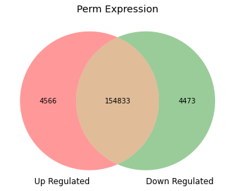
</p>
</div>
</div>
</div>

<div id="outline-container-org90c8f8c" class="outline-4">
<h4 id="org90c8f8c"><span class="section-number-4">11.2.10</span> Venn 9 Body vs Leg total EdgeR</h4>
<div class="outline-text-4" id="text-11-2-10">
<p>
Body vs leg EdgeR
</p>
<div class="org-src-container">
<pre class="src src-jupyter-python"><span style="color: #D8DEE9;">genes</span> = pd.read_csv(<span style="color: #A3BE8C;">"GeneReference/listofgenes.csv"</span>, header=<span style="color: #81A1C1;">None</span>)
body = pd.read_csv(<span style="color: #A3BE8C;">"edgeR-Genes/bodyExpr.csv"</span>)
leg = pd.read_csv(<span style="color: #A3BE8C;">"edgeR-Genes/legExpr.csv"</span>)
<span style="color: #D8DEE9;">fig</span>, <span style="color: #D8DEE9;">axes</span> = plt.subplots()

v = venn2_unweighted(subsets=(<span style="color: #81A1C1;">len</span>(body), <span style="color: #81A1C1;">len</span>(leg),<span style="color: #81A1C1;">len</span>(genes)-<span style="color: #81A1C1;">len</span>(leg) - <span style="color: #81A1C1;">len</span>(body)), set_labels=(<span style="color: #A3BE8C;">"Body"</span>, <span style="color: #A3BE8C;">"Leg"</span>), ax=axes)
v.get_patch_by_id(<span style="color: #A3BE8C;">"10"</span>).set_color(<span style="color: #A3BE8C;">"blue"</span>)
v.get_patch_by_id(<span style="color: #A3BE8C;">"11"</span>).set_color(<span style="color: #A3BE8C;">"blue"</span>)
v.get_patch_by_id(<span style="color: #A3BE8C;">"01"</span>).set_color(<span style="color: #A3BE8C;">"grey"</span>)
v.get_patch_by_id(<span style="color: #A3BE8C;">"01"</span>).set_alpha(<span style="color: #B48EAD; font-weight: bold;">0.5</span>)
axes.set_title(<span style="color: #A3BE8C;">"Leg vs Body"</span>)
fig.tight_layout()
fig.savefig(<span style="color: #A3BE8C;">"figures/figure2/EdgeR-BodyvsLeg.png"</span>, bbox_inches=<span style="color: #A3BE8C;">"tight"</span>, dpi=<span style="color: #B48EAD; font-weight: bold;">250</span>)
fig.savefig(<span style="color: #A3BE8C;">"figures/figure2/EdgeR-BodyvsLeg.pdf"</span>, bbox_inches=<span style="color: #A3BE8C;">"tight"</span>, dpi=<span style="color: #B48EAD; font-weight: bold;">250</span>)

plt.show()
</pre>
</div>


<div id="org4056732" class="figure">
<p>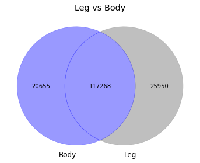
</p>
</div>
</div>
</div>
<div id="outline-container-org58f7281" class="outline-4">
<h4 id="org58f7281"><span class="section-number-4">11.2.11</span> Venn 10 Perm vs Deet Deseq2</h4>
<div class="outline-text-4" id="text-11-2-11">
<div class="org-src-container">
<pre class="src src-jupyter-python">plt.style.use(<span style="color: #A3BE8C;">"ggplot"</span>)

<span style="color: #81A1C1;">from</span> matplotlib_venn <span style="color: #81A1C1;">import</span> venn2, venn2_circles, venn2_unweighted
<span style="color: #81A1C1;">from</span> matplotlib_venn <span style="color: #81A1C1;">import</span> venn3, venn3_circles


<span style="color: #D8DEE9;">deet</span> = pd.read_csv(<span style="color: #A3BE8C;">"Deseq-Genes/upDeet.csv"</span>)
<span style="color: #D8DEE9;">deetcont</span> = pd.read_csv(<span style="color: #A3BE8C;">"Deseq-Genes/downDeet.csv"</span>)
<span style="color: #D8DEE9;">perm</span> = pd.read_csv(<span style="color: #A3BE8C;">"Deseq-Genes/upPerm.csv"</span>)
<span style="color: #D8DEE9;">permcont</span> = pd.read_csv(<span style="color: #A3BE8C;">"Deseq-Genes/downPerm.csv"</span>)
<span style="color: #D8DEE9;">genes</span> = pd.read_csv(<span style="color: #A3BE8C;">"GeneReference/listofgenes.csv"</span>)


<span style="color: #81A1C1;">def</span> <span style="color: #88C0D0;">compare</span>(s1, s2):
    <span style="color: #D8DEE9;">c</span> = <span style="color: #81A1C1;">len</span>(<span style="color: #81A1C1;">list</span>(<span style="color: #81A1C1;">set</span>(s1.iloc[:, <span style="color: #B48EAD; font-weight: bold;">0</span>]) &amp; <span style="color: #81A1C1;">set</span>(s2.iloc[:, <span style="color: #B48EAD; font-weight: bold;">0</span>])))
    <span style="color: #81A1C1;">return</span> c


<span style="color: #D8DEE9;">diff</span> = compare(deet, genes)
<span style="color: #81A1C1;">len</span>(deet)
<span style="color: #D8DEE9;">fig</span>, <span style="color: #D8DEE9;">axes</span> = plt.subplots(<span style="color: #B48EAD; font-weight: bold;">2</span>)
<span style="color: #D8DEE9;">v1</span> = venn2_unweighted(
    subsets=(<span style="color: #81A1C1;">len</span>(deet), <span style="color: #81A1C1;">len</span>(deetcont), <span style="color: #81A1C1;">len</span>(genes) - <span style="color: #81A1C1;">len</span>(deetcont) - <span style="color: #81A1C1;">len</span>(deet)),
    set_labels=(<span style="color: #A3BE8C;">"Up Regulated"</span>, <span style="color: #A3BE8C;">"Down Regulated"</span>),
    ax=axes[<span style="color: #B48EAD; font-weight: bold;">0</span>],
)
v2 = venn2_unweighted(
    subsets=(<span style="color: #81A1C1;">len</span>(perm), <span style="color: #81A1C1;">len</span>(permcont), <span style="color: #81A1C1;">len</span>(genes) - <span style="color: #81A1C1;">len</span>(permcont) - <span style="color: #81A1C1;">len</span>(perm)),
    set_labels=(<span style="color: #A3BE8C;">"Up Regulated"</span>, <span style="color: #A3BE8C;">"Down Regulated"</span>),
    ax=axes[<span style="color: #B48EAD; font-weight: bold;">1</span>],
)
axes[<span style="color: #B48EAD; font-weight: bold;">0</span>].set_title(<span style="color: #A3BE8C;">"Deet"</span>)
axes[<span style="color: #B48EAD; font-weight: bold;">1</span>].set_title(<span style="color: #A3BE8C;">"Perm"</span>)
fig.tight_layout()
fig.savefig(<span style="color: #A3BE8C;">"figures/Deseq2/DeetAndPermRegulation.png"</span>, bbox_inches=<span style="color: #A3BE8C;">"tight"</span>, dpi=<span style="color: #B48EAD; font-weight: bold;">250</span>)
fig.savefig(<span style="color: #A3BE8C;">"figures/Deseq2/DeetAndPermRegulation.pdf"</span>, bbox_inches=<span style="color: #A3BE8C;">"tight"</span>, dpi=<span style="color: #B48EAD; font-weight: bold;">250</span>)
plt.show()
</pre>
</div>


<div id="orgb50b7f6" class="figure">
<p>
</p>
</div>
</div>
</div>
<div id="outline-container-orgdee022f" class="outline-4">
<h4 id="orgdee022f"><span class="section-number-4">11.2.12</span> Venn 11 Deet In Body</h4>
<div class="outline-text-4" id="text-11-2-12">
<div class="org-src-container">
<pre class="src src-jupyter-python"><span style="color: #D8DEE9;">genes</span> = pd.read_csv(<span style="color: #A3BE8C;">"GeneReference/listofgenes.csv"</span>, header=<span style="color: #81A1C1;">None</span>)
body = pd.read_csv(<span style="color: #A3BE8C;">"Deseq-Genes/Body.csv"</span>)
upDeetBody = pd.read_csv(<span style="color: #A3BE8C;">"Deseq-Genes/upDeetBody.csv"</span>)
downDeetBody = pd.read_csv(<span style="color: #A3BE8C;">"Deseq-Genes/downDeetBody.csv"</span>)

<span style="color: #D8DEE9;">fig</span>, <span style="color: #D8DEE9;">axes</span> = plt.subplots()

v = venn2_unweighted(subsets=(<span style="color: #81A1C1;">len</span>(upDeetBody), <span style="color: #81A1C1;">len</span>(downDeetBody), <span style="color: #81A1C1;">len</span>(body)- <span style="color: #81A1C1;">len</span>(upDeetBody)-<span style="color: #81A1C1;">len</span>(downDeetBody)), set_labels=(<span style="color: #A3BE8C;">"Up Regulated"</span>, <span style="color: #A3BE8C;">"Down Regulated"</span>), ax=axes)
axes.set_title(<span style="color: #A3BE8C;">"Deet Expression in Body Genes"</span>)
fig.tight_layout()
fig.savefig(<span style="color: #A3BE8C;">"figures/figure3/DeetBodyDeseq.png"</span>)
fig.savefig(<span style="color: #A3BE8C;">"figures/figure3/DeetBodyDeseq.pdf"</span>)
plt.show()
</pre>
</div>


<div id="org4ab9f92" class="figure">
<p>
</p>
</div>
</div>
</div>
<div id="outline-container-org87f62d5" class="outline-4">
<h4 id="org87f62d5"><span class="section-number-4">11.2.13</span> Venn 12 Perm In Body</h4>
<div class="outline-text-4" id="text-11-2-13">
<div class="org-src-container">
<pre class="src src-jupyter-python"><span style="color: #D8DEE9;">genes</span> = pd.read_csv(<span style="color: #A3BE8C;">"GeneReference/listofgenes.csv"</span>, header=<span style="color: #81A1C1;">None</span>)
body = pd.read_csv(<span style="color: #A3BE8C;">"Deseq-Genes/Body.csv"</span>)
upPermBody = pd.read_csv(<span style="color: #A3BE8C;">"Deseq-Genes/upPermBody.csv"</span>)
downPermBody = pd.read_csv(<span style="color: #A3BE8C;">"Deseq-Genes/downPermBody.csv"</span>)

<span style="color: #D8DEE9;">fig</span>, <span style="color: #D8DEE9;">axes</span> = plt.subplots()

v = venn2_unweighted(subsets=(<span style="color: #81A1C1;">len</span>(upPermBody), <span style="color: #81A1C1;">len</span>(downPermBody), <span style="color: #81A1C1;">len</span>(body)- <span style="color: #81A1C1;">len</span>(upPermBody)-<span style="color: #81A1C1;">len</span>(downPermBody)), set_labels=(<span style="color: #A3BE8C;">"Up Regulated"</span>, <span style="color: #A3BE8C;">"Down Regulated"</span>), ax=axes)
axes.set_title(<span style="color: #A3BE8C;">"Perm Expression in Body Genes"</span>)
fig.tight_layout()
fig.savefig(<span style="color: #A3BE8C;">"figures/figure3/PermBodyDeseq.png"</span>)
fig.savefig(<span style="color: #A3BE8C;">"figures/figure3/PermBodyDeseq.pdf"</span>)
plt.show()
</pre>
</div>


<div id="orge647818" class="figure">
<p>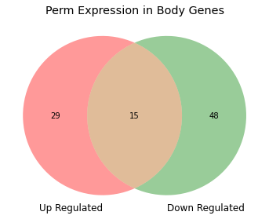
</p>
</div>
</div>
</div>
<div id="outline-container-orgb603fab" class="outline-4">
<h4 id="orgb603fab"><span class="section-number-4">11.2.14</span> Deet In Leg</h4>
<div class="outline-text-4" id="text-11-2-14">
<div class="org-src-container">
<pre class="src src-jupyter-python"><span style="color: #D8DEE9;">genes</span> = pd.read_csv(<span style="color: #A3BE8C;">"GeneReference/listofgenes.csv"</span>, header=<span style="color: #81A1C1;">None</span>)
Leg = pd.read_csv(<span style="color: #A3BE8C;">"Deseq-Genes/Leg.csv"</span>)
upDeetLeg = pd.read_csv(<span style="color: #A3BE8C;">"Deseq-Genes/upDeetLeg.csv"</span>)
downDeetLeg = pd.read_csv(<span style="color: #A3BE8C;">"Deseq-Genes/downDeetLeg.csv"</span>)

<span style="color: #D8DEE9;">fig</span>, <span style="color: #D8DEE9;">axes</span> = plt.subplots()

v = venn2_unweighted(subsets=(<span style="color: #81A1C1;">len</span>(upDeetLeg), <span style="color: #81A1C1;">len</span>(downDeetLeg), <span style="color: #81A1C1;">len</span>(Leg)- <span style="color: #81A1C1;">len</span>(upDeetLeg)-<span style="color: #81A1C1;">len</span>(downDeetLeg)), set_labels=(<span style="color: #A3BE8C;">"Up Regulated"</span>, <span style="color: #A3BE8C;">"Down Regulated"</span>), ax=axes)
axes.set_title(<span style="color: #A3BE8C;">"Deet Expression in Leg Genes"</span>)
fig.tight_layout()
fig.savefig(<span style="color: #A3BE8C;">"figures/figure3/DeetLegDeseq.png"</span>)
fig.savefig(<span style="color: #A3BE8C;">"figures/figure3/DeetLegDeseq.pdf"</span>)
plt.show()
</pre>
</div>


<div id="org8708441" class="figure">
<p>
</p>
</div>
</div>
</div>

<div id="outline-container-orga686565" class="outline-4">
<h4 id="orga686565"><span class="section-number-4">11.2.15</span> Perm In Leg</h4>
<div class="outline-text-4" id="text-11-2-15">
<div class="org-src-container">
<pre class="src src-jupyter-python"><span style="color: #D8DEE9;">genes</span> = pd.read_csv(<span style="color: #A3BE8C;">"GeneReference/listofgenes.csv"</span>, header=<span style="color: #81A1C1;">None</span>)
Leg = pd.read_csv(<span style="color: #A3BE8C;">"Deseq-Genes/Leg.csv"</span>)
upPermLeg = pd.read_csv(<span style="color: #A3BE8C;">"Deseq-Genes/upPermLeg.csv"</span>)
downPermLeg = pd.read_csv(<span style="color: #A3BE8C;">"Deseq-Genes/downPermLeg.csv"</span>)

<span style="color: #D8DEE9;">fig</span>, <span style="color: #D8DEE9;">axes</span> = plt.subplots()

v = venn2_unweighted(subsets=(<span style="color: #81A1C1;">len</span>(upPermLeg), <span style="color: #81A1C1;">len</span>(downPermLeg), <span style="color: #81A1C1;">len</span>(Leg)- <span style="color: #81A1C1;">len</span>(upPermLeg)-<span style="color: #81A1C1;">len</span>(downPermLeg)), set_labels=(<span style="color: #A3BE8C;">"Up Regulated"</span>, <span style="color: #A3BE8C;">"Down Regulated"</span>), ax=axes)
axes.set_title(<span style="color: #A3BE8C;">"Perm Expression in Leg Genes"</span>)
fig.tight_layout()
fig.savefig(<span style="color: #A3BE8C;">"figures/figure3/PermLegDeseq.png"</span>)
fig.savefig(<span style="color: #A3BE8C;">"figures/figure3/PermLegDeseq.pdf"</span>)
plt.show()
</pre>
</div>


<div id="org4d175ac" class="figure">
<p>
</p>
</div>
</div>
</div>
<div id="outline-container-orge22afb3" class="outline-4">
<h4 id="orge22afb3"><span class="section-number-4">11.2.16</span> Time Series</h4>
<div class="outline-text-4" id="text-11-2-16">
<div class="org-src-container">
<pre class="src src-jupyter-python"><span style="color: #81A1C1;">import</span> pandas <span style="color: #81A1C1;">as</span> pd
<span style="color: #81A1C1;">import</span> matplotlib.pyplot <span style="color: #81A1C1;">as</span> plt
<span style="color: #81A1C1;">from</span> matplotlib_venn <span style="color: #81A1C1;">import</span> venn2, venn2_circles, venn2_unweighted
<span style="color: #81A1C1;">import</span> numpy <span style="color: #81A1C1;">as</span> np

<span style="color: #D8DEE9;">genes</span> = pd.read_csv(<span style="color: #A3BE8C;">"GeneReference/listofgenes.csv"</span>, header=<span style="color: #81A1C1;">None</span>)

UpPermLeg = pd.read_csv(<span style="color: #A3BE8C;">"Deseq-Genes/upPermLeg.csv"</span>)
UpPermLegrownames = UpPermLeg.index.values
UP2 = pd.read_csv(<span style="color: #A3BE8C;">"Deseq-Genes/timeSeriesGenes/UP2.csv"</span>)
UP2rownames = UP2.index.values
UP6 = pd.read_csv(<span style="color: #A3BE8C;">"Deseq-Genes/timeSeriesGenes/UP6.csv"</span>)
UP6rownames = UP6.index.values
UP24 = pd.read_csv(<span style="color: #A3BE8C;">"Deseq-Genes/timeSeriesGenes/UP24.csv"</span>)
UP24rownames = UP24.index.values

<span style="color: #D8DEE9;">fig</span>, <span style="color: #D8DEE9;">axes</span> = plt.subplots()
v = venn2_unweighted(
    subsets=(
        <span style="color: #81A1C1;">len</span>(UP2),
        <span style="color: #81A1C1;">len</span>(UpPermLeg),
        <span style="color: #81A1C1;">len</span>(np.intersect1d(UpPermLegrownames, UP2rownames)),
    ),
    set_labels=(<span style="color: #A3BE8C;">"Up Regulated"</span>, <span style="color: #A3BE8C;">"Down Regulated"</span>),
    ax=axes,
)
plt.show()
fig.tight_layout()
fig.savefig(<span style="color: #A3BE8C;">"figures/timeSeries/UP2.pdf"</span>)
<span style="color: #D8DEE9;">fig</span>, <span style="color: #D8DEE9;">axes</span> = plt.subplots()
v = venn2_unweighted(
    subsets=(
        <span style="color: #81A1C1;">len</span>(UP6),
        <span style="color: #81A1C1;">len</span>(UpPermLeg),
        <span style="color: #81A1C1;">len</span>(np.intersect1d(UpPermLegrownames, UP6rownames)),
    ),
    set_labels=(<span style="color: #A3BE8C;">"Up Regulated"</span>, <span style="color: #A3BE8C;">"Down Regulated"</span>),
    ax=axes,
)
plt.show()
fig.tight_layout()
fig.savefig(<span style="color: #A3BE8C;">"figures/timeSeries/UP6.pdf"</span>)
<span style="color: #D8DEE9;">fig</span>, <span style="color: #D8DEE9;">axes</span> = plt.subplots()
v = venn2_unweighted(
    subsets=(
        <span style="color: #81A1C1;">len</span>(UP24),
        <span style="color: #81A1C1;">len</span>(UpPermLeg),
        <span style="color: #81A1C1;">len</span>(np.intersect1d(UpPermLegrownames, UP24rownames)),
    ),
    set_labels=(<span style="color: #A3BE8C;">"Up Regulated"</span>, <span style="color: #A3BE8C;">"Down Regulated"</span>),
    ax=axes,
)
plt.show()
axes.set_title(<span style="color: #A3BE8C;">"Perm Expression in Leg Genes"</span>)
fig.tight_layout()
fig.savefig(<span style="color: #A3BE8C;">"figures/timeSeries/UP24.pdf"</span>)

plt.show()
</pre>
</div>
</div>
</div>
</div>


<div id="outline-container-orgefd4ebe" class="outline-3">
<h3 id="orgefd4ebe"><span class="section-number-3">11.3</span> Pearson Correlation</h3>
<div class="outline-text-3" id="text-11-3">
<p>
This correlates the results from edgeR and Deseq2. Using this, the correlation can make the analysis tool interchangeable.
</p>
</div>
<div id="outline-container-orgcd97ee2" class="outline-4">
<h4 id="orgcd97ee2"><span class="section-number-4">11.3.1</span> Libraries</h4>
<div class="outline-text-4" id="text-11-3-1">
<div class="org-src-container">
<pre class="src src-jupyter-R"><span style="color: #81A1C1;">library</span><span style="color: #81A1C1;">(</span><span style="color: #A3BE8C;">"tidyverse"</span><span style="color: #81A1C1;">)</span>
<span style="color: #81A1C1;">library</span><span style="color: #81A1C1;">(</span><span style="color: #A3BE8C;">"ggpubr"</span><span style="color: #81A1C1;">)</span>
</pre>
</div>

<pre class="example" id="orgd5aaf86">
── Attaching packages ─────────────────────────────────────── tidyverse 1.3.1 ──

✔ ggplot2 3.3.3     ✔ dplyr   1.0.6
✔ tibble  3.1.2     ✔ stringr 1.4.0
✔ tidyr   1.1.3     ✔ forcats 0.5.1
✔ purrr   0.3.4

── Conflicts ────────────────────────────────────────── tidyverse_conflicts() ──
✖ dplyr::collapse()   masks IRanges::collapse()
✖ dplyr::combine()    masks Biobase::combine(), BiocGenerics::combine()
✖ dplyr::count()      masks matrixStats::count()
✖ dplyr::desc()       masks IRanges::desc()
✖ tidyr::expand()     masks S4Vectors::expand()
✖ dplyr::filter()     masks stats::filter()
✖ dplyr::first()      masks S4Vectors::first()
✖ dplyr::lag()        masks stats::lag()
✖ ggplot2::Position() masks BiocGenerics::Position(), base::Position()
✖ purrr::reduce()     masks GenomicRanges::reduce(), IRanges::reduce()
✖ dplyr::rename()     masks S4Vectors::rename()
✖ dplyr::slice()      masks IRanges::slice()
</pre>
</div>
</div>

<div id="outline-container-org9de53da" class="outline-4">
<h4 id="org9de53da"><span class="section-number-4">11.3.2</span> Import the data</h4>
<div class="outline-text-4" id="text-11-3-2">
<div class="org-src-container">
<pre class="src src-jupyter-R">EdgeR <span style="color: #81A1C1;">&lt;-</span> <span style="color: #88C0D0;">read.csv</span><span style="color: #81A1C1;">(</span><span style="color: #A3BE8C;">"/home/david/Documents/BenoitLab/RNA-seq/edgeR-Genes/bodyExpr.csv"</span><span style="color: #81A1C1;">)</span>
Deseq <span style="color: #81A1C1;">&lt;-</span> <span style="color: #88C0D0;">read.csv</span><span style="color: #81A1C1;">(</span><span style="color: #A3BE8C;">"/home/david/Documents/BenoitLab/RNA-seq/Deseq-Genes/total.csv"</span><span style="color: #81A1C1;">)</span>
common <span style="color: #81A1C1;">&lt;-</span> <span style="color: #88C0D0;">intersect</span><span style="color: #81A1C1;">(</span><span style="color: #88C0D0;">row.names</span><span style="color: #81A1C1;">(</span>Deseq<span style="color: #81A1C1;">)</span>, <span style="color: #88C0D0;">row.names</span><span style="color: #81A1C1;">(</span>EdgeR<span style="color: #81A1C1;">))</span>
EdgeRCommon <span style="color: #81A1C1;">&lt;-</span> EdgeR<span style="color: #81A1C1;">[</span>common, <span style="color: #81A1C1;">]</span>
DeseqCommon <span style="color: #81A1C1;">&lt;-</span> Deseq<span style="color: #81A1C1;">[</span>common, <span style="color: #81A1C1;">]</span>

ECol <span style="color: #81A1C1;">&lt;-</span> EdgeRCommon<span style="color: #81A1C1;">[</span><span style="color: #A3BE8C;">"logFC.partbody"</span><span style="color: #81A1C1;">]</span>
DCol <span style="color: #81A1C1;">&lt;-</span> <span style="color: #81A1C1;">-</span><span style="color: #B48EAD; font-weight: bold;">1</span><span style="color: #81A1C1;">*</span>DeseqCommon<span style="color: #81A1C1;">[</span><span style="color: #A3BE8C;">"log2FoldChange"</span><span style="color: #81A1C1;">]</span>
newD <span style="color: #81A1C1;">&lt;-</span> <span style="color: #88C0D0;">data.frame</span><span style="color: #81A1C1;">(</span>DCol, ECol<span style="color: #81A1C1;">)</span>
<span style="color: #88C0D0;">head</span><span style="color: #81A1C1;">(</span>newD<span style="color: #81A1C1;">)</span>
</pre>
</div>

<p>
A data.frame: 6 × 2
</p>

<table border="2" cellspacing="0" cellpadding="6" rules="groups" frame="hsides">


<colgroup>
<col  class="org-left" />

<col  class="org-right" />

<col  class="org-right" />
</colgroup>
<thead>
<tr>
<th scope="col" class="org-left">&#xa0;</th>
<th scope="col" class="org-right">log2FoldChange &lt;dbl&gt;</th>
<th scope="col" class="org-right">logFC.partbody &lt;dbl&gt;</th>
</tr>
</thead>
<tbody>
<tr>
<td class="org-left">dv.10</td>
<td class="org-right">4.460319</td>
<td class="org-right">4.601874</td>
</tr>

<tr>
<td class="org-left">dv.100006</td>
<td class="org-right">2.409308</td>
<td class="org-right">2.510430</td>
</tr>

<tr>
<td class="org-left">dv.10002</td>
<td class="org-right">2.489758</td>
<td class="org-right">2.567744</td>
</tr>

<tr>
<td class="org-left">dv.10003</td>
<td class="org-right">4.760398</td>
<td class="org-right">4.965640</td>
</tr>

<tr>
<td class="org-left">dv.100030</td>
<td class="org-right">1.801994</td>
<td class="org-right">2.086273</td>
</tr>

<tr>
<td class="org-left">dv.100031</td>
<td class="org-right">4.980622</td>
<td class="org-right">4.975215</td>
</tr>
</tbody>
</table>
</div>
</div>

<div id="outline-container-org94dfe00" class="outline-4">
<h4 id="org94dfe00"><span class="section-number-4">11.3.3</span> Plot the data</h4>
<div class="outline-text-4" id="text-11-3-3">
<div class="org-src-container">
<pre class="src src-jupyter-R"><span style="color: #81A1C1;">library</span><span style="color: #81A1C1;">(</span><span style="color: #A3BE8C;">"ggpubr"</span><span style="color: #81A1C1;">)</span>
pearson <span style="color: #81A1C1;">&lt;-</span> <span style="color: #88C0D0;">ggscatter</span><span style="color: #81A1C1;">(</span>newD, x <span style="color: #81A1C1;">=</span> <span style="color: #A3BE8C;">"log2FoldChange"</span>, y <span style="color: #81A1C1;">=</span> <span style="color: #A3BE8C;">"logFC.partbody"</span>,
          add <span style="color: #81A1C1;">=</span> <span style="color: #A3BE8C;">"reg.line"</span>, conf.int <span style="color: #81A1C1;">=</span> <span style="color: #8FBCBB;">TRUE</span>,
          cor.coef <span style="color: #81A1C1;">=</span> <span style="color: #8FBCBB;">TRUE</span>, cor.method <span style="color: #81A1C1;">=</span> <span style="color: #A3BE8C;">"pearson"</span>,
          xlab <span style="color: #81A1C1;">=</span> <span style="color: #A3BE8C;">"Deseq"</span>, ylab <span style="color: #81A1C1;">=</span> <span style="color: #A3BE8C;">"EdgeR"</span><span style="color: #81A1C1;">)</span>
pearson
<span style="color: #88C0D0;">ggsave</span><span style="color: #81A1C1;">(</span><span style="color: #A3BE8C;">"/home/david/Documents/BenoitLab/RNA-seq/figures/figure1/pearson.png"</span>, pearson, <span style="color: #88C0D0;">png</span><span style="color: #81A1C1;">())</span>
<span style="color: #88C0D0;">ggsave</span><span style="color: #81A1C1;">(</span><span style="color: #A3BE8C;">"/home/david/Documents/BenoitLab/RNA-seq/figures/figure1/pearson.pdf"</span>, pearson, <span style="color: #88C0D0;">pdf</span><span style="color: #81A1C1;">())</span>

</pre>
</div>

<pre class="example">
`geom_smooth()` using formula 'y ~ x'

Saving 6.67 x 6.67 in image

`geom_smooth()` using formula 'y ~ x'

Saving 7 x 7 in image

`geom_smooth()` using formula 'y ~ x'

</pre>


<div id="orgc7a467e" class="figure">
<p>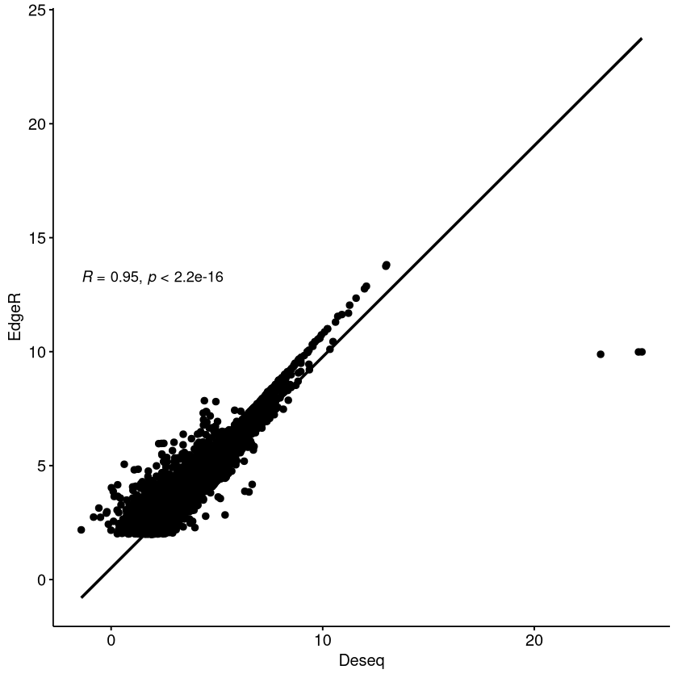
</p>
</div>
</div>
</div>
<div id="outline-container-org9f07662" class="outline-4">
<h4 id="org9f07662"><span class="section-number-4">11.3.4</span> Venn Diagram</h4>
<div class="outline-text-4" id="text-11-3-4">
<p>
Doesn&rsquo;t do what I wanted
</p>
<div class="org-src-container">
<pre class="src src-jupyter-R"><span style="color: #81A1C1;">library</span><span style="color: #81A1C1;">(</span>VennDiagram<span style="color: #81A1C1;">)</span>
ECol <span style="color: #81A1C1;">&lt;-</span> <span style="color: #88C0D0;">row.names</span><span style="color: #81A1C1;">(</span>EdgeR<span style="color: #81A1C1;">[</span><span style="color: #A3BE8C;">"logFC.partbody"</span><span style="color: #81A1C1;">])</span>
DCol <span style="color: #81A1C1;">&lt;-</span> <span style="color: #88C0D0;">row.names</span><span style="color: #81A1C1;">(</span><span style="color: #81A1C1;">-</span><span style="color: #B48EAD; font-weight: bold;">1</span><span style="color: #81A1C1;">*</span>Deseq<span style="color: #81A1C1;">[</span><span style="color: #A3BE8C;">"log2FoldChange"</span><span style="color: #81A1C1;">])</span>
<span style="color: #88C0D0;">venn.diagram</span><span style="color: #81A1C1;">(</span>
  x <span style="color: #81A1C1;">=</span> <span style="color: #88C0D0;">list</span><span style="color: #81A1C1;">(</span><span style="color: #88C0D0;">na.omit</span><span style="color: #81A1C1;">(</span>ECol<span style="color: #81A1C1;">)</span>, <span style="color: #88C0D0;">na.omit</span><span style="color: #81A1C1;">(</span>DCol<span style="color: #81A1C1;">))</span>,
  category.names <span style="color: #81A1C1;">=</span> <span style="color: #88C0D0;">c</span><span style="color: #81A1C1;">(</span><span style="color: #A3BE8C;">"EdgeR"</span>, <span style="color: #A3BE8C;">"Deseq"</span><span style="color: #81A1C1;">)</span>,
  filename <span style="color: #81A1C1;">=</span> <span style="color: #A3BE8C;">"/home/david/Documents/BenoitLab/RNA-seq/figures/figure1/vennBody.png"</span>,
  output<span style="color: #81A1C1;">=</span><span style="color: #8FBCBB;">TRUE</span>
<span style="color: #81A1C1;">)</span>
</pre>
</div>
</div>
</div>
</div>
<div id="outline-container-orgcaacb80" class="outline-3">
<h3 id="orgcaacb80"><span class="section-number-3">11.4</span> Dotplot</h3>
<div class="outline-text-3" id="text-11-4">
<p>
This figure plots the enrichment of specific genes. Ideal for small amounts of genes.
</p>
</div>
<div id="outline-container-org9257b32" class="outline-4">
<h4 id="org9257b32"><span class="section-number-4">11.4.1</span> imports</h4>
<div class="outline-text-4" id="text-11-4-1">
<div class="org-src-container">
<pre class="src src-jupyter-python"><span style="color: #81A1C1;">import</span> numpy <span style="color: #81A1C1;">as</span> np
<span style="color: #81A1C1;">import</span> matplotlib.pyplot <span style="color: #81A1C1;">as</span> plt
<span style="color: #81A1C1;">import</span> matplotlib
<span style="color: #81A1C1;">import</span> pandas <span style="color: #81A1C1;">as</span> pd
</pre>
</div>
</div>
</div>
<div id="outline-container-orgb7ce9f7" class="outline-4">
<h4 id="orgb7ce9f7"><span class="section-number-4">11.4.2</span> Theme settings</h4>
<div class="outline-text-4" id="text-11-4-2">
<div class="org-src-container">
<pre class="src src-jupyter-python">plt.<span style="color: #D8DEE9;">rcParams</span>[<span style="color: #A3BE8C;">"font.family"</span>] = <span style="color: #A3BE8C;">"Bahnschrift"</span>
<span style="color: #D8DEE9;">cmap</span> = matplotlib.colors.LinearSegmentedColormap.from_list(
    <span style="color: #A3BE8C;">""</span>, [<span style="color: #A3BE8C;">"dodgerblue"</span>, <span style="color: #A3BE8C;">"lightgrey"</span>]
)

</pre>
</div>
</div>
</div>
<div id="outline-container-org830f624" class="outline-4">
<h4 id="org830f624"><span class="section-number-4">11.4.3</span> Import</h4>
<div class="outline-text-4" id="text-11-4-3">
<p>
Use the pandas package to import the csv file
</p>
<div class="org-src-container">
<pre class="src src-jupyter-python"><span style="color: #D8DEE9;">dotplotdata</span> = pd.read_csv(<span style="color: #A3BE8C;">"../GeneReference/dotplotdata.csv"</span>)  <span style="color: #6f7787;"># </span><span style="color: #6f7787;">infers header existance</span>

<span style="color: #D8DEE9;">pesticide</span> = dotplotdata.Category
<span style="color: #D8DEE9;">pathway</span> = dotplotdata.Pathway
<span style="color: #D8DEE9;">enrichmentratio</span> = dotplotdata.Enrichment
<span style="color: #D8DEE9;">pval</span> = dotplotdata[<span style="color: #A3BE8C;">"P-Value"</span>]
</pre>
</div>
</div>
</div>
<div id="outline-container-orgbe67039" class="outline-4">
<h4 id="orgbe67039"><span class="section-number-4">11.4.4</span> Plot the figure</h4>
<div class="outline-text-4" id="text-11-4-4">
<div class="org-src-container">
<pre class="src src-jupyter-python"><span style="color: #D8DEE9;">fig</span>, <span style="color: #D8DEE9;">ax</span> = plt.subplots(<span style="color: #B48EAD; font-weight: bold;">1</span>)
<span style="color: #D8DEE9;">p</span> = ax.scatter(
    pathway, pesticide, c=pval, s=enrichmentratio * <span style="color: #B48EAD; font-weight: bold;">3</span>, cmap=cmap, vmin=<span style="color: #B48EAD; font-weight: bold;">0</span>, vmax=<span style="color: #B48EAD; font-weight: bold;">0.05</span>
)
plt.legend(loc=<span style="color: #A3BE8C;">"lower left"</span>, markerscale=<span style="color: #B48EAD; font-weight: bold;">2.0</span>, scatterpoints=<span style="color: #B48EAD; font-weight: bold;">1</span>, fontsize=<span style="color: #B48EAD; font-weight: bold;">10</span>)
plt.xticks(rotation=<span style="color: #A3BE8C;">"vertical"</span>)

<span style="color: #6f7787;"># </span><span style="color: #6f7787;">Legend:</span>
handles, labels = p.legend_elements(prop=<span style="color: #A3BE8C;">"sizes"</span>, alpha=<span style="color: #B48EAD; font-weight: bold;">0.6</span>, num=<span style="color: #B48EAD; font-weight: bold;">4</span>, func=<span style="color: #81A1C1;">lambda</span> x : x/<span style="color: #B48EAD; font-weight: bold;">3</span>)
legend2 = ax.legend(
    handles,
    labels,
    loc=<span style="color: #A3BE8C;">"upper right"</span>,
    title=<span style="color: #A3BE8C;">"Enrichment Ratio"</span>,
    bbox_to_anchor=(<span style="color: #B48EAD; font-weight: bold;">1.4</span>, <span style="color: #B48EAD; font-weight: bold;">1.1</span>),
)

<span style="color: #6f7787;"># </span><span style="color: #6f7787;">Colorbar:</span>
cbar = fig.colorbar(p, shrink=<span style="color: #B48EAD; font-weight: bold;">0.5</span>)
cbar.ax.set_ylabel(<span style="color: #A3BE8C;">"p Value"</span>, rotation=<span style="color: #B48EAD; font-weight: bold;">270</span>, labelpad=<span style="color: #B48EAD; font-weight: bold;">15</span>)

<span style="color: #6f7787;"># </span><span style="color: #6f7787;">Title, labels, and visual modifications:</span>
plt.title(<span style="color: #A3BE8C;">"Metabolic Pathway Enrichment"</span>)
plt.xlabel(<span style="color: #A3BE8C;">"Metabolic Pathway"</span>)
plt.ylabel(<span style="color: #A3BE8C;">"Pesticide"</span>)
ax.grid(axis=<span style="color: #A3BE8C;">"x"</span>, linestyle=<span style="color: #A3BE8C;">"dotted"</span>)
ax.spines[<span style="color: #A3BE8C;">"top"</span>].set_visible(<span style="color: #81A1C1;">False</span>)
ax.spines[<span style="color: #A3BE8C;">"right"</span>].set_visible(<span style="color: #81A1C1;">False</span>)

plt.show()
</pre>
</div>
</div>
</div>
<div id="outline-container-orga317797" class="outline-4">
<h4 id="orga317797"><span class="section-number-4">11.4.5</span> Save the Figure</h4>
<div class="outline-text-4" id="text-11-4-5">
<div class="org-src-container">
<pre class="src src-jupyter-python">plt.savefig(<span style="color: #A3BE8C;">'dotplot.pdf'</span>, dpi=<span style="color: #B48EAD; font-weight: bold;">300</span>, bbox_inches=<span style="color: #A3BE8C;">'tight'</span>)
plt.savefig(<span style="color: #A3BE8C;">'dotplot.jpg'</span>, dpi=<span style="color: #B48EAD; font-weight: bold;">300</span>, bbox_inches=<span style="color: #A3BE8C;">'tight'</span>)
</pre>
</div>
</div>
</div>
</div>
<div id="outline-container-orga6265bc" class="outline-3">
<h3 id="orga6265bc"><span class="section-number-3">11.5</span> Treemaps</h3>
<div class="outline-text-3" id="text-11-5">
<p>
The code to create the treemaps is generated in the revigo output folder. Simply use the <code>Rscript</code> command to run each script from the directory it is located in.
</p>
</div>
</div>
</div>
</div>
<div id="postamble" class="status">
<p class="author">Author: David Lewis</p>
<p class="date">Created: 2021-07-13 Tue 15:50</p>
</div>
</body>
</html>
